Natural Language Processing
Table of Content
- Regular Expressions
- Words
- -gram Language Models
- Text Classification and Sentiment
- Vector semantics and Word Embeddings
- Recurrent Neural Nets (RNNs)
- Training RNN
- Different Types of RNNs
- Language Models and Text Generation
- Modeling Sequences Conditioned on Context with RNNs
- Bidirectional RNNs
- The Challenge of Long-Term Dependencies in RNNs
- The Long Short-Term Memory and Other Gated RNNs
- Long Short-Term Memory (LSTM)
- Gated Recurrent Units (GRU)
- Clipping Gradients
- Encoder-Decoder Model with RNNs
- Seq-to-Seq Models with Attention Mechanisms
- Transformers
- Generative AI: Large Language Models
- Prompting, In-Context Learning and Parameter Efficient Finetuning (PEFT)
- Aligning Models with Human Values
- Question Answering, Information Retrieval, and Retrieval-Augmented Generation
- Model optimizations for deployment
- Hugging Face
Regular Expressions
One of the most useful tools for text processing has been the regular expression (often shortened to regex). Regular expressions are particularly useful for searching in texts, when we have a pattern to search for and a corpus of texts to search through. Unix command-line tool grep takes a regular expression and returns every line of the input document that matches the expression.
The simplest kind of regular expression is a sequence of simple characters; putting characters in sequence is called concatenation. To search for woodchuck, we type woodchuck. Regular expressions are case sensitive. The string of characters inside the braces specifies a disjunction of characters to match. For example, the pattern [wW] matches patterns containing either w or W.
The brackets can be used with the dash - to specify any one character in a range. The pattern [2-5] specifies any one of the characters 2, 3, 4, or 5.
If the caret ^ is the first symbol after the open square brace [, the resulting pattern is negated. For example, the pattern [^a] matches any single character (including special characters) except a. The question mark ? means “the preceding character or nothing”.
| Regex | Match (single characters) | Example Patterns Matched | #Matches |
|---|---|---|---|
[^A-Z] |
not an upper case letter | "oyfn pripetchik" | 15 |
[^Ss] |
neither ‘S’ nor ‘s’ | "Said so" | 5 |
[^.] |
not a period | "Yes." | 3 |
[e^] |
either ‘e’ or ‘^’ | “Look up ^” | 1 |
^The |
new line followed by 'The' | “The best” | 3 |
woodchucks? |
woodchuck or woodchucks | “woodchuck” | 1 |
colou?r |
color or colour | “color, colour” | 2 |
a* means “any string of zero or more as”. This will match a or aaaaaa, but it will also match the empty string at the start of Off Minor since this string starts with zero as. So the regular expression for matching one or more a is aa*. [ab]* means “zero or more a’s or b’s”. This pattern finds 8 matches in the string "Salam baba":
| start | end | content |
|---|---|---|
| 0 | 0 | |
| 1 | 2 | a |
| 2 | 2 | |
| 3 | 4 | a |
| 4 | 4 | |
| 5 | 5 | |
| 6 | 10 | baba |
| 10 | 10 |
As mentioned before, * matches empty strings too. +, means “one or more occurrences of the immediately preceding character or regular expression”. So [ab]+ finds only 3 matches in the previous sentence:
| start | end | content |
|---|---|---|
| 1 | 2 | a |
| 3 | 4 | a |
| 6 | 10 | baba |
and no empty string. Also, the expression [0-9]+ is the normal way to specify “a sequence of digits”. Thus these two patterns are equivalent: baaa*! or baa+!.
One very important special character is the period ., a wildcard expression that matches any single character (except a carriage return).
| Regex | Match | Example Matches |
|---|---|---|
beg.n |
any character between beg and n begin | beg’n, begun |
The wildcard is often used together with the * to mean “any string of characters”. For example, suppose we want to find any line in which a particular word, for example, aardvark, appears twice. We can specify this with the regular expression aardvark.*aardvark.
The most common anchors are the caret ^ and the dollar sign $. The caret ^ matches the start of a line. Thus, the caret ^ has three uses: to match the start of a line, to indicate a negation inside of square brackets, and just to mean a caret. The dollar sign $ matches the end of a line. So the pattern $ is a useful pattern for matching a space at the end of a line, and ^The dog\.$ matches a line that contains only the phrase The dog..
\b matches a word boundary, and \B matches a non word-boundary. Thus, \bthe\b matches the word the but not the word other. A “word” for the purposes of a regular expression is defined based on the definition of words in programming languages as a sequence of digits, underscores, or letters. Thus \b99\b will match the string 99 in There are 99 bottles of beer on the wall (because 99 follows a space) but not 99 in "There are 299 bottles of beer on the wall" (since 99 follows a number). But it will match 99 in $99 (since 99 follows a dollar sign $, which is not a digit, underscore, or letter).
Search for “cat or dog” ? we need a new operator, the disjunction operator, also called the pipe symbol | . The pattern cat|dog matches either the string cat or the string dog.
How can I specify both guppy and guppies? the pattern gupp(y|ies) would specify that we meant the disjunction only to apply to the suffixes yand ies. Unlike the | operator, the * operator applies by default only to a single character, not to a whole sequence.
With the parentheses, we could write the expression Column [0-9]+ * to match the word Column, followed by a number and optional spaces, the whole pattern repeated zero or more times. This idea that one operator may take precedence over another, requiring us to sometimes use parentheses to specify what we mean, is formalized by the operator precedence hierarchy for regular expressions. The following table gives the order of RE operator precedence, from highest precedence to lowest precedence.
| Parenthesis | () |
| Counters | *+?{} |
| Sequences and anchors | ^my end$ |
| Disjunction | | |
Thus, because counters have a higher precedence than sequences, the* matches theeeee but not thethe. Because sequences have a higher precedence than disjunction, the|any matches the or any but not thany or theny. Patterns can be ambiguous in another way. Consider the expression [a-z]* when matching against the text once upon a time. Since [a-z]* matches zero or more letters, this expression could match nothing, or just the first letter o in "once". In these cases regular expressions always match the largest string they can; we say that patterns are greedy, expanding to cover as much of a string as they can.
There are, however, ways to enforce non-greedy matching, using another meaning of the ? qualifier. The operator *? is a * that matches as little text as possible. The operator +? is a + that matches as little text as possible.
| Regex | Expansion | Match | First Matches |
|---|---|---|---|
\d |
[0-9] |
any digit | 5 in Party of 5 |
\D |
[^0-9] |
any non-digit | ``B in Blue moon |
\w |
[a-zA-Z0-9_] |
any alphanumeric/underscore | D in Daiyu |
\W |
[^\w] |
a non-alphanumeric | ! in !!!! |
\s |
[ \r\t\n\f] |
whitespace (space, tab) | |
\S |
[^\s] |
Non-whitespace | i in in Concord |
{n,m} specifies from n to m occurrences of the previous char or expression, and {n,} means at least n occurrences of the previous expression.
Substitution, Capture Groups
An important use of regular expressions is in substitutions. For example, the substitution operator s/regexp1/pattern/ used in Python and in Unix commands like sed allows a string characterized by a regular expression to be replaced by another string: s/colour/color/
It is often useful to be able to refer to a particular subpart of the string matching the first pattern. To do this, we put parentheses ( and ) around the first pattern and use the number operator \1 in the second pattern to refer back. Here’s how it looks: s/([0-9]+)/<\1>/. For example, suppose we are looking for the pattern “the Xer they were, the Xer they will be”, where we want to constrain the two X’s to be the same string. Consider, the (.*)er they were, the \1er they will be. This use of parentheses to store a pattern in memory is called a capture group. Every time a capture group is used (i.e., parentheses surround a pattern), the resulting match is stored in a numbered register. If you match two different sets of parentheses, \2 means whatever matched the second capture group. Thus the (.*)er they (.*), the \1er we \2 will match the faster they ran, the faster we ran but not the faster they ran, the faster we ate.
Parentheses thus have a double function in regular expressions:
- They are used to group terms for specifying the order in which operators should apply, and
- They are used to capture something in a register.
Occasionally we might want to use parentheses for grouping, but don’t want to capture the resulting pattern in a register. In that case we use a non-capturing group, which is specified by putting the special commands ?: after the open parenthesis, in the form (?: pattern ). For example, the regex
(?:some|a few) (people|cats) like some \1
will match some cats like some cats or some people like some people but not some people like some cats.
Lookahead Assertions
Finally, there will be times when we need to predict the future: look ahead in the text to see if some pattern matches, but not yet advance the pointer; We always keep to where we are in the text, so that we can then deal with the pattern if it occurs, but if it doesn’t we can check for something else instead.
These lookahead assertions make use of the (? syntax that we saw in the previous section for non-capture groups. The operator (?= pattern) is true if pattern occurs, but is zero-width, i.e. the match pointer doesn’t advance. The operator (?! pattern) only returns true if a pattern does not match, but again is zero-width and doesn’t advance the pointer. Negative lookahead is commonly used when we are parsing some complex pattern but want to rule out a special case. For example suppose we want to match, at the beginning of a line, any single word that doesn’t start with “Volcano”. We can use negative lookahead to do this: ^(?!Volcano)[A-Za-z]+.
Words
Before we talk about processing words, we need to decide what counts as a word. Let’s start by looking at one particular corpus (plural corpora), a computer-readable collection of text or speech. Whether we treat period ., comma ,, and so on as words depends on the task. Punctuation is critical for finding boundaries of things (commas, periods, colons) and for identifying some aspects of meaning (question marks, exclamation marks, quotation marks). For some tasks, like part-of-speech tagging or parsing or speech synthesis, we sometimes treat punctuation marks as if they were separate words.
An utterance is the spoken correlate of a sentence:
I do uh main- mainly business data processing
This utterance has two kinds of disfluencies. The broken-off word main- is called a fragment. Words like uh and um are called fillers or filled pauses. Should we consider these to be words? Again, it depends on the application. If we are building a speech transcription system, we might want to eventually strip out the disfluencies. They might be lumped together as the same type in some tasks, like speech recognition, where we care more about the sequence of words and less about the formatting, while for other tasks, such as deciding whether a particular word is a name of a person or location (named-entity tagging), capitalization is a useful feature and is retained. Sometimes we keep around two versions of a particular NLP model, one with capitalization and one without capitalization.
It’s sometimes useful to make a further distinction. Consider inflected forms like cats versus cat. We say these two words are different wordforms but have the same lemma. A lemma is a set of lexical forms having the same stem, and usually the same major part-of-speech. The wordform is the full inflected or derived form of the word. The two wordforms cat and cats thus have the same lemma, which we can represent as cat. For morphologically complex languages like Arabic, we often need to deal with lemmatization. For most tasks in English, however, wordforms are sufficient, and when we talk about words in this book we almost always mean wordforms. One of the situations even in English where we talk about lemmas is when we measure the number of words in a dictionary. Dictionary entries or boldface forms are a very rough approximation to (an upper bound on) the number of lemmas (since some lemmas have multiple boldface forms).
Finally, we should note that in practice, for many NLP applications (for example for neural language modeling) we don’t actually use words as our internal unit of representation at all! We instead tokenize the input strings into tokens, which can be words but can also be only parts of words. Before almost any natural language processing of a text, the text has to be normalized, a task called text normalization. At least three tasks are commonly applied as part of any normalization process:
- Tokenizing (segmenting) words
- Normalizing word formats
- Segmenting sentences
Word and Subword Tokenization
The simple Unix tools are fine for getting rough word statistics but more sophisticated algorithms are generally necessary for tokenization, the task of segmenting running text into words. These are the features for the input data going into the model. Better features create a more powerful model. Therefore, tokenization is the same as feature engineering in NLP. There are roughly two classes of tokenization algorithms. In top-down tokenization, we define a standard and implement rules to implement that kind of tokenization. But more commonly instead of using words as the input to NLP algorithms, we break up words into subword tokens, which can be words or parts of words or even individual letters. These are derived via bottom-up tokenization, in which we use simple statistics of letter sequences to come up with the vocabulary of subword tokens, and break up the input text into those subwords.
Consider the word "listen", and it consists of six letters. How can a computer understand this word? Assign a number to each letter? A common coding format is called ASCII, where common letters and symbols are encoded into the values from 0 to 255. It's useful in that only one byte is needed to store the value for a letter. For example, the letter L is 76, I is 73, and so on. This is a perfectly valid encoding but then it becomes much harder to extract meaning from these numbers after breaking down the structure to the smallest building blocks like this. For example, in a sentence, if we change the order of words, one can still extract the meaning of the sentence. But at character level, this is not easy for English language. For example the words LISTEN and SILENT are totally irrelevant although made of the same letters.
There are some other subtelty into how to tokenize. Consider the sentence: "Don't you love 🤗 Transformers? We sure do.". If tokenized by white space only, Then we get ["Don't", "you", "love", "🤗", "Transformers?", "We", "sure", "do."]. The punctuations are attached to the words "Transformer" and "do", which is suboptimal. We should take the punctuation into account so that a model does not have to learn a different representation of a word and every possible punctuation symbol that could follow it, which would explode the number of representations the model has to learn. Taking punctuation into account, tokenizing our exemplary text would give:
["Don", "'", "t", "you", "love", "🤗", "Transformers", "?", "We", "sure", "do", "."]
Better. However, it is disadvantageous, how the tokenization dealt with the word "Don't". "Don't" stands for "do not", so it would be better tokenized as ["Do", "n't"]. Depending on the rules we apply for tokenizing a text, a different tokenized output is generated for the same text. A pretrained model only performs properly if you feed it an input that was tokenized with the same rules that were used to tokenize its training data.
For instance, the BertTokenizer tokenizes "I have a new GPU!" as follows:
from transformers import BertTokenizer
tokenizer = BertTokenizer.from_pretrained("bert-base-uncased")
tokenizer.tokenize("I have a new GPU!")
["i", "have", "a", "new", "gp", "##u", "!"]
Because we are considering the uncased model, the sentence was lowercased first. We can see that the words ["i", "have", "a", "new"] are present in the tokenizer's vocabulary, but the word gpu is not. Consequently, the tokenizer splits gpu into known subwords: gp and ##u. The part ## means that the rest of the token should be attached to the previous one, without space (for decoding or reversal of the tokenization).
The way we tokenize would directly affect the output vocabulary size. A large vocab size forces the model to have an enormous embedding matrix as the input and output layer, which causes both an increased memory and time complexity at training and for inference as well. In general, transformer models rarely have a vocabulary size greater than 50,000, especially if they are pretrained only on a single language.
Top-down (rule-based) tokenization
While the Unix command sequence just removed all the numbers and punctuation, for most NLP applications we’ll need to keep these in our tokenization. We often want to break off punctuation as a separate token; commas are a useful piece of information for parsers, and periods help indicate sentence boundaries. But we’ll often want to keep the punctuation that occurs word internally, in examples like m.p.h., Ph.D., AT&T, and cap’n. Special characters and numbers will need to be kept in prices $45.55 and dates 01/02/06; we don’t want to segment that price into separate tokens of 45 and 55. And there are URLs https://www.stanford.edu, Twitter hashtags #nlproc, or email addresses someone@cs.colorado.edu. Number expressions introduce complications; in addition to appearing at word boundaries, commas appear inside numbers in English, every three digits: 555,500.50. Tokenization differs by language too.
A tokenizer can also be used to expand clitic contractions that are marked by apostrophes, converting what’re to the two tokens what are. A clitic is a part of a word that can’t stand on its own, and can only occur when it is attached to another word. Depending on the application, tokenization algorithms may also tokenize multiword expressions like New York or rock ’n’ roll as a single token, which requires a multiword expression dictionary of some sort. Tokenization is thus intimately tied up with named entity recognition, the task of detecting names, dates, and organizations. In practice, since tokenization is run before any other language processing, it needs to be very fast. For word tokenization we generally use deterministic algorithms based on regular expressions compiled into efficient finite state automata.
text = 'That U.S.A. poster-print costs $12.40...'
pattern = r'''(?x) # set flag to allow verbose regexps
(?:[A-Z]\.)+ # abbreviations, e.g. U.S.A.
| \w+(?:-\w+)* # words with optional internal hyphens
| \$?\d+(?:\.\d+)?%? # currency, percentages, e.g. $12.40, 82%
| \.\.\. # ellipsis
| [][.,;"’?():_‘-] # these are separate tokens; includes ], [
'''
nltk.regexp_tokenize(text, pattern)
['That', 'U.S.A.', 'poster-print', 'costs', '$12.40', '...']
NLP algorithms often learn some facts about language from one corpus (a training corpus) and then use these facts to make decisions about a separate test corpus and its language. Thus if our training corpus contains, say the words low, new, newer, but not lower, then if the word lower appears in our test corpus, our system will not know what to do with it. To deal with this unknown word problem, modern tokenizers automatically induce sets of tokens that include tokens smaller than words, called subwords. Subwords can be arbitrary substrings, or they can be meaning-bearing units like the morphemes -est or -er. (A morpheme is the smallest meaning-bearing unit of a language; for example the word "unwashable" has the morphemes un-, wash, and -able.). In modern tokenization schemes, most tokens are words, but some tokens are frequently occurring morphemes or other subwords like -er. Most tokenization schemes have two parts:
- Token learner takes a raw training corpus (sometimes roughly pre-separated into words, for example by whitespace) and induces a vocabulary, a set of tokens.
- Token segmenter takes a raw test sentence and segments it into the tokens in the vocabulary
There are known algorithms for tokenizing text which uses the corpus statistics to decide how to segment a text into tokens. Instead of just breaking words at every white space or at every character (in Chinese, for example), these algorithms use the data to determine how to tokenize it. This family is often called subword tokenization because tokens can be parts of words or a whole word. Three common algorithm here are:
- Byte Pair Encoding (BPE)
- WordPiece
- Unigram Language Modeling
Two algorithms are widely used: byte-pair encoding (Sennrich et al., 2016), and unigram language modeling (Kudo, 2018), There is also a SentencePiece library that includes implementations of both of these (Kudo and Richardson, 2018a), and people often use the name SentencePiece to simply mean unigram language modeling tokenization.
Byte Pair Encoding (BPE) Tokenizer
BPE relies on a pre-tokenizer that splits the training data into words. Pretokenization can be as simple as space tokenization, e.g. GPT-2, Roberta. More advanced pre-tokenization include rule-based tokenization, e.g. XLM, FlauBERT which uses Moses for most languages, or GPT which uses Spacy and ftfy, to count the frequency of each word in the training corpus.
After pre-tokenization (which determines the word boundaries), a set of unique words has been created and the frequency with which each word occurred in the training data has been determined. The BPE token learner begins with a vocabulary that is just the set of all individual characters. It then examines the training corpus:
- Chooses the two symbols that are most frequently adjacent (say ‘A’, ‘B’)
- Adds a new merged symbol ‘AB’ to the vocabulary, and replaces every adjacent ’A’ ’B’ in the corpus with the new ‘AB’
- It continues to count and merge, creating new longer and longer character strings, until merges have been done creating novel tokens
Number is the hyperparameter of the algorithm to define before training the tokenizers. The resulting vocabulary consists of the original set of characters plus new symbols. The algorithm is usually run inside words (not merging across word boundaries), so the input corpus is first white-space-separated to give a set of strings, each corresponding to the characters of a word, plus a special end-of-word symbol , and its counts.
Once we’ve learned our vocabulary, the token segmenter is used to tokenize a test sentence. The token segmenter just runs on the merges we have learned from the training data on the test data. It runs them greedily, in the order we learned them. (Thus the frequencies in the test data don’t play a role, just the frequencies in the training data do).
- First we segment each test sentence word into characters.
- Then we apply the first rule, then the second rule and so on.
Of course in real settings BPE is run with many thousands of merges on a very large input corpus. The result is that most words will be represented as full symbols, and only the very rare words (and unknown words) will have to be represented by their parts. There might inevitably be some unseen symbols that are unencodable by the generated vocabulary. One solution is to replace any unencodable symbol with a special name UNK ("unknown").
Byte pair encoding replaces the highest-frequency pair of bytes with a new byte that was not contained in the initial dataset. A lookup table of the replacements is required to rebuild the initial dataset. The modified version builds "tokens" (units of recognition) that match varying amounts of source text, from single characters (including single digits or single punctuation marks) to whole words (even long compound words).
The byte-level BPE is another approach. It simply converts the text into UTF-8 first, and treat it as a stream of bytes. This guarantees that any text encoded in UTF-8 can be encoded by the BPE. This has been used in BERT-like models like RoBERTa, BART, and DeBERTa, and GPT-like models like GPT-2. A base vocabulary that includes all possible base characters can be quite large if e.g. all unicode characters are considered as base characters. To have a better base vocabulary, GPT-2 uses bytes as the base vocabulary, which is a clever trick to force the base vocabulary to be of size 256 while ensuring that every base character is included in the vocabulary. With some additional rules to deal with punctuation, the GPT2's tokenizer can tokenize every text without the need for the UNK symbol. GPT-2 has a vocabulary size of 50,257, which corresponds to the 256 bytes base tokens, a special end-of-text token and the symbols learned with 50,000 merges.
WordPiece Tokenizer
WordPiece is the tokenization algorithm Google developed to pretrain BERT. It has since been reused in quite a few Transformer models based on BERT, such as DistilBERT, MobileBERT, Funnel Transformers, and MPNET. It has two versions of the WordPiece algorithm: bottom-up and top-down. In both cases, the goal is the same: "Given a training corpus and a number of desired tokens D, the optimization problem is to select D word pieces such that the resulting corpus is minimal in the number of word pieces when segmented according to the chosen word piece model."
The original bottom-up WordPiece algorithm, is based on byte-pair encoding. Like BPE, It starts with the alphabet, and iteratively combines common bigrams to form word-pieces and words. Like BPE, WordPiece starts from a small vocabulary including the special tokens used by the model and the initial alphabet. Since it identifies subwords by adding a prefix (like ## for BERT), each word is initially split by adding that prefix to all the characters inside the word. So, for instance, word gets split like this w ##o ##r ##d. Thus, the initial alphabet contains all the characters present at the beginning of a word and the characters present inside a word preceded by the WordPiece prefix. Then, again like BPE, WordPiece learns merge rules. The main difference is the way the pair to be merged is selected. Instead of selecting the most frequent pair, WordPiece computes a score for each pair, using the following formula:
By dividing the frequency of the pair by the product of the frequencies of each of its parts, the algorithm prioritizes the merging of pairs not only based on the frequency of the individual parts but more weight on the frequency of the combination itself in the vocabulary. For instance, it won’t necessarily merge un and ##able even if that pair occurs very frequently in the vocabulary, because un and ##able will likely have high frequencies as they appear in a lot of other words as well. In contrast, a pair like hu, ##gging will probably be merged faster (assuming the word hugging appears often in the vocabulary) since hu and ##gging are likely to be less frequent individually.
Source: Hugging Face
TensorFlow Text's vocabulary generator follows the top-down implementation from BERT. Starting with words and breaking them down into smaller components until they hit the frequency threshold, or can't be broken down further. The top-down WordPiece generation algorithm takes in a set of (word, count) pairs and a threshold T, and returns a vocabulary V. To see more details, look at this notebook.
Unigram Tokenizer
The Unigram algorithm is often used in SentencePiece, which is the tokenization algorithm used by models like AlBERT, T5, mBART, Big Bird, and XLNet. Unigram is not used directly for any of the models in the transformers, but it's used in conjunction with SentencePiece. Compared to BPE and WordPiece, Unigram works in the other direction: it starts from a big vocabulary and removes tokens from it until it reaches the desired vocabulary size. There are several options to use to build that base vocabulary: we can take the most common substrings in pre-tokenized words, for instance, or apply top-down BPE on the initial corpus with a large vocabulary size.
At each step of the training, the Unigram algorithm computes a loss over the corpus given the current vocabulary. Then, for each symbol in the vocabulary, the algorithm computes how much the overall loss would increase if the symbol was removed, and looks for the symbols that would increase it the least. Those symbols have a lower effect on the overall loss over the corpus, so in a sense they are “less needed” and are the best candidates for removal. This is all a very costly operation, so we don’t just remove the single symbol associated with the lowest loss increase, but the being a hyperparameter you can control, usually 10 or 20 percent of the symbols associated with the lowest loss increase. This process is then repeated until the vocabulary has reached the desired size. Note that we never remove the base characters, to make sure any word can be tokenized.
Now, this is still a bit vague: the main part of the algorithm is to compute a loss over the corpus and see how it changes when we remove some tokens from the vocabulary, but we haven’t explained how to do this yet. This step relies on the tokenization algorithm of a Unigram model, so we’ll dive into this next.
Source: Hugging Face
SentencePiece
All tokenization algorithms described so far have the same problem: It is assumed that the input text uses spaces to separate words. However, not all languages use spaces to separate words. One possible solution is to use language specific pre-tokenizers, e.g. XLM uses a specific Chinese, Japanese, and Thai pre-tokenizer. To solve this problem more generally, SentencePiece: A simple and language independent subword tokenizer and detokenizer for Neural Text Processing (Kudo et al., 2018) treats the input as a raw input stream, thus including the space in the set of characters to use. It then uses the BPE or unigram algorithm to construct the appropriate vocabulary.
The XLNetTokenizer uses SentencePiece for example, which is also why the ▁ character was included in the vocabulary. Decoding with SentencePiece is very easy since all tokens can just be concatenated and ▁ is replaced by a space.
from transformers import XLNetTokenizer
tokenizer = XLNetTokenizer.from_pretrained("xlnet-base-cased")
tokenizer.tokenize("Don't you love 🤗 Transformers? We sure do.")
["▁Don", "'", "t", "▁you", "▁love", "▁", "🤗", "▁", "Transform", "ers", "?", "▁We", "▁sure", "▁do", "."]
All transformers models in the library that use SentencePiece use it in combination with unigram. Examples of models using SentencePiece are ALBERT, XLNet, Marian, and T5.
These algorithms mentioned above are implmented in Pytorch, TensorFlow or Hugging Face.
Word Normalization, Lemmatization and Stemming
Word normalization is the task of putting words or tokens in a standard format. The simplest case of word normalization is case folding. Mapping everything to lower case means that Woodchuck and woodchuck are represented identically, which is very helpful for generalization in many tasks, such as information retrieval or speech recognition. For sentiment analysis and other text classification tasks, information extraction, and machine translation, by contrast, case can be quite helpful and case folding is generally not done. This is because maintaining the difference between, for example, US the country and us the pronoun can outweigh the advantage in generalization that case folding would have provided for other words. Sometimes we produce both cased (i.e. including both upper and lower case words or tokens) and uncased versions of language models.
Systems that use BPE or other kinds of bottom-up tokenization may do no further word normalization. In other NLP systems, we may want to do further normalizations, like choosing a single normal form for words with multiple forms like USA and US or uh-huh and uhhuh. This standardization may be valuable, despite the spelling information that is lost in the normalization process. For information retrieval or information extraction about the US, we might want to see information from documents whether they mention the US or the USA.
Lemmatization
For other natural language processing situations we also want two morphologically different forms of a word to behave similarly. For example in web search, someone may type the string woodchucks but a useful system might want to also return pages that mention woodchuck with no s.
Lemmatization is the task of determining that two words have the same root, despite their surface differences. The words am, are, and is have the shared lemma be; the words dinner and dinners both have the lemma dinner. The lemmatized form of a sentence like He is reading detective stories would thus be He be read detective story.
How is lemmatization done? The most sophisticated methods for lemmatization involve complete morphological parsing of the word. Morphology is the study of the way words are built up from smaller meaning-bearing units called morphemes. Two broad classes of morphemes can be distinguished: stems the central morpheme of the word, supplying the main meaning—and affixes—adding “additional” meanings of various kinds. A morphological parser takes a word like cats and parses it into the two morphemes cat and s, or parses a Spanish word like amaren (‘if in the future they would love’) into the morpheme amar ‘to love’, and the morphological features 3PL (third person plural) and future subjunctive.
Simple stemmers can be useful in cases where we need to collapse across different variants of the same lemma. Nonetheless, they are less commonly used in modern systems since they commit errors of both over-generalizing (lemmatizing policyto police) and under-generalizing (not lemmatizing Europeanto Europe).
Sentence Segmentation
Sentence segmentation is another important step in text processing. The most useful cues for segmenting a text into sentences are punctuation, like periods, question marks, and exclamation points. Question marks and exclamation points are relatively unambiguous markers of sentence boundaries. Periods, on the other hand, are more ambiguous. The period character . is ambiguous between a sentence boundary marker and a marker of abbreviations like Mr. or Inc. The previous sentence that you just read showed an even more complex case of this ambiguity, in which the final period of Inc. marked both an abbreviation and the sentence boundary marker. For this reason, sentence tokenization and word tokenization may be addressed jointly.
In general, sentence tokenization methods work by first deciding (based on rules or machine learning) whether a period is part of the word or is a sentence-boundary marker. An abbreviation dictionary can help determine whether the period is part of a commonly used abbreviation; the dictionaries can be hand-built or machine- learned (Kiss and Strunk, 2006), as can the final sentence splitter.
-gram Language Models
-gram models allow you to calculate probabilities of certain words happening in a specific sequence. Using that, you can build an auto-correct or even a search suggestion tool. Other applications of -gram language modeling include:
- Speech Recognition:
- Spelling Correction:
- Augmentative Communication: predict most likely word from menu for people unable to physically talk or sign
A -gram is a sequence of words sitting next to each other in the corpus.
Example:
Corpus: I am happy becuse I am learning
Unigrams: {I, am, happy, because, learning}
Bigrams: {I am, am happy, happy because, because I, am learning}
Trigrams: {I am happy, am happy becuse, happy because I, becuase I am, I am learning}
Given the corpus:
Suppose the history is The water of Walden Pond is so beautifully and we want to know the probability that the next word is blue:
One way to estimate this probability is directly from relative frequency counts: take a very large corpus, count the number of times we see "The water of Walden Pond is so beautifully", and count the number of times this is followed by "blue". Then the ratio is the answer: The water of Walden Pond is so beautifully blue divided by The water of Walden Pond is so beautifully. If we had a large enough corpus, we could compute these two counts and estimate the probability. But even the entire web isn’t big enough to give us good estimates for counts of entire sentences. This is because language is creative; new sentences are invented all the time, and we can’t expect to get accurate counts for such large objects as entire sentences. For this reason, we’ll need more clever ways to estimate the probability of a word (more accurately, token) given a history , or the probability of an entire word sequence .
Now, how can we compute probabilities of entire sequences like ? One thing we can do is decompose this probability using the chain rule of probability:
Approximate the probability of a sentence using
For example:
The chain rule shows the link between computing the joint probability of a sequence and computing the conditional probability of a word given previous words. But again, we come back to computing the exact probability of a word given a long sequence of preceding words, .
Markov Assumption
In practice, the corpus rarely contains the exact same phrases as the ones you computed your probabilities on. Hence, you can easily end up getting a probability of 0. To make an estimation of these probabilities, we might want to follow the Markov assumption that indicates only the last word matters. The intuition of the -gram model is that instead of computing the probability of a word given its entire history, we can approximate the history by just the last few words. Hence you can model the entire sentence as follows:
for . The bigram model, for example, approximates the probability of a word given all the previous words by using only the conditional probability given the preceding word . That is, you can model the entire sentence as follows:
For example, instead of computing the probability
we approximate it with the probability
The assumption that the probability of a word depends only on the previous word is called Markov assumption. Given the bigram assumption for the probability of an individual word, we can compute the probability of a complete word sequence by substituting:
How do we estimate these bigram or -gram probabilities? An intuitive way to estimate probabilities is Maximum Likelihood Estimation or MLE to get an estimate for the parameters of an -gram model by getting counts from a corpus, and normalizing the counts so that they lie between 0 and 1. For probabilistic models, normalizing means dividing by some total count so that the resulting probabilities fall between 0 and 1 and sum to 1. For example, to compute a particular bigram probability of a word given a previous word , we’ll compute the count of the bigram and normalize by the sum of all the bigrams that share the same first word :
This ratio is called a relative frequency. Although for pedagogical purposes we have only described bigram models, when there is sufficient training data we use trigram models, which condition on the previous two words, or 4-gram or 5-gram models. For these larger -grams, we’ll need to assume extra contexts to the left and right of the sentence end. For example, to compute trigram probabilities at the very beginning of the sentence, we use two pseudo-words for the first trigram i.e., .
Language model probabilities are always stored and computed as log probabilities in log space. This is because probabilities are (by definition) less than or equal to 1, and so the more probabilities we multiply together, the smaller the product becomes. Multiplying enough n-grams together would result in numerical underflow. To avoid underflow, you can work with log probabilities:
Adding in log space is equivalent to multiplying in linear space, so we combine log probabilities by adding them. We do all computation and storage in log space, and just convert back into probabilities if we need to report probabilities at the end by taking the exp of the log probability.
Now that we have joint distribution of words, we have a generative model using 2-grams:
- Choose sentence start
- Choose next bigram starting with previous word
- Continue until
</s>is picked
We usually start and end a sentence with the following tokens respectively: <s> </s>. When computing probabilities using a unigram, you can append an <s> in the beginning of the sentence. To generalize to an -gram language model, you can add N-1 start tokens <s>. For the end of sentence token </s>, you only need one even if it is an -gram. Example of bigram:
corpus=<s>Lyn drinks chocolate</s> <s>John drinks tea</s> <s>Lyn eats chocolate</s>
Evaluating Language Models
The best way to evaluate the performance of a language model is to embed it in an application (downstream tasks) and measure how much the application improves. Such end-to-end evaluation is called extrinsic evaluation. Extrinsic evaluation is the only way to know if a particular improvement in the language model (or any component) is really going to help the task at hand. Thus for evaluating -gram language models that are a component of some task like speech recognition or machine translation, we can compare the performance of two candidate language models by running the speech recognizer or machine translator twice, once with each language model, and seeing which gives the more accurate transcription.
Unfortunately, running big NLP systems end-to-end is often very expensive. Instead, it’s helpful to have a metric that can be used to quickly evaluate potential improvements in a language model. An intrinsic evaluation metric is one that measures the quality of a model independent of any application.
In order to evaluate any machine learning model, we need to have at least three distinct data sets: the training set, the development set, and the test set. The training set is the data we use to learn the parameters of our model; for simple -gram language models it’s the corpus from which we get the counts that we normalize into the probabilities of the -gram language model. The test set is a different, held-out set of data, not overlapping with the training set, that we use to evaluate the model. We need a separate test set to give us an unbiased estimate of how well the model we trained can generalize when we apply it to some new unknown dataset. A machine learning model that perfectly captured the training data, but performed terribly on any other data, wouldn’t be much use when it comes time to apply it to any new data or problem! We thus measure the quality of an -gram model by its performance on this unseen test set or test corpus.
How should we choose a training and test set? The test set should reflect the language we want to use the model for. If we’re going to use our language model for speech recognition of chemistry lectures, the test set should be text of chemistry lectures. How to evaluate the trained model? Which model is better? The standard answer is simple: whichever language model assigns a higher probability to the test set—which means it more accurately predicts the test set—is a better model. Given two probabilistic models, the better model is the one that better predicts the details of the test data, and hence will assign a higher probability to the test data.
How do we divide our data into training, development, and test sets? We want our test set to be as large as possible, since a small test set may be accidentally unrepresentative, but we also want as much training data as possible. At the minimum, we would want to pick the smallest test set that gives us enough statistical power to measure a statistically significant difference between two potential models. It’s important that the dev set be drawn from the same kind of text as the test set, since its goal is to measure how we would do on the test set.
Perplexity
A better model is better at predicting upcoming words, and so it will be less surprised by (i.e., assign a higher probability to) each word when it occurs in the test set. So given a test corpus, a better language model will assign a higher probability to it than a worse language model. The probability of a test set (or any sequence) depends on the number of words or tokens in it; the probability of a test set gets smaller the longer the text. We’d prefer a metric that is per-word, normalized by length, so we could compare across texts of different lengths. The metric we use is, a function of probability called perplexity, is one of the most important metrics in NLP, used for evaluating large language models as well as -gram models. The perplexity (sometimes abbreviated as PP or PPL) of a language model on a test set is the inverse probability of the test set (one over the probability of the test set), normalized by the number of words (or tokens). For this reason it’s sometimes called the per-word or per-token perplexity. A text that is written by humans is more likely to have lower perplexity, where a text generated by random word choice would have a higher perplexity. Perplexity is defined as the exponentiated average negative log-likelihood of a sequence. If we have a tokenized sequence in the test set, then the perplexity of is
Use log for more computationally stable formula:
Another version of this uses instead of in th previous formula. If there are sentences in the text, the formula becomes:
Probabilities are given according to our model. Intuitively, perplexity can be thought of as an evaluation of the model’s ability to predict uniformly among the set of specified tokens in a corpus. Importantly, this means that the tokenization procedure has a direct impact on a model’s perplexity which should always be taken into consideration when comparing different models. This is also equivalent to the exponentiation of the cross-entropy between the data and model predictions. Thus the the lower the perplexity of a model on the data, the better the model. Minimizing perplexity is equivalent to maximizing the test set probability according to the language model.
Text Classification and Sentiment
The goal of classification is to take a single observation, extract some useful features, and thereby classify the observation into one of a set of discrete classes. The most common way of doing text classification in language processing is instead via supervised machine learning. In supervised learning, we have a data set of input observations, each associated with some correct output (a ‘supervision signal’). The goal of the algorithm is to learn how to map from a new observation to a correct output. A probabilistic classifier additionally will tell us the probability of the observation being in the class. Many kinds of machine learning algorithms are used to build classifiers. Generative classifiers like Naive Bayes build a model of how a class could generate some input data. Given an observation, they return the class most likely to have generated the observation. Discriminative classifiers like Logistic Regression instead learn what features from the input are most useful to discriminate between the different possible classes. While discriminative systems are often more accurate and hence more commonly used, generative classifiers still have a role.
Naive Bayes
Naive Bayes is a probabilistic classifier, meaning that for a document , out of all classes the classifier returns the class which has the maximum posterior probability given the document :
This idea of Bayesian inference has been known since the work of Bayes (1763), and was first applied to text classification by Mosteller and Wallace (1964). The intuition of Bayesian classification is to use Bayes’ rule to transform Eq. 4.1 into other probabilities that have some useful properties. Based on Bayes’ rule, we can write as:
Because does not depend on any class; we are always asking about the most likely class for the same document , which must have the same probability . We call Naive Bayes a generative model: first a class is sampled from the prior , and then the words are generated by sampling from the likelihood .
Without loss of generality, we can represent a document as a set of features :
This equation is still too hard to compute directly: without some simplifying assumptions, estimating the probability of every possible combination of features would require huge numbers of parameters and impossibly large training sets. Naive Bayes classifiers therefore make two simplifying assumptions:
- The first is the bag-of-words assumption: we assume position doesn’t matter, and that the word “love” has the same effect on classification whether it occurs as the 1st, 20th, or last word in the document. Thus we assume that the features only encode word identity and not position. Therefore, we represent a text document as an unordered set of words with their position ignored, keeping only their frequency in the document.
- The second is commonly called the Naive Bayes assumption: the conditional independence assumption; the probabilities are independent given the class and hence can be "naively" multiplied as follows:
Note that this doesn’t mean they’re independent!
To apply the naive Bayes classifier to text, we will use each word in the documents as a feature, and we consider each of the words in the document by walking an index through every word position in the document. Naive Bayes calculations, like calculations for language modeling, are done in log space, to avoid underflow and increase speed.
Training Naive Bayes Classifiers
How can we learn the probabilities and ? Let’s first consider the maximum likelihood estimate. We’ll simply use the frequencies in the data. For the class prior , we ask what percentage of the documents in our training set are in each class . Let be the number of documents in our training data with class and be the total number of documents. Then:
To learn the probability , we’ll assume a feature is just the existence of a word in the document’s bag of words, and so we’ll want , which we compute as the fraction of times the word appears among all words in all documents of class c:
where is the vocabulary.
Remember that Bayes naively multiplies all the feature likelihoods together, zero probabilities in the likelihood term for any class will cause the probability of the class to be zero, no matter the other evidence! The simplest solution is the add-one (Laplace) smoothing. While Laplace smoothing is usually replaced by more sophisticated smoothing algorithms in language modeling, it is commonly used in Naive Bayes text categorization:
What do we do about words that occur in our test data but are not in our vocabulary at all because they did not occur in any training document in any class? The solution for such unknown words is to ignore them!—remove them from the test document and not include any probability for them at all. Finally, some systems choose to completely ignore another class of words: stop words, very frequent words like the and a. This can be done by sorting the vocabulary by frequency in the training set, and defining the top 10–100 vocabulary entries as stop words, or alternatively by using one of the many predefined stop word lists available online. Then each instance of these stop words is simply removed from both training and test documents as if it had never occurred. In most text classification applications, however, using a stop word list doesn’t improve performance, and so it is more common to make use of the entire vocabulary and not use a stop word list.
Evaluation: Precision, Recall, F-measure
Consider the email classification task into three classes: Spam, Urgent and Normal. The simplest metric is accuracy which asks what percentage of all the observations (for the spam or pie examples that means all emails or tweets) our system labeled correctly. Although accuracy might seem a natural metric, we generally don’t use it for text classification tasks because accuracy doesn’t work well when the classes are unbalanced. Instead of accuracy we generally turn to two other metrics: precision and recall. To evaluate any system for detecting things, we start by building a confusion matrix which keeps the record of the counts classified correctly or incorrectly.
- Precision measures the percentage of the items that the system detected that are in fact positive:
- Recall measures the percentage of items actually present in the input that were correctly identified by the system:
Thus precision and recall, unlike accuracy, emphasize true positives: finding the things that we are supposed to be looking for. A balence of precision P and recall R is score: which the the most commonly used metric. Harmonic mean is used because the harmonic mean of two values is closer to the minimum of the two values than the arithmetic mean is.
Evaluating with more than two classes
Lots of classification tasks in language processing have more than two classes. For sentiment analysis we generally have 3 classes (positive, negative, neutral) and even more classes are common for tasks like part-of-speech tagging, word sense disambiguation, semantic role labeling, emotion detection, and so on. In order to derive a single metric that tells us how well the system is doing, we can combine these values in two ways. In macro averaging, we compute the performance for each class, and then average over classes. In micro averaging, we collect the decisions for all classes into a single confusion matrix, and then compute precision and recall from that table:
A micro average is dominated by the more frequent class, since the counts are pooled. The macro average better reflects the statistics of the smaller classes, and so is more appropriate when performance on all the classes is equally important or classes are imbalanced. Similarly, micro-macro averaging for recall is computed. Harmonic averaging of these give micro-macro averaging for .
Logistic Regression
Logistic Regression is one of the most important analytic tools in the social and natural sciences. In natural language processing, logistic regression is the base-line supervised machine learning algorithm for classification, and also has a very close relationship with neural networks. Logistic Regression can be used to classify an observation into one of two classes, or into one of many classes (multinomial logistic regression). The most important difference between Naive Bayes and Logistic Regression is that Logistic Regression is a discriminative classifier while Naive Bayes is a generative classifier. The goal of binary Logistic Regression is to train a classifier that can make a binary decision about the class of a new input observation. Consider a single input observation , which we will represent by a vector of features . We want to know the probability that this observation is a member of the class. So perhaps the decision is “positive sentiment” versus “negative sentiment”, the features represent counts of words in a document, is the probability that the document has positive sentiment, and is the probability that the document has negative sentiment.
Logistic Regression solves this task by learning, from a training set, a vector of weights and a bias term. Each weight is a real number, and is associated with one of the input features . The weight represents how important that input feature is to the classification decision. Geometrically, the linear classifier is a hyperplane splitting the feature space into three regions: on the hyperplane, on one side of it or on the other side of it. To make a decision on a test instance in the feature space , the linear classifier can simply evaluate the linear function at input to classify it:
- can be positive, meaning is on one side of the hyperplane. Then the classifier assign class . The larger indicates the further is from the hyperplane on that side. This gives the classifier more confidence on its prediction.
- can be negative, meaning is on the opposite side of the hyperplane. Then the classifier assign class . The larger indicates the further is from the hyperplane on that side. This gives the classifier more confidence on its prediction.
- can be zero, meaning is right on the hyperplane. In this case the classifier is not decisive. The input is equally likely to belong to either classes.
We can mathematically achieve this just by apply Sigmoid function after the linear function :
For any , . The input to the sigmoid function, the score is often called the logit. This is because the logit function is the inverse of the sigmoid:
Using the term logit for is a way of reminding us that by using the sigmoid to turn (which ranges from−∞ to ∞) into a probability, we are implicitly interpreting as not just any real-valued number, but as specifically a log odds. Sometimes is also called unnormalized log probability.
Logistic regression is applied to all sorts of NLP tasks, and any property of the input can be a feature. Consider the task of period disambiguation: deciding if a period is the end of a sentence or part of a word, by classifying each period into one of two classes, EOS (end-of-sentence) and not-EOS. We might use features like below expressing that the current word is lower case, perhaps with a positive weight. Or a feature expressing that the current word is in our abbreviations dictionary Prof., perhaps with a negative weight. A feature can also express a combination of properties. For example, a period following an upper case word is likely to be an EOS, but if the word itself is St. and the previous word is capitalized then the period is likely part of a shortening of the word street following a street name.
In classic models, features are designed by hand by examining the training set with an eye to linguistic intuitions and literature, supplemented by insights from error analysis on the training set of an early version of a system. We can also consider feature interactions, complex features that are combinations of more primitive features. We saw such a feature for period disambiguation above, where a period on the word St. was less likely to be the end of the sentence if the previous word was capitalized. It is clear that designing features by hand requires extensive human effort. For this reason, recent NLP systems avoid hand-designed features and instead focus on Representation Learning: ways to learn features automatically in an unsupervised way from the input.
Scaling input features: When different input features have extremely different ranges of values, it’s common to rescale them so they have comparable ranges. We standardize input values by centering them to result in a zero mean and a standard deviation of one (this transformation is sometimes called the z-score):
where . Alternatively, we can normalize the input features values to lie between 0 and 1:
Having input data with comparable range is useful when comparing values across features. Data scaling is especially important in large neural networks, since it helps speed up gradient descent.
Choosing a Classifier: Logistic Regression has a number of advantages over Naive Bayes. Naive Bayes has overly strong conditional independence assumptions. Consider two features which are strongly correlated; in fact, imagine that we just add the same feature twice. Naive Bayes will treat both copies of as if they were separate, multiplying them both in, overestimating the evidence. By contrast, logistic regression is much more robust to correlated features; if two features and are perfectly correlated, regression will simply assign part of the weight to and part to . Thus when there are many correlated features, Logistic Regression will assign a more accurate probability than Naive Bayes. So Logistic Regression generally works better on larger documents or datasets and is a common default. Despite the less accurate probabilities, Naive Bayes still often makes the correct classification decision. Furthermore, Naive Bayes can work extremely well (sometimes even better than logistic regression) on very small datasets or short documents.
Multinomial Logistic Regression
Sometimes we need more than two classes. Perhaps we might want to do 3-way sentiment classification (positive, negative, or neutral). In such cases we use Multinomial Logistic Regression, also called Softmax Regression. In multinomial logistic regression, we want to label each observation with a class from a set of classes, under the stipulation that only one of these classes is the correct one (hard classification: an observation can not be in multiple classes). The output for each input will be a vector of length . If class is the correct class, we’ll set , and set all the other elements of to be 0 - one-hot vector. The job of the classifier is to produce an estimate vector . For each class , the value will be the classifier’s estimate of the probability .
As we mentioned the linear function estimates the log probability of input belongs to class . So we can write:
As in the binary case, we need an extra term to ensure that the whole set of probabilities forms a probability distribution, i.e. so that they all sum to one: . The reason why we need to add a term to ensure normalization, rather than multiply as is usual, is because we have taken the logarithm of the probabilities. Based on this, we obtain:
So . That explains why Softmax gives the probability . Based on this obeservation, let have the shape , for the number of output classes and , the number of input features. The bias vector has one value for each of the output classes. Therefore:
Learning in Multinomial Logistic Regression
The loss function for multinomial logistic regression generalizes the loss function for binary logistic regression from 2 to K classes. Recall that that the cross-entropy loss for binary logistic regression:
The loss function for multinomial logistic regression generalizes the binary loss equation for classes:
Hence the cross-entropy loss is simply the log of the output probability corresponding to the correct class, and it is also called the negative log likelihood loss. For Logistic Regression, this loss function is conveniently convex. A convex function has at most one minimum; there are no local minima to get stuck in, so gradient descent starting from any point is guaranteed to find the minimum. (By contrast, the loss for multi-layer neural networks is non-convex, and gradient descent may get stuck in local minima for neural network training and never find the global optimum.)
We learn the parametes by applying Stochastic Gradient Descent Algorithm. Stochastic gradient descent is an online algorithm that minimizes the loss function by computing its gradient after each training example, and nudging parameter in the right direction. Stochastic gradient descent is called stochastic because it chooses a single random example at a time, moving the weights so as to improve performance on that single example. That can result in very choppy movements, so it’s common to compute the gradient over batches of training instances rather than a single instance. For example in batch training we compute the gradient over the entire dataset. By seeing so many examples, batch training offers a superb estimate of which direction to move the weights, at the cost of spending a lot of time processing every single example in the training set to compute this perfect direction. A compromise is mini-batch training: we train on a group of examples (perhaps 512, or 1024) that is less than the whole dataset. (If is the size of the dataset, then we are doing batch gradient descent; if m = 1, we are back to doing stochastic gradient descent.) Mini-batch training also has the advantage of computational efficiency. The mini-batches can easily be vectorized, choosing the size of the mini-batch based on the computational resources. This allows us to process all the examples in one mini-batch in parallel and then accumulate the loss, something that’s not possible with individual or batch training.
Vector semantics and Word Embeddings
Vector semantics is the standard way to represent word meaning in NLP. The proposal by linguists like Joos (1950), Harris (1954), and Firth (1957) to define the meaning of a word by its distribution in language use, meaning its neighboring words or grammatical environments. Their idea was that two words that occur in very similar distributions (whose neighboring words are similar) have similar meanings.
The idea of vector semantics is to represent a word as a point in a multidimensional semantic space that is derived from the distributions of the word neighbors. Vectors for representing words are called embeddings although the term is sometimes more strictly applied only to dense vectors like word2vec, rather than sparse tf-idf.
Raw frequency is very skewed and not very discriminative. If we want to know what kinds of contexts are shared by cherry and strawberry but not by digital and information, we’re not going to get good discrimination from words like the, it, or they, which occur frequently with all sorts of words and aren’t informative about any particular word. It’s a bit of a paradox. Words that occur nearby frequently (maybe pie nearby cherry) are more important than words that only appear once or twice. Yet words that are too frequent—ubiquitous, like the or good— are unimportant. How can we balance these two conflicting constraints?
The tf-idf weighted value for word in document is:
which combines term frequency (just the raw count)
and the inverse document frequency is where is the total number of documents in the collection and is the number of documents in which term occurs. The log is used to damp the ratio because of the large number of documents in many collections. The second factor (idf) emphasizes discriminative words and gives a higher weight to words that occur only in a few documents. Terms that are limited to a few documents are useful for discriminating those documents from the rest of the collection; terms that occur frequently across the entire collection aren’t as helpful. If a word appears in every document, the tf-idf weighting leads it to be ignored because idf factor becomes 0 (the column corresponding to that word is all zeros!). The method tf-idf represents a word as a sparse (mostly zeros), long vector with dimensions corresponding to words in the vocabulary or documents in a collection. Plus it focuses mostly on frequency of words in document rather than which words might appear together or in which order, more similar to bag-of-words.
A more powerful word representation is embeddings which are short and dense vectors with number of dimensions ranging from 50-1000, rather than the much larger vocabulary size or number of documents we’ve seen. And the vectors are dense: instead of vector entries being sparse, mostly-zero counts or functions of counts, the values will be real-valued numbers that can be negative. It turns out that dense vectors work better in every NLP task than sparse vectors. One important component of word meaning is the relationship between word senses. For example when one word has a sense whose meaning is identical to a sense of another word, or nearly identical, we say the two senses of those two words are synonyms. Synonyms include such pairs as couch/sofa, vomit/throw up, filbert/hazelnut, car/automobile. Two words are synonymous if they are substitutable for one another in any sentence without changing the truth conditions of the sentence, the situations in which the sentence would be true.
While words don’t have many synonyms, most words do have lots of similar words. Cat is not a synonym of dog, but cats and dogs are certainly similar words. In moving from synonymy to similarity, it will be useful to shift from talking about relations between word senses (like synonymy) to relations between words (like similarity). Dealing with words avoids having to commit to a particular representation of word senses, which will turn out to simplify our task. The notion of word similarity is very useful in larger semantic tasks. Knowing how similar two words are can help in computing how similar the meaning of two phrases or sentences are, a very important component of tasks like question answering, paraphrasing, and summarization. One way of getting values for word similarity is to ask humans to judge how similar one word is to another. A number of datasets have resulted from such experiments.
Word Embeddings
Neural language models share statistical strength between one word (and its context) and other similar words and contexts. For example, if the word dog and the word cat map to representations that share many attributes, then sentences that contain the word cat can inform the predictions that will be made by the model for sentences that contain the word dog, and vice-versa. Because there are many such attributes, there are many ways in which generalization can happen, transferring information from each training sentence to an exponentially large number of semantically related sentences. The curse of dimensionality requires the model to generalize to a number of sentences that is exponential in the sentence length. We sometimes call these word representations word embeddings.
The word representations embed those points in a feature space of lower dimension. In the original space, every word is represented by a one-hot vector using a vocabulary we choose (for example, if man is the word number 5391 in this dictionary, we represent it with a vector with 1 in position 5391 and zero anywhere else). So every pair of words is at Euclidean distance from each other. For large vocabularies, it can be computationally very expensive to represent an output distribution over the choice of a word, because the vocabulary size is large. In many applications, contains hundreds of thousands of words. So this representation is prone to the curse of dimensionality. Another weaknesses of this representation is that it makes no semantic connection between words such synonyms or opposites etc. Also it does not distinguish them in a meaningful way. For example, the relationship between apple and orange is not any closer as the relationship between any of the other words man, woman, king, queen, and orange. So it's not easy for the learning algorithm to generalize from knowing that knowledge into another similar one. Also dot product between any two different one-hot vector is zero.
In the embedding space, words that frequently appear in similar contexts (or any pair of words sharing some “features” learned by the model) are close to each other in the embedding space. This often results in words with similar meanings being neighbors. So semantically similar words map to representations that are close to each other. The following figure shows 2-dimensional visualizations of word embeddings obtained from a neural machine translation model ( Bahdanau et al. 2015 , ), zooming in on specific areas where semantically related words have embedding vectors that are close to each other. Countries appear on the left and numbers on the right. Keep in mind that these embeddings are 2-D for the purpose of visualization (using algorithms like t-SNE). In real applications, embeddings typically have higher dimensionality and can simultaneously capture many kinds of similarity between words.

In short, the pros for word embedding are:
- Low dimensions (less than V)
- Allow you to encode meaning
How to Create Word Embeddings?
To create word embeddings you always need a corpus of text, and an embedding method. The context of a word tells you what type of words tend to occur near that specific word. The context is important as this is what will give meaning to each word embedding.
There are many types of possible methods that allow you to learn the word embeddings but mainly they involve a machine learning model performs a learning task, and the main by-products of this task are the word embeddings. The task could be to learn to predict a word based on the surrounding words in a sentence of the corpus. These vectors capture information about the meaning of the word based on the surrounding words.
Word2vec is a technique in natural language processing (NLP) for obtaining vector representations of words. The word2vec algorithm estimates these representations by modeling text in a large corpus. Once trained, such a model can detect synonymous words or suggest additional words for a partial sentence. Word2vec was developed by Tomáš Mikolov and colleagues at Google and published in 2013. Word2vec represents a word as a high-dimension vector of numbers which capture relationships between words. In particular, words which appear in similar contexts are mapped to vectors which are nearby as measured by cosine similarity. This indicates the level of semantic similarity between the words, so for example the vectors for walk and ran are nearby, as are those for but and however, and Berlin and Germany. Word2vec can use either of two model architectures to produce these distributed representations of words:
- **Continuous bag of words (CBOW) **
- Continuously sliding skip-gram
In both architectures, word2vec considers both individual words and a sliding context window as it iterates over the corpus.
The CBOW can be viewed as a ‘fill in the blank’ task, where the word embedding represents the way the word influences the relative probabilities of other words in the context window. Words which are semantically similar should influence these probabilities in similar ways, because semantically similar words should be used in similar contexts. The order of context words does not influence prediction (bag of words assumption).
In the continuous skip-gram architecture, the model uses the current word to predict the surrounding window of context words. The skip-gram architecture weighs nearby context words more heavily than more distant context words. According to the authors' note, CBOW is faster while skip-gram does a better job for infrequent words.
These tasks are self-supervised: it is both unsupervised in the sense that the input data — the corpus — is unlabelled, and supervised in the sense that the data itself provides the necessary context which would ordinarily make up the labels.
Continuous Bag of Words Model (CBOW)
In the case of the continuous bag-of-words model, the objective of the task is to predict a missing word based on the surrounding words. Here is a visualization that shows you how the models works. For example, the window size in the image below is 5. The context size, C, is 2. C usually tells you how many words before or after the center word the model will use to make the prediction.

Before implementing any natural language processing algorithm, you might want to clean the data and tokenize it into words. This step is called preprocessing. Here are a few things to keep track of when handling your data. Cleaning include:
- Adjusting letter case (all lower case)
- Removing/replacing punctuations ([,!.?"<>])
- Numbers
- Special characters or special words (#nlp)
- Eliminate handles and URLs
- Remove stop words like "and, is, a, on, etc"
- Stemming - or convert every word to its stem. 'dancer', 'dancing', 'danced' all become 'dance'
Loop over the text and clean it line by line. You can add as many conditions as you want in the lines to convert them into a dictionary of word tokens, called a vocabulary . It is the set of all words appearing in the corpus. Every word in this vocabulary represented by a one-hot vector. A sentence then can be represented by the sum or average of the one-hot vectors of the words in the sentence.
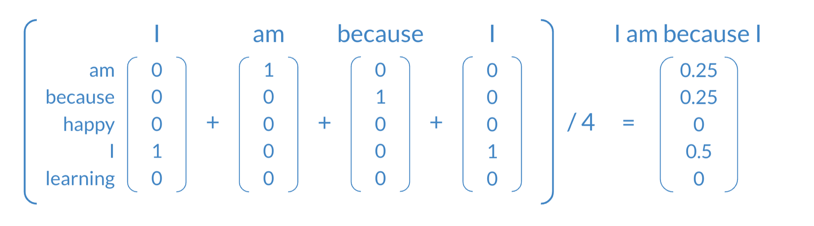
As a result you end up having the following vectors that you can use for your training:
| Context words | Context words vector | Center word | Center word vector |
|---|---|---|---|
| I am because I | [0.25, 0.25, 0.0, 0.5, 0.0] | happy | [0, 0, 1, 0, 0] |
Our goal is to learn one vector for each word . The architecture for the CBOW model could be described as follows:

where is the batch size. The final layer goes through a Softmax which gives a distribution over V, vocabulary words. The prediction is the word that corresponds to the argmax of the output of Softmax. The cost function for the CBOW model is a cross-entropy loss defined as:
which needs to be minimized. This is equivalent to maximizing log likelihood because except for one entry. Similarly, loss on the batch is
After the model is trained, one can use the first or second weight matrix as embeddings. For example, is of dim , where is the embedding dimension. So column 1 is the embedding for word 1 and so on. The weight matrix of the second layer can similarly be taken as the embedding matrix. Even the average of the two can be considered as the embedding: .
Continuous Skip-grams
While a bag-of-words model predicts a word given the neighboring context, a skip-gram model predicts the context (or neighbors) of a word, given the word itself. The model is trained on skip-grams, which are -grams that allow tokens to be skipped (see the diagram below for an example). The context of a word can be represented through a set of skip-gram pairs of (target_word, context_word) where context_word appears in the neighboring context of target_word. Given a word in a sentence as target and a window size, we randomly choose a word in the sentence within the window length around the target as its context. For example, if the sentence is "With seven courses this semester, I have to study hard at school", then we could have the following as some skip-grams with window size 6:
| target | context |
|---|---|
| course | semester |
| course | study |
| course | seven |
For every target word as input, the model predicts the corresponding target. The architecture of the model could be similar to the one for CBOW. This could be as simple as one-hot vector of target () --> affine transformation --> softmax () --> . By this model,
where output of softmax when model input is one-hot vector for target , and is the one-hot vector for context word. The loss is cross-entropy the same as mentioned before. Only one probability vector is computed. Skip-gram treats each context word equally: the models computes the probability for each word of appearing in the context independently of its distance to the center word.
Loss functions for CBOW and SkipGram are expensive to compute because of the softmax normalization, where we sum over all scores! Computing the denominator of this formulation involves performing a full softmax over the entire vocabulary words, which are often large terms. See this notes for more details.
High-Dimensional Outputs
In many applications, vocabulary contains hundreds of thousands of words. The naive approach to representing such a distribution is to apply an affine transformation from a hidden representation to the output space, then apply the softmax function. Suppose we have a vocabulary with size . The weight matrix describing the linear component of this affine transformation is very large, because its output dimension is . This imposes a high memory cost to represent the matrix, and a high computational cost to multiply by it. Because the softmax is normalized across all outputs, it is necessary to perform the full matrix multiplication at training time as well as test time—we cannot calculate only the dot product with the weight vector for the correct output. The high computational costs of the output layer thus arise both at training time (to compute the likelihood and its gradient) and at test time (to compute probabilities for all or selected words). More clearly, the affine-softmax output layer performs the following computations:
If contains elements then the above operation is . With in the thousands and in the hundreds of thousands, this operation dominates the computation of most neural language models. There are some ways to reduce this cost:
- Use of a Short List
- Hierarchical Softmax
- Importance Sampling (or Negative Sampling)
Negative Sampling
A simple idea is we could instead just approximate the loss function. For every training step, instead of looping over the entire vocabulary, we can just sample several negative examples! We "sample" from a noise distribution (Pn(w)) whose probabilities match the ordering of the frequency of the vocabulary. To augment our formulation of the problem to incorporate Negative Sampling, all we need to do is update the objective function, then gradient and the update rule. See notes for more details. Using this technique, the computational complexity of gradient estimation for the output layer is reduced to be proportional to the number of negative samples rather than proportional to the size of the output vector.
Visualizing Embeddings
The simplest way to visualize the meaning of a word embedded in a space is to list the most similar words to by sorting the vectors for all words in the vocabulary by their cosine with the vector for . For example the 7 closest words to frog using a particular embeddings computed with the GloVe algorithm are: frogs, toad, litoria, leptodactylidae, rana, lizard, and eleutherodactylus.
Yet another visualization method is to use a clustering algorithm to show a hierarchical representation of which words are similar to others in the embedding space. Probably the most common visualization method, however, is to project the 100 dimensions of a word down into 2 dimensions using a projection method called t-SNE. Recent research focuses on ways to try to remove these kinds of biases, for example by developing a transformation of the embedding space that removes gender stereotypes but preserves definitional gender or changing the training procedure. However, although these sorts of debiasing may reduce bias in embeddings, they do not eliminate it, and this remains an open problem.
Recurrent Neural Nets (RNNs)
Previously, we tried using traditional language models, but it turns out they took a lot of space and RAM. For example, in the sentence below:
Nora was supposed to study with me. I called her but she did not -----.
An trigram would only look at "did not" and would try to complete the sentence from there based on frequencies. As a result, the model will not be able to see the beginning of the sentence "I called her but she" and understand dependencies of the end of the sentence on the beginning so probably the most likely word is to have after "did not". RNNs help us alleviate this problem by being able to track dependencies that are much further apart from each other.
Recurrent Neural Networks or RNNs are a family of neural networks for processing sequential data. Much as a convolutional network is a neural network that is specialized for processing a grid of values X such as an image, a recurrent neural network is a neural network that is specialized for processing a sequence of vectors (such as one-hot vectors) . Just as convolutional networks can readily scale to images with large width and height, and some convolutional networks can process images of variable size, recurrent networks can scale to much longer sequences than would be practical for networks without sequence-based specialization. Most recurrent networks can also process sequences of variable length.
To go from multilayer networks to recurrent networks, we need to take advantage of one of the early ideas found in machine learning and statistical models of the 1980s: sharing parameters across different parts of a model. If we had separate parameters for each value of the time index, we could not generalize to sequence lengths not seen during training, nor share statistical strength across different sequence lengths and across different positions in time. A traditional fully connected feedforward network would have separate parameters for each input feature, so it would need to learn all of the rules of the language separately at each position in the sentence. By comparison, a recurrent neural network shares the same weights across several time steps. The convolution operation allows a network to share parameters across time, but is shallow. The output of convolution is a sequence where each member of the output is a function of a small number of neighboring members of the input. The idea of parameter sharing manifests in the application of the same convolution kernel at each time step. Recurrent networks share parameters in a different way. Each member of the output is a function of the previous members of the output. Each member of the output is produced using the same update rule applied to the previous outputs. This recurrent formulation results in the sharing of parameters through a very deep computational graph.We refer to RNNs as operating on a sequence that contains vectors with the time step index ranging from 1 to . The time step index need not literally refer to the passage of time in the real world. Sometimes it refers only to the position in the sequence. RNNs extends the idea of a computational graph to include cycles. These cycles represent the influence of the present value of a variable on its own value at a future time step. Such computational graphs allow us to define recurrent neural networks. Many recurrent neural networks use equation like the following or a similar one to define the values of their hidden units.
It uses the same transition function with the same parameters at every time step. Typical RNNs will add extra architectural features such as output layers that read information out of the state to make predictions. When the recurrent network is trained to perform a task that requires predicting the future from the past, the network typically learns to use as a kind of lossy summary of the task-relevant aspects of the past sequence of inputs up to . This summary is in general necessarily lossy, since it maps an arbitrary length sequence
to a fixed length vector . Depending on the training criterion, this summary might selectively keep some aspects of the past sequence with more precision than other aspects. For example, if the RNN is used in statistical language modeling, typically to predict the next word given previous words, it may not be necessary to store all of the information in the input sequence up to time , but rather only enough information to predict the rest of the sentence.
Training RNN
Learning a single, shared model allows generalization to sequence lengths that did not appear in the training set, and allows the model to be estimated with far fewer training examples than would be required without parameter sharing. The following is a computational graph to compute the training loss of a recurrent network that maps an input sequence values to a corresponding sequence of output values. A loss measures how far each is from the corresponding training target . When using Softmax outputs, we assume is the unnormalized log probabilities of each possible value of the target variable. The loss internally computes the normalized probabilities over the output and compares this to the target . The RNN has input to hidden connections parametrized by a weight matrix , hidden-to-hidden recurrent connections parametrized by a weight matrix , and hidden-to-output connections parametrized by a weight matrix .
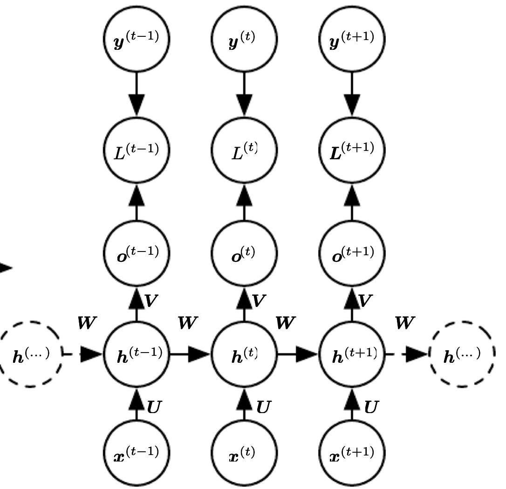
Forward propagation begins with a specification of the initial state . Then, for each time step from to , we apply the following update equations:
The non-linearity tanh can be replaced by Relu. Also and can be horizontally stack and , vertically stacked to do only one matrix multiplication to optimize computations. This also perfectly matches backprop gradient using the same way of stacking gradients and inputs. Here isan example of a recurrent network that maps an input sequence to an output sequence of the same length. The total loss for a given sequence of values paired with a sequence of values would then be just the sum of the losses over all the time steps. For example, if is the negative log-likelihood of , given , then
where is given by reading the entry for from the model’s output vector . In other words,
where is the index of token in the target . Note that length of vectors and are the same as the size of vocabulary.Computing the gradient of this loss function with respect to the parameters is an expensive operation. The runtime is and cannot be reduced by parallelization because the forward propagation graph is inherently sequential; each time step may only be computed after the previous one. States computed in the forward pass must be stored until they are reused during the backward pass, so the memory cost is also . The back-propagation algorithm applied to the unrolled graph with cost is called back-propagation through time (BPTT).
Computing the Gradient in RNN
Computing the gradient through a recurrent neural network is straightforward. One simply applies the generalized back-propagation algorithm. Gradients obtained by back propagation may then be used with any general-purpose gradient-based techniques to train an RNN. To gain some intuition for how the BPTT algorithm behaves, we provide an example of how to compute gradients by BPTT for the RNN equations above.The nodes of our computational graph include the parameters as well as the sequence of the nodes indexed by . For each node N we need to compute the gradient recursively, based on the gradient computed at nodes that follow it in the graph. We start the recursion with the nodes immediately preceding the final loss
Assuming that the loss is the negative log-likelihood of the true target given the input:
where is the index of token in the target .We work our way backwards, starting from the end of the sequence. At the final time step , , only has as a descendent, so its gradient is simple:
Because
for . For , has as descendents both and . Its gradient is thus given by
where indicates the diagonal matrix with the elements which is the Jacobian of the hyperbolic tangent associates with the hidden unit at time . Once the gradients on the internal nodes of the computational graph are obtained, it is easy obtain the gradients on the parameter nodes. Look at Deep Learning by Ian Goodfellow, Yoshua Bengio, Aaron Courville, Chapter 10, page 386, to see calucaltions for , , , and .
Different Types of RNNs
RNNs could be used in a variety of tasks ranging from machine translation to caption generation. There are many ways to implement an RNN model:
- Many-to-many: map a sequence of inputs to a sequence of outputs. Example: machine translation which have different input and output length. Might have a encoder-decoder design which is more flexible than RNN above
- Many-to-one: map a sequence of inputs to a single output. Example: sentiment classification for reviews: positive or negative
- One-to-many: Single input (a number or empty even) maps to multiple outputs. Example: music generation whcihch maps a number indicating a genre to a sequence of music notes. Or given an image, you can predict what the caption is going to be
- One to One: given some scores of a championship, you can predict the winner
Some examples of important design patterns for recurrent neural networks include the following:
-
Recurrent networks that produce an output at each time step and have recurrent connections between hidden units (hidden-to-hidden). The input and output size might be different. This is the simple RNN application. Part-of-speech tagging as sequence labeling is an application.
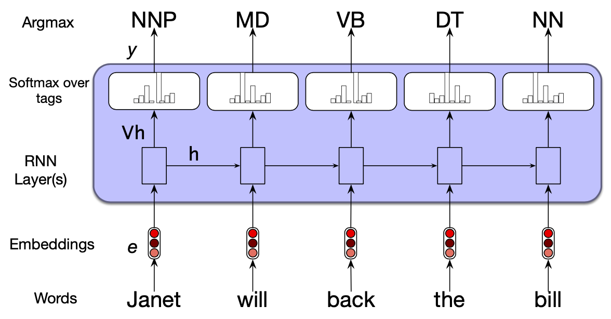
-
Recurrent networks that produce an output at each time step and have recurrent connections only from the output at one time step to the hidden units at the next time step. Machine translation is an application for this network.

The advantage of eliminating hidden-to-hidden recurrence is that, for any loss function based on comparing the prediction at time to the training target at time , all the time steps are decoupled. Thus training can thus be parallelized (because previous hidden state not needed!) and the gradient for each step can be computed in isolation.,which results in a faster training process. However, since this network lacks hidden-to-hidden recurrence, it requires that the output units capture all of the information about the past that the network will use to predict the future. Because the output units are explicitly trained to match the training set targets, they are unlikely to capture the necessary information about the past history of the input, unless the user knows how to describe the full state of the system an provides it as part of the training set targets. This training technique is called teacher forcing. At train time, we feed the correct output (instead of ) drawn from the train set as input to . When the model is deployed, the true output is generally not known. In this case, we approximate the correct output with the model’s output , and feed the output back into the model. Teacher forcing is a very common technique for training that emerges from the maximum likelihood criterion, in which during training the model receives the ground truth output as input at time . Teacher forcing is commonly used for training models with hidden-to-hidden connections, for example in language modeling. In these cases, target value at each time step becomes the input to the model at the next time step.

Source: Speech and Language Processing
-
Recurrent networks with recurrent connections between hidden units that read an entire sequence and then produce a single output (many-to-one). Sentence classification is an application for this network.
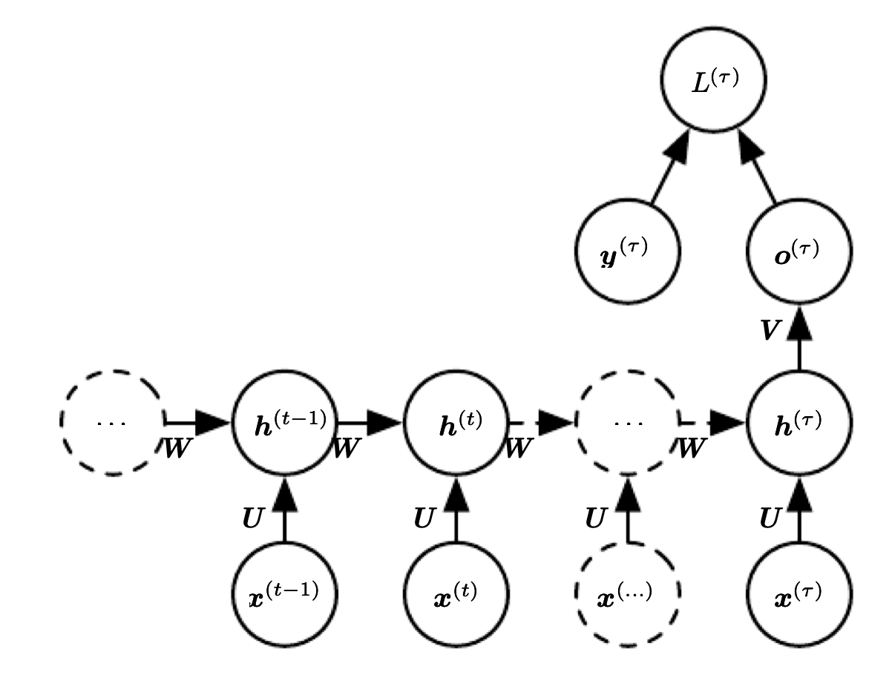
Language Models and Text Generation
Recall that we saw how to generate text from an -gram language model by adapting a sampling technique. We first randomly sample a word to begin a sequence based on its suitability as the start of a sequence. We then continue to sample words conditioned on our previous choices until we reach a pre-determined length, or an end of sequence token is generated. Today, this approach of using a language model to incrementally generate words by repeatedly sampling the next word conditioned on our previous choices is called autoregressive generation or causal LM generation. Technically an autoregressive model is a model that predicts a value at time based on a linear function of the previous values at times , , and so on. Although language models are not linear (since they have many layers of non-linearities), we loosely refer to this generation technique as autoregressive generation since the word generated at each time step is conditioned on the word selected by the network from the previous step. Text generation is of enormous practical importance, part of tasks like
- Question Answering,
- Machine Translation,
- Text Summarization,
- Grammar Correction,
- Story Generation,
- Conversational Dialogue
Any task where a system needs to produce text, conditioned on some other text. This use of a language model to generate text is one of the areas in which the impact of neural language models on NLP has been the largest. Text generation, along with image generation and code generation, constitute a new area of AI that is often called Generative AI.
How do you build a language model in English? To build a language model using a RNN, you will first need a training set comprising a large corpus of English text. The word corpus just means a large body or a very large number of English sentences. Let's say you have a sentence in your training set: "cats average 15 hours of sleep a day.". The first thing you would do is to tokenize the sentence: form a vocabulary, and then map each of these words to one-hot vectors or to indices in your vocabulary. Also model when sentences end commonly done by adding an extra token called <EOS> that stands for end of sentence. But <EOS> token can be appended to the end of every sentence in your training set if you want your model to explicitly capture when sentences end: "cats average 15 hours of sleep a day<EOS>". Having carried out the tokenization step, let's build an RNN to model the chance of these different sequences.
At time zero, set the initial state by convention. Also set the first input , zero vector. Model will make a Softmax prediction to try to figure out the probability of the first word . The Softmax generates the probability of any word in the dictionary to be the winning candidate for . In our example, this would be a 10,000 way Softmax output if you have 10,000 word vocabulary. Then the RNN steps forward to the next step and it tries to figure out what is the second word. But now we will also give it the correct first word as input (teacher forcing mentioned before). We'll tell the model that the first word was actually "cats", so that's . This is why is equal to . At the second step, the output is again predicted by Softmax. In this case, the right answer was "average" since the sentence starts with "cats average".
So the word "cats" is input. At the next stage, you go on to the next step of the RNN to predict what is the third word which is "15", we can now give it the first two words. This next input will be equal to "15" and the model will calculate
Until at the end, you end up feeding it which is equal to which is the word "day". Hopefully you'll predict that there's a high chance of <EOS> in the sentence token. This RNN learns to predict one word at a time going from left to right. To train this through a network, we're going to define the cost function. At a certain time , if the true word was and your network Softmax predicted some which is the Softmax loss function,
and then the overall loss is just the sum over all time steps of the losses associated with the individual predictions
In general, the RNN defines a directed graphical model over the variables. We parametrize the joint distribution of these observations using the chain rule for conditional probabilities:
where the right-hand side of the bar is empty for , of course. For example, given a new sentence, say , , , with just three words for simplicity, we have:
The first term on the right is the third Softmax, the second one is the second Softmax and the third one is the first Softmax. That's the basic structure of how you can train a language model using an RNN.
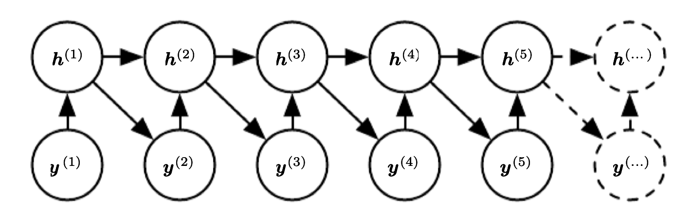
The edges in a graphical model indicate which variables depend directly on other variables. Many graphical models aim to achieve statistical and computational efficiency by omitting edges that do not correspond to strong interactions. For example, it is common to make the Markov assumption that the graphical model should only contain edges from to rather than containing edges from the entire past history. However, in some cases, we believe that all past inputs should have an influence on the next element of the sequence. RNNs are useful when we believe that the distribution over may depend on a value of from the distant past in a way that is not captured by the effect of on .
It is more interesting to consider the graphical model structure of RNNs that results from regarding the hidden units as random variables. Including the hidden units in the graphical model reveals that the RNN provides a very efficient parametrization of the joint distribution over the observations. The parameter sharing used in recurrent networks relies on the assumption that the conditional probability distribution over the variables at time given the variables at time is stationary, meaning that the relationship between the previous time step and the next time step does not depend on . In principle, it would be possible to use as an extra input at each time step and let the learner discover any time-dependence while sharing as much as it can between different time steps. This would already be much better than using a different conditional probability distribution for each , but the network would then have to extrapolate when faced with new values of .
To complete our view of an RNN as a graphical model, we must describe how to draw samples from the model. The main operation that we need to perform is simply to sample from the conditional distribution at each time step. After you train a sequence model, one of the ways you can informally get a sense of what is learned is to have a sample novel sequences. First sample what is the first word you want your model to generate. For that you input the usual . And now your first time stamp will have some Softmax probability over possible outputs. So you then randomly sample according to this Softmax distribution. You take this vector and use, for example, the numpy command np.random.choice to sample according to distribution defined by this vector probabilities, which lets you sample the first words. You then take the that you just sampled and pass that as the input to the next time step and so on. However, there is one additional complication. The RNN must have some mechanism for determining the length of the sequence. The RNN must have some mechanism for determining the length of the sequence. This can be achieved in various ways. If the end of sentence token is part of your vocabulary, you could keep sampling until you generate an <EOS> token and then the sampling process stops. Or alternatively, you can also just decide to sample 20 words or 100 words or something, and then keep going until you've reached that number of time steps. Another way to determine the sequence length is to add an extra output to the model that predicts the integer and then sample itself. The model can sample a value of steps worth of data. This approach requires adding an extra input to the recurrent update at each time step so that the recurrent update is aware of whether it is near the end of the generated sequence. This extra input can either consist of the value of or can consist of , the number of remaining time steps. Without this extra input, the RNN might generate sequences that end abruptly, such as a sentence that ends before it is complete. This approach is based on the decomposition
Sampling
As we mentioned, you can think of machine translation as building a conditional language model. In language modeling, the network could be based on a simple RNNs with . And this model allows you to estimate the probability of a sentence as described before. You could also use this model to generate novel sentences. The machine translation model has a encoder-decoder architecture because it needs to generate sequences of different length. The decoder network looks pretty much identical to the language model that we had before. So machine translation model is very similar to the language model, except that instead of always starting with the vector of all zeros, it starts with the output of the encoder (called conditioned on the encoder).
Now, if you want to apply this model to actually translate a sentence from French into English, the model gives you the distribution of English words in the vocabulary at each time step. So, is the French sentence, Jane visite l'Afrique en septembre. The model now tells you what is the probability of different English translations of that French input. You do not want to sample outputs at random at each time step, which is the greedy approach. If you sample words from this distribution, maybe one time you get a pretty good translation, Jane is visiting Africa in September. But, maybe another time you get a different translation, Jane is going to be visiting Africa in September., which sounds a little awkward but is not a terrible translation. What you exactly want is to find the English sentence, , that maximizes the conditional probability . So in developing a machine translation system, we need to come up with an algorithm that finds:
The answer may not be a greedy search which first finds and then finds and so on. Because it's quite possible that if you just pick the third word based on whatever maximized the probability of just the first two words, you end up choosing non optimal option. If you have just 10,000 words in a dictionary and if you're contemplating translations that are up to ten words long, then there are 10000 to the tenth possible sentences that are ten words long which is just a huge space of possible sentences, and it's impossible to rate them all, which is why it is more common to use an approximate search algorithm. Even though it's not guaranteed to find the value of s that maximizes the conditional probability, it usually does a good enough job such as the following one.
Beam Search
Beam Search is the most widely used algorithm to get the best output sequence. It's a heuristic (approximate) search algorithm which is an improvement to greedy search algorithm. While greedy search will pick only the one most likely words at each step and move on, Beam Search instead can consider multiple alternatives. It has a parameter called the beam width . To set means that Beam Search will consider not just one possibility but three at the time. Beam Search will keep in memory which were the top three choices from Softmax output of . For each of these three choices, Beam Search will consider what should be the second word. To evaluate the probability of second word, it will use the decoder portion to decide what comes after in. Beam Search will pick 3 of the pairs that maximize where is input from the decoder. And so on.
Recall that: where two terms on the right are model outputs.
Finally, with , Beam Search is the same as Greedy search - no effect. The larger gives better results but it will be more computationally expensive. In practice, you might see in the production setting . However, is uncommon. As mentioned before, we should calculate log probabilities instead of probabilities themselves to avoid underflow because is the product of many probabilities which might be very small numbers (near zero).
Error Analysis in Beam Search
Beam Search doesnt always output the most likely sentence. Suppose Beam Search translation of the sentence x = Jane visite l’Afrique en septembre is y=Jane visited Africa last September but the human answer is y*= Jane visits Africa in September which is right. So the result of the model is not satisfactory. There are two possible cases:
- : means model is performing fine but Beam Search is not doing its job. So we need to fix Beam Search part.
- : means model is not performing to its best and its nothing about Beam Search to be fixed. Maybe we need to improve the model.
It makes sense to collect more of these examples and investigate them before concluding which part is really at fault.
Modeling Sequences Conditioned on Context with RNNs
We already described how an RNN could correspond to a directed graphical model over a sequence of random variables with no inputs . Of course, our development of RNNs included a sequence of inputs , ,..., . In general, RNNs allow the extension of the graphical model view to represent not only a joint distribution over the variables but also a conditional distribution over given . As discussed in the context of feedforward networks, any model representing a variable can be reinterpreted as a model representing a conditional distribution with . We can extend such a model to represent a distribution by using the same as before, but making a function of . In the case of an RNN, this can be achieved in different ways. We review here the most common and obvious choices.
Previously, we have discussed RNNs that take a sequence of vectors for as input. Another option is to take only a single vector as input. When is a fixed-size vector, we can simply make it an extra input of the RNN that generates the sequence. Some common ways of providing an extra input to an RNN are:
- as an extra input at each time step, or
- as the initial state
- both
The interaction between the input and each hidden unit vector is parametrized by a newly introduced weight matrix that was absent from the model of only the sequence of values. The same product is added as additional input to the hidden units at every time step. We can think of the choice of as determining the value of that is effectively a new bias parameter used for each of the hidden units. The weights remain independent of the input. We can think of this model as taking the parameters of the non-conditional model and turning them into , where the bias parameters within are now a function of the input. Shown in the picture below, an RNN that maps a fixed-length vector into a distribution over sequences . This RNN is appropriate for tasks such as image captioning, where a single image is used as input to a model that then produces a sequence of words describing the image. Each element of the observed output sequence serves both as input (for the current time step) and, during training, as target (for the previous time step).
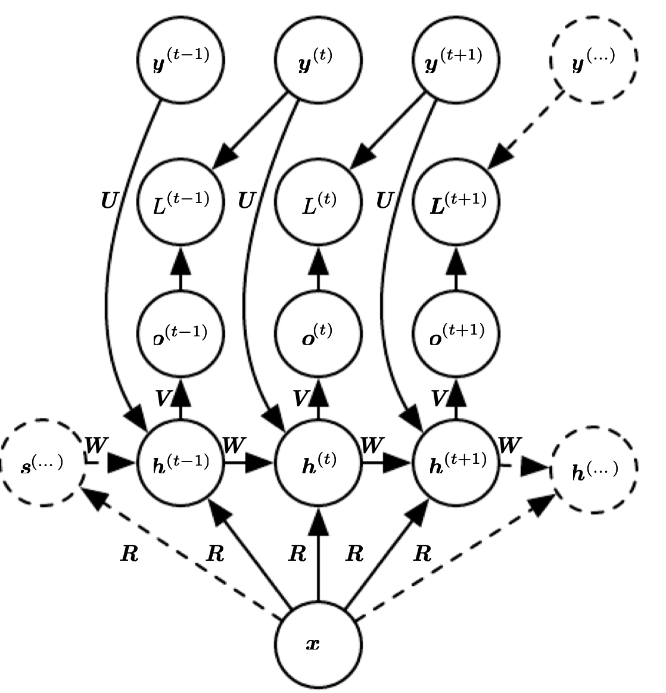
Rather than receiving only a single vector as input, the RNN may receive a sequence of vectors as input. The RNN described in equations (1) corresponds to a conditional distribution that makes a conditional independence assumption that this distribution factorizes as
To remove the conditional independence assumption, we can add connections from the output at time to the hidden unit at time , as shown in figure above. The model can then represent arbitrary probability distributions over the sequence. This kind of model representing a distribution over a sequence given another sequence still has one restriction, which is that the length of both sequences must be the same. We describe how to remove this restriction later.
Bidirectional RNNs
All of the recurrent networks we have considered up to now have a Causal Structure, meaning that the state at time only captures information from the past, , and the present input . Some of the models we have discussed also allow information from past values to affect the current state when the values are available. However, in many applications we want to output a prediction of which may depend on the whole input sequence. For example, in speech recognition, the correct interpretation of the current sound as a phoneme may depend on the next few phonemes because of co-articulation and potentially may even depend on the next few words because of the linguistic dependencies between nearby words: if there are two interpretations of the current word that are both acoustically plausible, we may have to look far into the future (and the past) to disambiguate them. This is also true of handwriting recognition and many other sequence-to-sequence learning tasks. Bidirectional recurrent neural networks (or bidirectional RNNs) were invented to address that need. They have been extremely successful in applications where that need arises, such as handwriting recognition, speech recognition and bioinformatics.
As the name suggests, bidirectional RNNs combine one RNN that moves forward through time beginning from the start of the sequence with another RNN that moves backward through time beginning from the end of the sequence. Figure below illustrates the typical bidirectional RNN, with standing for the state of the sub-RNN that moves forward through time and standing for the state of the sub-RNN that moves backward through time. This allows the output units to compute a representation that depends on both the past and the future but is most sensitive to the input values around time , without having to specify a fixed-size window around (as one would have to do with a feedforward network, a convolutional network, or a regular RNN with a fixed-size look-ahead buffer). Thus at each point , the output units can benefit from a relevant summary of the past in its input and from a relevant summary of the future in its input.

The Challenge of Long-Term Dependencies in RNNs
RNNs allow us to capture dependencies within a short range and they take up less RAM than other -gram models. However, there is mathematical challenges of learning long-term dependencies in recurrent networks. The basic problem is that gradients propagated over many stages tend to either vanish (most of the time) or explode (rarely, but with much damage to the optimization). The difficulty with long-term dependencies arises from the exponentially smaller weights given to long-term interactions (involving the multiplication of many Jacobians) compared to short-term ones. Recurrent networks involve the composition of the same function multiple times, once per time step. These compositions can result in extremely nonlinear behavior. In particular, the function composition employed by recurrent neural networks somewhat resembles matrix multiplication. We can think of the recurrence relation as a very simple recurrent neural network lacking a nonlinear activation function, and lacking inputs . This recurrence relation essentially describes the power method. It may be simplified to , and if admits an eigendecomposition of the form . With orthogonal , the recurrence may be simplified further to . The eigenvalues are raised to the power of causing eigenvalues with magnitude less than one to decay to zero and eigenvalues with magnitude greater than one to explode. Any component of that is not aligned with the largest eigenvector will eventually be discarded. Specifically, whenever the model is able to represent long term dependencies, the gradient of a long term interaction has exponentially smaller magnitude than the gradient of a short term interaction. It does not mean that it is impossible to learn, but that it might take a very long time to learn long-term dependencies, because the signal about these dependencies will tend to be hidden by the smallest fluctuations arising from short-term dependencies.
In practice, as we increase the span of the dependencies that need to be captured, gradient-based optimization becomes increasingly difficult, with the probability of successful training of a traditional RNN via SGD rapidly reaching 0 for sequences of only length 10 or 20. So it is more difficult for gradient signal to reach the beginning of the sequence and then more difficult to reduce the error at each stage.
The Long Short-Term Memory and Other Gated RNNs
One of first attempts to obtain paths on which the product of derivatives is close to one is to have units with linear self-connections and a weight near one on these connections. When we accumulate a running average of some value by applying the update the parameter is an example of a linear self-connection from to . When is near one, the running average remembers information about the past for a long time, and when α is near zero, information about the past is rapidly discarded. Hidden units with linear self-connections can behave similarly to such running averages. Such hidden units are called leaky units. The linear self-connection approach allows this effect to be adapted more smoothly and flexibly by adjusting the real-valued rather than by adjusting the integer-valued skip length. The most effective sequence models derived from RNNs and used in practical applications are called Gated RNNs. These include the long short-term memory and networks based on the gated recurrent unit. Like leaky units, gated RNNs are based on the idea of creating paths through time that have derivatives that neither vanish nor explode. Leaky units did this with connection weights that were either manually chosen constants or were parameters. Gated RNNs generalize this to connection weights that may change at each time step.
Leaky units allow the network to accumulate information (such as evidence for a particular feature or category) over a long duration. However, once that information has been used, it might be useful for the neural network to forget the old state. For example, if a sequence is made of sub-sequences and we want a leaky unit to accumulate evidence inside each sub-subsequence, we need a mechanism to forget the old state by setting it to zero. Instead of manually deciding when to clear the state, we want the neural network to learn to decide when to do it. This is what gated RNNs do.
Long Short-Term Memory (LSTM)
Introducing self-loops to produce paths where the gradient can flow for long durations is a core contribution of the initial long short-term memory (LSTM) model. A crucial addition has been to make the weight on this self-loop conditioned on the context, rather than fixed. By making the weight of this self-loop gated (controlled by another hidden unit), the time scale of integration can be changed dynamically. LSTM recurrent networks have “LSTM cells” that have an internal recurrence (a self-loop), in addition to the outer recurrence of the RNN.

The most important component is the state unit that has a linear self-loop similar to the leaky units. However, here, the self-loop weight is controlled by a forget gate unit , that sets this weight to a value between 0 and 1 via a sigmoid unit:
where is the current input vector and is the current hidden layer vector, containing the outputs of all the LSTM cells, and , , are respectively biases, input weights and recurrent weights for the forget gates. The LSTM cell internal state is thus updated as follows, but with a conditional self-loop weight :
where , and respectively denote the biases, input weights and recurrent weights into the LSTM cell. Sigmoid can be replaced by tanh(). The external input gate unit is computed similarly to the forget gate (with a sigmoid unit to obtain a gating value between 0 and 1), but with its own parameters:
The output of the LSTM cell can also be shut off, via the output gate which also uses a sigmoid unit for gating:
which has parameters , , for its biases, input weights and recurrent weights, respectively. Among the variants, one can choose to use the cell states as an extra input (with its weight) into the three gates of the -th unit. This would require three additional parameters.
The LSTM allows your model to remember and forget certain inputs. It consists of a cell state and a hidden state with three gates. The gates allow the gradients to flow unchanged. You can think of the three gates as follows:
- Input gate: tells you how much of the current input which is exactly the same as what of the vanilla RNN loops into RNN cells every time, that is -- with
sigmoidortanhactivation functions -- to let in at any time point . - Forget gate: tells you how much information about the previous state unit to forget at any time point .
- Output gate: tells you how much of the current state unit goes into next hidden state for the pass at the next time point .
LSTM networks have been shown to learn long-term dependencies more easily than the simple recurrent architectures, first on artificial data sets designed for testing the ability to learn long-term dependencies, then on challenging sequence processing tasks where state-of-the-art performance was obtained.
Gated Recurrent Units (GRU)
Which pieces of the LSTM architecture are actually necessary? What other successful architectures could be designed that allow the network to dynamically control the time scale and forgetting behavior of different units? Gated Recurrent Units (GRUs) simplified LSTMs. The main difference with the LSTM is that a single gating unit simultaneously controls the forgetting factor and the decision to update the state unit. Gated recurrent units are very similar to vanilla RNNs, except that they have a "relevance" and "update" gate that allow the model to update and get relevant information.
where stands for update gate and for relevance gate. Their value is defined as usual:
The relevance and updates gates can individually “ignore” parts of the state vector. The update gates act like conditional leaky integrators that can linearly gate any dimension, thus choosing to copy it (at one extreme of the sigmoid) or completely ignore it (at the other extreme) by replacing it by the new “target state” value (towards which the leaky integrator wants to converge). The relevance gates control which parts of the state get used to compute the next target state, introducing an additional nonlinear effect in the relationship between past state and future state. The first gate allows you to decide how much you want to update the weights by. The second gate , helps you find a relevance score. You can compute the new by using the relevance gate. Finally you can compute , using the update gate. GRUs “decide” how to update the hidden state. GRUs help preserve important information. However, several investigations over architectural variations of the LSTM and GRU found no variant that would clearly beat both of these across a wide range of tasks.
Clipping Gradients
Strongly nonlinear functions such as those computed by a recurrent net over many time steps tend to have derivatives that can be either very large or very small in magnitude. This is illustrated in the following picture in which we see that the objective function (as a function of the parameters) has a “landscape” in which one finds “cliffs”: wide and rather flat regions separated by tiny regions where the objective function changes quickly, forming a kind of cliff. Gradient descent without gradient clipping overshoots the bottom of this small ravine, then receives a very large gradient from the cliff face. The large gradient catastrophically propels the parameters outside the axes of the plot. Gradient descent with gradient clipping has a more moderate reaction to the cliff. While it does ascend the cliff face, the step size is restricted so that it cannot be propelled away from steep region near the solution.
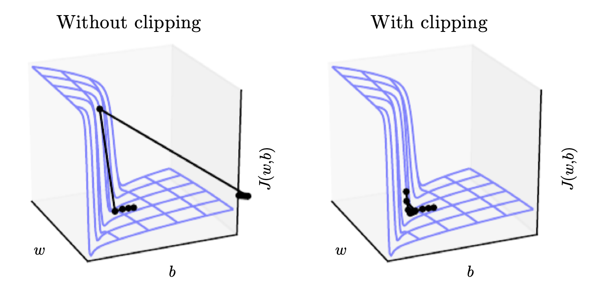
One option is to clip the parameter gradient from a mini batch element-wise just before the parameter update. Another is to clip the norm of the gradient just before the parameter update: if then where is the norm threshold and is used to update parameters. Because the gradient of all the parameters (including different groups of parameters, such as weights and biases) is renormalized jointly with a single scaling factor, the latter method has the advantage that it guarantees that each step is still in the gradient direction, but experiments suggest that both forms work similarly. Traditional stochastic gradient descent uses an unbiased estimate of the gradient, while gradient descent with norm clipping introduces a heuristic bias that we know empirically to be useful. With element-wise clipping, the direction of the update is not aligned with the true gradient or the mini batch gradient, but it is still a descent direction.
Encoder-Decoder Model with RNNs
We have seen how an RNN can map an input sequence to a fixed-size vector. We have seen how an RNN can map an input sequence to an output sequence of the same length. Recall that in the sequence labeling task, we have two sequences, but they are the same length (for example in part-of-speech tagging each token gets an associated tag), each input is associated with a specific output, and the labeling for that output takes mostly local information. Thus deciding whether a word is a verb or a noun, we look mostly at the word and the neighboring words. Here we discuss how an RNN model can be trained to map an input sequence to an output sequence which is not necessarily of the same length. Encoder-decoder networks, sometimes called sequence-to-sequence networks, are models capable of generating contextually appropriate, arbitrary length, output sequences given an input sequence.
Encoder-decoder networks have been applied to a very wide range of applications including summarization, question answering, speech recognition and dialogue, but they are particularly popular for machine translation. The key idea underlying these networks is the use of an encoder network that takes an input sequence and creates a contextualized representation of it, often called the context. We want to produce a representation of this context that summarize the input sequence . This representation is then passed to a decoder which generates a task- specific output sequence. The idea of encoder-decoder or seq-to-seq architecture is very simple:
-
An encoder or reader or input RNN that processes the input sequence and emits a sequence of contextualized representations s (could be hidden states). LSTMs, CNNs, and transformers can all be employed as encoders.
-
A context vector, , which is a function of s, and conveys the essence of the input to the decoder.
-
A decoder or writer or output RNN is conditioned on that fixed-length context vector to generate the output sequence . The innovation of this kind of architecture over those presented in earlier sections of this chapter is that the lengths of input and of the output can vary from each other, while previous architectures constrained .
Example of an encoder-decoder or seq-to-seq RNN architecture, for learning to generate an output sequence given an input sequence is shown below.

In a seq-to-seq architecture, the two RNNs are trained jointly to maximize the average of log likelihood
over all the pairs (, ) sequences in the training set. The last state of the encoder RNN is typically used as a representation of the input sequence that is provided as input to the decoder RNN. If the context is a vector, then the decoder RNN is simply a vector-to-sequence RNN as described before. As we have seen, there are at least two ways for a vector-to-sequence RNN to receive input. The input can be provided as the initial state of the RNN, or the input can be connected to the hidden units at each time step. These two ways can also be combined. There is no constraint that the encoder must have the same size of hidden layer as the decoder. The following figure shows translating a sentence at inference time for the basic RNN-based encoder-decoder architecture. The final hidden state of the encoder RNN, , serves as the context for the decoder RNN, and is also made available to each decoder hidden state.
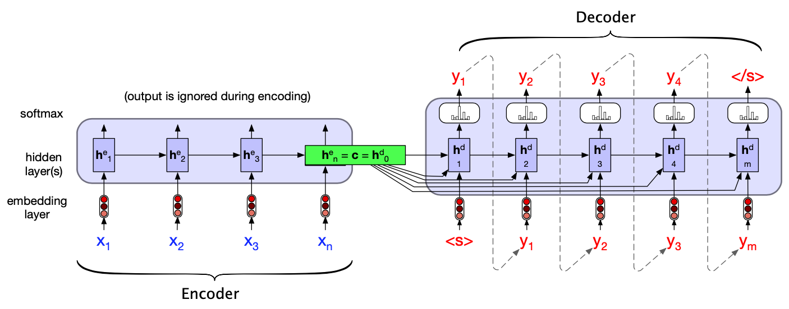
Source: Speech and Language Processing
One clear limitation of this architecture is when the context encoder RNN has a dimension that is too small to properly summarize a long sequence. Because of this flaw, only a fixed amount of information can be passed to decoder no matter how information exists in the encoder. So the power of seq-to-seq which allows variable sizes of input and output becomes less effective with this bottleneck. The result is lower model performance as the sequence size increases. In other words, one fixed size hidden state from encoder is that it struggles to compress longer sequences and it ends up throttling itself and punishing the decoder. This phenomenon known as information bottleneck was observed by Bahdanau et al. 2015 in the context of machine translation. They proposed to make a variable-length sequence rather than a fixed-size vector. Additionally, they introduced an attention mechanism that learns to associate elements of the sequence to elements of the output sequence.
Seq-to-Seq Models with Attention Mechanisms
Recurrent models typically take in a sequence in the order to output a sequence. These models generate a sequence of hidden states , as a function of the previous hidden state and the input at position . The sequential nature of models them (RNNs, LSTMs, GRUs) make training slow and increases information loss for longer sequence lengths. Vanilla RNN Encoder-Decoder architecture passes only the last hidden state from the encoder to the decoder which leads to information loss. Information found early in the sequence tends to be “forgotten” after the entire sequence is processed. The addition of bi-directional layers remedies this for shorter sequences but the problem still persists for long input sequences. The development of attention enables the decoder to attend to the whole sequence and thus use the context of the entire sequence during the decoding step. In 2014, Bahdanau, Cho, and Bengio (2014) proposed attention to fix the information loss problem that the early encoder-decoder architecture faced.
Decoders without attention are trained to predict . The fixed length context vector is computed with are the the hidden states of the encoder for the input sequence and is a non-linear function. Choosing as a non-linear transformation remains a popular choice for architectures without attention. It is also commonly used for the initialization of the decoder hidden states. The hidden state has a strong focus on the -th word in the input sequence and its surroundings. If a bi-directional encoder is used, each is computed by a concatenation of the forward and backward hidden states: for .
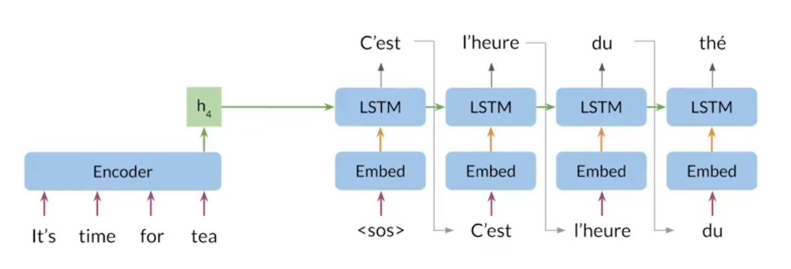
Attention was originally developed for machine translation, but it's since being used in many other domains with great success. Here's a comparison of the performance between different models from the Bahdanau paper using the BLEU ( (Bilingual Evaluation Understudy)) score as a performance metric. The dashed lines, they showed the scores for bidirectional seq-to-seq model as the length of the input sentence is increased. The 30 and 50 denotes the maximum sequence length used to train the models.

The seq-to-seq models perform well when sentences have about 10-20 words, but they fall off beyond that. This is expected because seq-to-seq models must store the meaning of the entire input sequence, any single vector. The models developed in the paper, RNN search 13-15, use bidirectional encoders and decoders, but with attention. First, these models perform better than the traditional seq-to-seq models across all sentence length. The RNN search 50 model has basically no fall off in performance as sentence lengths increase. This is because the models are able to focus on specific inputs to predict words in the output translation, instead of having to memorize the entire input sentence. Attention replaces the single context vector that a decoder uses by a sequence of context vectors s which are weighted sum of the encoder hidden states. These weights are indications of how important some states are for the next decoder outputs based of the size of them. This way, the context vector holds more information about the most important words and less information about other words.
But how are these weights calculated to determine which input words are important at each step? The decoders previous hidden states, denoted as , contains information about the previous words in the output translation. This means, you can compare the decoder states with each encoder state to determine the most important inputs. Intuitively, the decoder can set the weights such that if it focuses on only the most important input words for the next prediction, it decides which parts of the input sequence to pay attention to. The goal of the attention layer is to return a context vector that contains the relevant information from the encoder states. The first step is to calculate the alignments, , which is a score of how well the inputs around match the expected output around . The higher the match, the higher of this score is expected and as a resuult, the next word in the decoder's output will be more strongly influenced by this word than by other words in the sequence. The simplest such score, called dot-product attention, implements relevance or alignment as similarity: measuring how similar the decoder hidden state is to an encoder hidden state , by computing the dot product between them:
When this scalar is normalized, it indicates how aligned the two vectors are. The bigger the number, the closer (or more similar) are the vectors. The vector of these scores across all the encoder hidden states gives us the relevance of each encoder state to the current step of the decoder.

It’s also possible to create more sophisticated scoring functions for attention models. Instead of simple dot product attention, we can get a more powerful function that computes the relevance of each encoder hidden state to the decoder hidden state using a feedforward neural network with the encoder and decoder hidden states as inputs, where the weights for the feedforward network are learned along with the rest of the seq-to-seq model. The scores are then normalized using the Softmax function into weights called alignment weights which range from zero to one. This means the weights can be thought of as a probability distribution which sum to one. Finally, each encoder states is multiplied by its respective weights and sum together into one context vector :
with being the hidden state of the decoder at time-step . Since the weights are the probability distribution, this is equivalent to calculating an expected value across word alignments. The normalized alignment score models how well input and output match and assigns the weight to . At time-point , the decoder hidden state is computed as is the function resulting from the use of a RNN, LSTM or GRU cell. Bahdanau, Cho, and Bengio (2014) parametrize their alignment score with a single-hidden-layer feed-forward neural network which is jointly trained with the other parts of the architecture. The score function used by Bahdanau et al. is given as
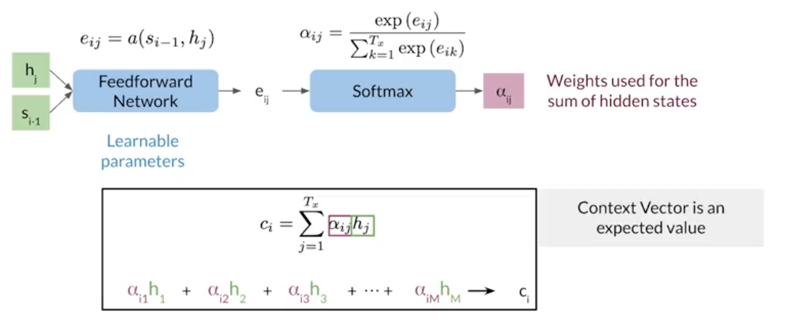
The attention model proposed by Bahdanau et al. is also called a global attention model as it attends to every input in the sequence. Another name this attention model is soft attention because the attention is spread thinly/weakly/softly over the input and does not have an inherent hard focus on specific inputs. A nice by-product of attention mechanisms is the matrix of alignment scores which can be visualised to show the correlation between source and target words:
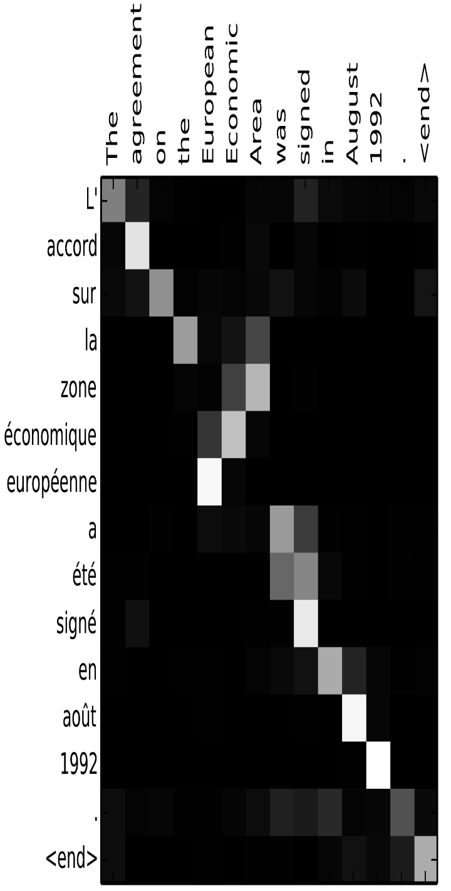
Alignment Matrix visualised for a French to English translation. White squares indicate high aligment weights between input and output (Source:Bahdanau, Cho, and Bengio 2014). Since attention looks at the entire input and target sentences at once and calculates alignments based on word pairs, weights are assigned appropriately regardless of word order.
- Self-attention is permutation invariant
- We expect values along the diaogonal of the attention matrix to be the highest.
See this notebook for a demonstration of training RNN based model with attention: A mre modern implementation of a seq2seq model (for Spanish-to-English translation) roughly based on Effective Approaches to Attention-based Neural Machine Translation (Luong et al., 2015) using TensorFlow.
Transformers
As we saw, the concept of “attention” in deep learning has its roots in the effort to improve Recurrent Neural Networks (RNNs) for handling longer sequences. Remember that with RNNs, it is inevitable to take sequential steps to encode your inputs from the beginning and to make computations at every step until you reach the end. Then you decode the information following a similar sequential procedure in the decoder. The more words you have in the input sentence, the more time and memory it will take to process that sentence. On the other hand, the information tends to get lost within the network and vanishing gradients problems arise related to the length of your input sequences. LSTMs and GRUs help a little with these problems, but even those architectures stop working well when they try to process very long sequences due to the information bottleneck.
Even with attention mechanism added to seq-to-seq RNNs, they still suffer from another major drawback. The sequential nature of RNNs preclude parallelization within training examples, prevented them from being accelerated on GPUs. This becomes critical at longer sequence lengths as memory constraints limit batching across examples. RNNs process one token at a time in a sequence. To compute the hidden state at time step , the model needs the hidden state from time step . That means:
- You must process → → → ... in order, since each depends on the previous.
- You cannot compute , , or until is done.
Because of this dependency chain, you can’t process the tokens in parallel for a single training sequence. In contrast, Transformers compute attention over all positions simultaneously, since they don’t depend on previous states in the same way. The Transformer is a purely attention based model that was developed at Google to remedy the problems with RNNs. Prior to Transformers, RNNs were the state-of-the-art model for machine translation, language modeling and other NLP tasks.
In 2017, the original (100M-sized) encoder-decoder transformer model was proposed in the "Attention is all you need" paper. At the time, the focus of the research was on improving seq2seq for machine translation, by removing its recurrence to process all tokens in parallel, but preserving its dot-product attention mechanism to keep its text processing performance. This led to the introduction of a multi-head attention model that was easier to parallelize due to the use of independent heads and the lack of recurrence. Its parallelizability was an important factor to its widespread use in large neural networks. The transformer architecture introduced a standalone self-attention mechanism, eliminating the need for RNNs altogether. No RNN is needed. The self-attention mechanism enables the model to weigh the importance of different elements in an input sequence and dynamically adjust their influence on the output. This is especially important for language processing tasks, where the meaning of a word can change based on its context within a sentence or document. Today, Transformer is the standard architecture for building large language models. RNNs were slow to train on long sequences. They could not fully exploit GPUs/TPUs, which are designed for parallel computation. Transformers replaced RNNs because they scale better thanks to this parallelizable architecture. Transformer-based large language models have completely changed the field of speech and language processing. Indeed, every coming topic from now on will make use of them. We’ll focus for now on left-to-right (sometimes called causal or autoregressive) language modeling, in which we are given a sequence of input tokens and predict output tokens one by one by conditioning on the prior context.
A transformer has three major components. At the center are columns of stacked transformer blocks. Each block is a multilayer network comprised of a multi-head attention layer, feedforward network and layer normalization steps that maps an input vector in column (corresponding to input token ) to an output vector . The set of blocks maps an entire context window of input vectors to a window of output vectors of the same length. A column might contain from 12 to 96 or more stacked transformer blocks. The column of blocks is preceded by the input encoding component, which processes an input token into a contextual vector representation, using an embedding matrix and a mechanism for encoding token position. Each column is followed by a language modeling head, which takes the embedding output by the final transformer block, passes it through an embedding matrix and a Softmax over the vocabulary to generate a single token for that column. Therefore all transformers have the same primary components:
- Tokenizers, which convert text into tokens.
- Embedding layer, which converts tokens and positions of the tokens into vector representations.
- Transformer layers, which carry out repeated transformations on the vector representations, extracting more and more linguistic information. These consist of alternating attention and feedforward layers. There are two major types of transformer layers: encoder layers and decoder layers, with further variants.
- Un-embedding layer, which converts the final vector representations back to a probability distribution over the tokens.
Transformer: Encoder-Decoder Architecture
While the original Transformer architecture doesn’t use recurrent or convolutional networks, it retains the popular encoder-decoder architecture like earlier seq2seq models. The encoder consists of encoding layers that process all the input tokens together one layer after another, while the decoder consists of decoding layers that iteratively process the encoder's output and the decoder's output tokens so far.
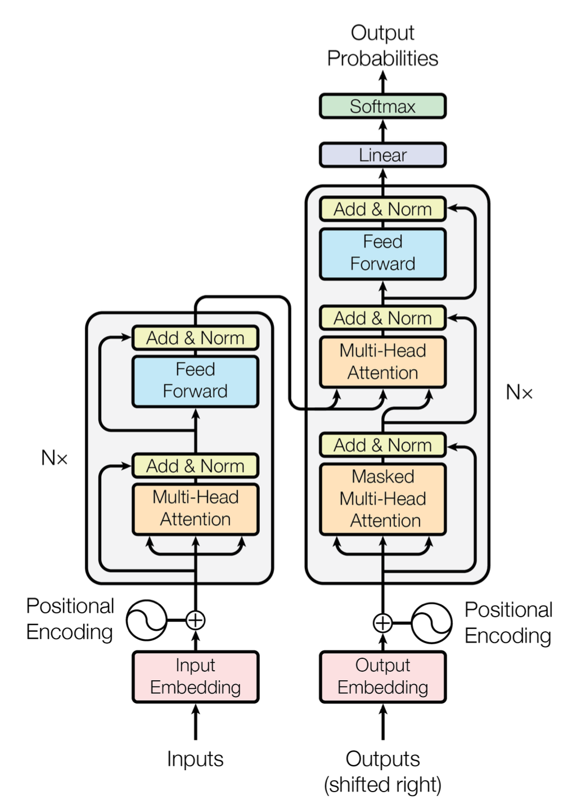
The purpose of each encoder layer is to create contextual representations of the tokens, where each representation corresponds to a token that "mixes" information from other input tokens via self-attention mechanism. The encoder is composed of a stack of identical layers. Each of these layers has two sub-layers:
- A multi-head self-attention mechanism
- A position-wise fully connected feed-forward network
Transformers can build contextual representations of word meaning, contextual embeddings, by integrating the meaning of these helpful contextual words. In a transformer, layer by layer, we build up richer and richer contextualized representations of the meanings of input tokens. At each layer, we compute the representation of a token by combining information about from the previous layer with information about the neighboring tokens to produce a contextualized representation for each word at each position. Attention is the mechanism in the transformer that weighs and combines the representations from appropriate other tokens in the context from layer to build the representation for tokens in layer . The sub-layers have a residual connection around the main components which is followed by a normalization layer. The output of each sub-layer is where is the output of the function of the sublayer itself.
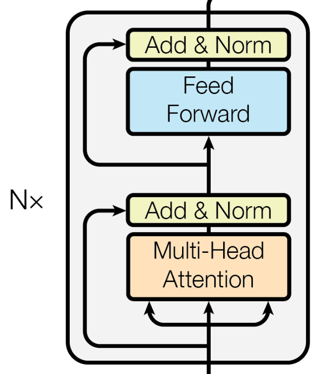
The decoder is composed of a stack of identical layers. Each decoder layer contains two attention sublayers:
- cross-attention for incorporating the output of encoder (contextualized input token representations), and
- masked self-attention for "mixing" information among the input tokens to the decoder
The cross attention sub-layer uses the encoder output as two of its three input values, which will be described in the next part of the chapter, for the multi-head attention. This sub-layer is in its function very close to the before seen attention mechanisms between encoders and decoders. It uses, same as the encoder, residual connections around each of the sub-layers.

The decoder also uses a modified, masked self-attention sub-layer to prevent positions from attending to subsequent positions. This, coupled with the fact that the output embeddings are shifted by one position to the right ensures that the predictions for position only depend on previous known outputs. The output of this layer become the third input value for the multi-head attention. This attention is called cross attention because it calculates attention between input (after encoding) and output after masking. All sub-layers and the embedding layer before the encoder/decoder produce outputs of dimension 512 to allow these residual connections to work. The position-wise feed-forward network used in the sub-layer is applied to each position separately and identically. This network consists of two linear transformations with a ReLU activation function in between.
Self-attention: Queries, Keys, Values
The following figure shows information flow in causal self-attention. When processing each input , the model attends to all the inputs up to, and including . The arrows shows the inputs to each attention at every position .
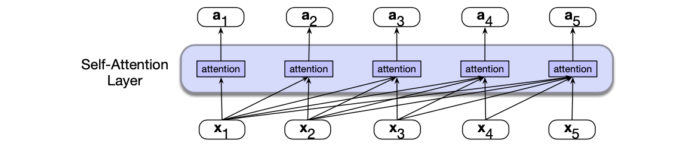
The attention head allows us to distinctly represent three different roles that each input embedding plays during the course of the attention process:
- As the current element being compared to the preceding inputs. We’ll refer to this role as a query.
- In its role as a preceding input that is being compared to the current element to determine a similarity weight. We’ll refer to this role as a key.
- And finally, as a value of a preceding element that gets weighted and summed up to compute the output for the current element.
To capture these three different roles, transformers introduce weight matrices , , and . These weights will project each input vector into a representation of its role as a key, query, or value:
- Query sequence:
- Key sequence:
- Query sequence:
for every embedding input . The index refers to the token index position in the input sequence. Vectors and are of dimension . The projection matrices and have dimension , while is of dimension . The embedding dimension represents the size of each word vector in the embedding space, i.e. embedding dimension. Given these projections, when we are computing the similarity of the current element with some prior element , we’ll use the dot product between the current element’s query vector and the preceding element’s key vector for . Furthermore, the result of a dot product can be an arbitrarily large (positive or negative) value, and exponentiating large values can lead to numerical issues and loss of gradients during training. To avoid this, we scale the dot product by a factor related to the size of the embeddings, via dividing by the square root of the dimensionality of the query and key vectors . The ensuing Softmax calculation resulting in remains the same, but the output calculation for head is now based on a weighted sum over the value vectors . This will lead to an attenion type called scale dot-product attention.
Here’s a final set of equations for computing attention for a single causal attention output vector from a single input vector . This version of attention computes by summing the values of the prior elements, each weighted by the similarity of its key to the query from the current element:
The figure below shows calculating the value of , the third element of a sequence using causal (left-to-right) self-attention.

At the end, the attention head is multiplied by the matrix . This is necessary to reshape the output of the head. The input to the attention and the output from the attention both have the same dimensionality . We often call the model dimensionality. Later we see that the output of each transformer block, as well as the intermediate vectors inside the transformer block also have the same dimensionality . Having everything be the same dimensionality makes the transformer very modular.
Multi-head Attention
So far we have described a single attention head. But actually, transformers use multiple attention heads. The intuition is that each head might be attending to the context for different purposes: each head might be specialized to represent different linguistic relationships between context elements and the current token, or to look for particular kinds of patterns in the context. So in multi-head attention, we have separate attention heads that reside in parallel layers at the same depth in a model, each with its own set of parameters that allows the head to model different aspects of the relationships among inputs. Thus each head in a self-attention layer has its own set of key, query and value matrices: . These are used to project the inputs into separate key, value, and query embeddings for each head. When using multiple heads the model dimension is still used for the input and output, the key and query embeddings have dimensionality , and the value embeddings are of dimensionality (again, in the original transformer paper , and ). Thus for each head, we have weight layers of shape , of shape , and of shape . Each attention head calulates its output the same way as described before: .
Multihead attention concatnates them to produce a single output with domensionality . Then we use yet another linear projection of dimension to reshape it, resulting in the multi-head attention vector with the correct output shape at each input .
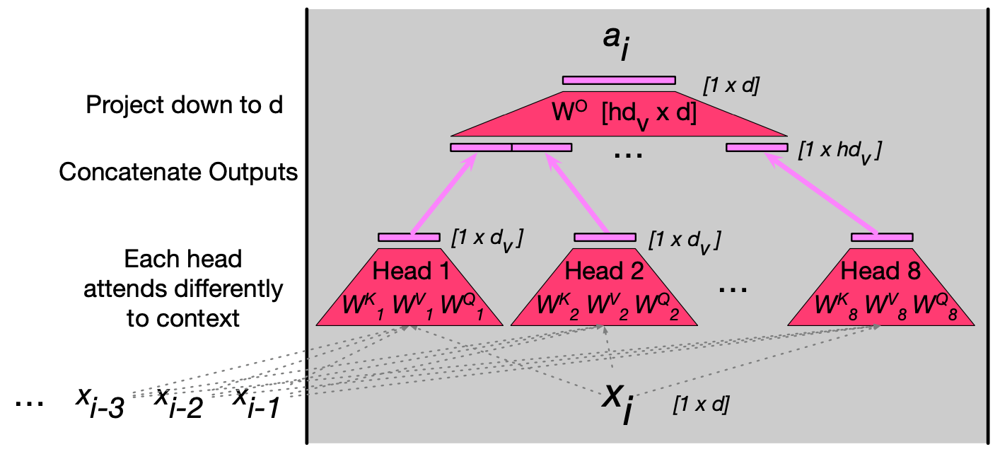
Transformer Blocks
The attention calculation lies at the core of what’s called a transformer block, which, in addition to the attention layer, includes three other kinds of layers:
- A feedforward layer
- Residual connections
- Normalizing layers (colloquially called layer norm).
In the Transformer architecture, the Transformer blocks are stacked sequentially, layer by layer. Each block (also called a layer) takes the output of the previous layer as its input. That means:
- Each layer applies self-attention and a feedforward network to its input.
- Residual connections and LayerNorm wrap the sub-layers.
- The whole stack is deep, e.g., 12 layers in GPT-2, 96 in GPT-3.
As important clarification, while the tokens in a sequence can be processed in parallel within each layer (because of self-attention), the layers themselves must be applied in sequence, since each one depends on the output of the one before it. So:
- Parallelism across tokens
- Sequential execution across layers
Input Embeddings
↓
[Transformer Block 1]
↓
[Transformer Block 2]
↓
[Transformer Block 3]
↓
...
↓
[Transformer Block N]
↓
Final Output
The input at the bottom of the stream is an embedding for a token, which has dimensionality . This initial embedding gets passed up (by residual connections), and is progressively added to by the other components of the transformer: the attention layer and a feedforward layer. Before the attention and feedforward layer is a computation called the layer norm. Thus the initial vector is passed through a layer norm and attention layer, and the result is added back into the stream, the original input vector . And then this summed vector is again passed through another layer norm and a feedforward layer, and the output of those is added back into the residual, and we’ll use to refer to the resulting output of the transformer block for token . Residual connections were first successfully used in the CNNs architecture ResNet in form of skip connections which allowed training much deeper nets of stacked layers (strengthened backprop signals).
The feedforward layer is a fully-connected 2-layer network, i.e., one hidden layer, two weight matrices. The weights are the same for each token position , but are different from layer to layer. It is common to make the dimensionality of the hidden layer of the feedforward network be larger than the model dimensionality . For example, in the original transformer model, and .
- is a token's embedding (after self-attention)
- expands the hidden size (e.g., 768 → 3072)
- projects it back (3072 → 768)
- This is done independently for each token
That’s why it’s called position-wise — it applies the same MLP to each token’s vector, independently of others. The FFN injects non-linearity with ReLU or GELU, allowing deeper function approximation. After attention mixes info across tokens, FFN lets each token transform its own representation independently. While attention mixes across time/position, FFN mixes across embedding dimensions (like a 1x1 conv).
At two stages in the transformer block, we normalize the vector. This process, called layer norm (short for layer normalization), is one of many forms of normalization that can be used to improve training performance in deep neural networks by keeping the values of a hidden layer in a range that facilitates gradient-based training. Layer norm is a variation of the -score from statistics, applied to a single vector in a hidden layer. That is, the term layer norm is a bit confusing; layer norm is not applied to an entire transformer layer or over all tokens, but just to the embedding vector of a single token. Thus the input to layer norm is a single vector of dimensionality and the output is that vector normalized, again of dimensionality . The first step in layer normalization is to calculate the mean, , and standard deviation, , over the elements of the vector to be normalized. Given an embedding vector of dimensionality , these values are calculated as follows:
Given these values, the vector components are normalized by subtracting the mean from each and dividing by the standard deviation. The result of this computation is a new vector with zero mean and a standard deviation of one:
Finally, in the standard implementation of layer normalization, two learnable parameters, and , representing gain and offset values, are introduced:
LayerNorm is position-agnostic and batch-agnostic, making it ideal for variable-length sequences for training transformers.

Source: Wikipedia - This architecture uses the pre-LN convention, which is different from the post-LN convention used in the original 2017 Transformer. A 2020 paper found that using layer normalization before (instead of after) multihead attention and feedforward layers stabilizes training, not requiring learning rate warmup
The function computed by a transformer block can be expressed by breaking it down with one equation for each component computation, using (of shape ) to stand for transformer and superscripts to demonstrate each computation inside the block:
Notice that the only component that takes as input information from other tokens (other residual streams) is multi-head attention, which looks at all the neighboring tokens in the context. The output from attention, however, is then added into this token’s embedding stream. In fact, Elhage et al. (2021) show that we can view attention heads as literally moving information from the residual stream of a neighboring token into the current stream. The high-dimensional embedding space at each position thus contains information about the current token and about neighboring tokens, albeit in different subspaces of the vector space. Crucially, the input and output dimensions of transformer blocks are matched so they can be stacked. Each token vector at the input to the block has dimensionality , and the output also has dimensionality . Transformers for large language models stack many of these blocks, from 12 layers (used for the T5 or GPT-3-small language models) to 96 layers (used for GPT-3 large), to even more for more recent models.
Matrix Form of Computation
So far the description of multi-head attention and the rest of the transformer block has been from the perspective of computing a single output at a single time step in a single residual stream. But as we pointed out earlier, the attention computation performed for each token to compute is independent of the computation for each other token, and that’s also true for all the computation in the transformer block computing from the input . That means we can easily parallelize the entire computation by taking advantage of efficient matrix multiplication routines. Data enters the transformer block in the form of an input matrix of dimension whose rows are the embeddings for the N tokens of the input sequence. Each row of is the embedding of one token of the input. Transformers for large language models commonly have an input length from 1K to 32K; much longer contexts of 128K or even up to millions of tokens can also be achieved with architectural changes like special long-context mechanisms.
For every head , we multiply by the key, query, and value matrices of shape , of shape , and of shape , to produce matrices of shape , of shape , and of shape , containing all the key, query, and value vectors:
Given these matrices we can compute all the requisite query-key comparisons simultaneously by multiplying and in a single matrix multiplication. The product is of shape . Then we can very efficiently scale these scores, take the softmax, and then multiply the result by resulting in a matrix of shape : a vector embedding representation for each token in the input. We’ve reduced the entire self-attention step for an entire sequence of tokens for head to
The mask function is used for causal attention only. It just adds a mask matrix in which , (i.e. for the upper-triangular portion) and otherwise. The elements in the upper-triangular portion of the matrix are set to , which the softmax will turn to zero, thus eliminating any knowledge of words that follow in the sequence. For self-attention, so mask has no effect. Finally, we use a final linear projection of shape (for heads), that reshape its input to the original dimension of the input data . Multiplying the concatenated matrix output by of shape yields the attention output of shape :
We can also break down the computation performed in a transformer layer, showing one equation for each component computation. We’ll use of shape to stand for transformer and superscripts to demarcate each computation inside the block, and again use X to mean the input to the block from the previous layer or the initial embedding:
Input Embeddings
Given a sequence of tokens ( is the context length in tokens), the matrix of shape has an embedding for each word in the context. The transformer does this by separately computing two embeddings: an input token embedding, and an input positional embedding. A token embedding is a vector of dimension that will be our initial representation for the input token. As we pass vectors up through the transformer layers in the residual stream, this embedding representation will change and grow, incorporating context and playing a different role depending on the kind of language model we are building. The set of initial embeddings are stored in the embedding matrix , which has a row for each of the tokens in the vocabulary. Thus each word is a row vector of dimensions, and has shape . Given an input token string like Thanks for all the, we first convert the tokens into vocabulary indices (these were created when we first tokenized the input using BPE or SentencePiece). So the representation of thanks for all the might be . Next we use indexing to select the corresponding rows from , (row 5, row 4000, row 10532, row 2224). Another way to think about selecting token embeddings from the embedding matrix is to represent tokens as one-hot vectors of shape , i.e., with one dimension for each word in the vocabulary. Recall that in a one-hot vector all the elements are 0 except one, the element whose dimension is the word’s index in the vocabulary, which has value 1. Multiplying by a one-hot vector simply selects out the relevant row vector for word , resulting in the embedding for word . These token embeddings are not position-dependent. Transformers also incorporate a positional encoding stage which encodes each input position in the sequence. This is necessary because transformers do not use recurrent or convolutional neural networks which have order naturally built-in or respect the order. However, the word order is relevant for any word language.
A positional encoding is a fixed-size vector representation of the relative positions of tokens within a sequence: it provides the transformer model with information about where the words are in the input sequence. This induces a bias towards the order of the input sequence, so that, for example, the input sequence man bites dog is processed differently from dog bites man. The positional encoding is defined as a function of type where is a positive even integer. In the original paper, , where
where is the position 0, 1, 2, 3, ... of token in the sequence and in the embedding matrix. Number 10000 is chosen to be just significantly larger than the biggest . Note that for any fixed offset , is a linear function of . This is the main reason for using this positional encoding function. The positional encodings will be added to the input embeddings at the bottoms of the encoder and decoder stack. They have the same dimension as embedding.
All these features make transformer architecture easy to parallelize compared to RNN models so that it can be trained much more efficiently with multiple GPUs. It can also scale to learn multiple tasks on large datasets.
Language Model Head
The last component of the transformer is the language modeling head. The job of the language modeling head is to take the output of the final transformer layer from the last token and use it to predict the upcoming word at position . This is done by taking the output of the last token at the last layer and producing a probability distribution over words in the vocabulary.
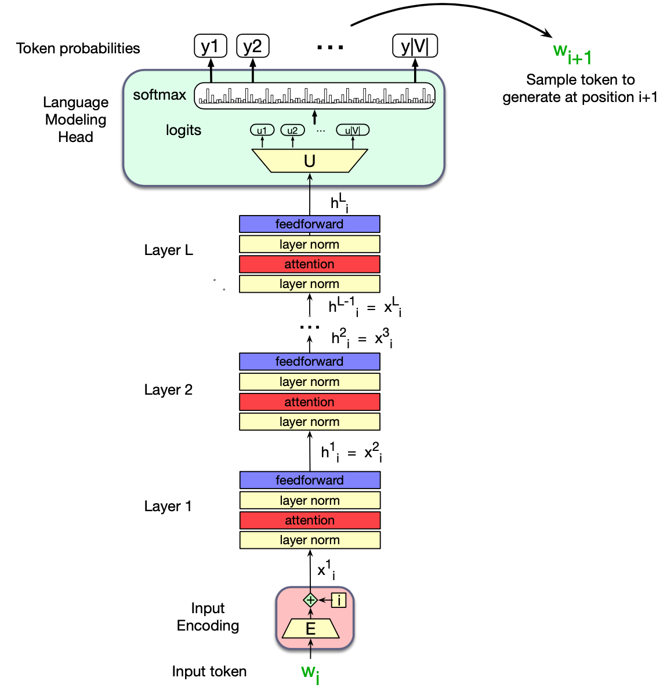
Sources: Speech and Language Processing
See Neural machine translation with a Transformer and Keras for a minimal but full implementation of Transformer architecture in TensorFLow.
Generative AI: Large Language Models
Here is a collection of some foundation models, also sometimes called base models and their relative size in terms of #parameters which are based on transformers. Either using these models as they are or by applying fine tuning techniques to adapt them to your specific use case, you can rapidly build customize solutions without the need to train a model from scratch. The input to LLM is called prompt and the output is called completion.
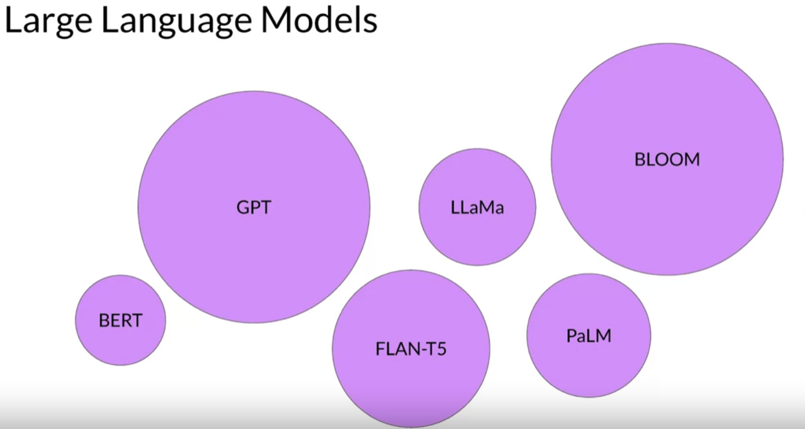
You can split the components transformer model apart for variations of the architecture.
-
Encoder-only models also work as seq2seq models (input and output length are the same) but with further modification, you can perform tasks such as sentiment analysis, classification (use the output of
[CLS]token), span extraction, embedding tasks(e.g., sentence similarity), token classification (e.g., NER), etc. BERT is an example of only encoder model. Characteristics:- Input: full sequence (e.g., a sentence or pair of sentences)
- Output: same length — one output embedding per token
- No autoregression or causal attention — full bidirectional attention
-
Encoder-decoder models allows for different input output size such as
T5. The encoder produces a sequence of hidden states (contextualized representations). This is fully bidirectional — each token attends to all others. Its decoder part takes previously generated tokens as input (with masking to
prevent seeing the future) . It also attends both to its own previous outputs (causal self-attention) and the encoder outputs (via cross-attention). The model predicts the next token autoregressively -
Decoder-only models are some the most commonly used ones such as
GPT,BLOOM,Lalma. These are used for text generation tasks. Characteristics:- Input: a prompt
- Output: generated tokens, one at a time, not tied to input length
- Attention is causal, so the model only attends to past tokens
Typical behavior of these models is that the model predicts the next token based on all previous ones. Generation continues until a stop token or max length is reached so input and output lengths can differ.
Large Language Models with Transformers
We have introduced most of the components of a transformer in the domain of language modeling: the transformer block including multi-head attention, the language modeling head, and the positional encoding of the input. In the following sections we’ll introduce the remaining aspects of the transformer LLM: sampling and training. We can use transformer-based large language models to NLP tasks. The tasks that are cases of conditional generation. Conditional generation is the task of generating text conditioned on an input piece of text. That is, we give the LLM an input piece of text, generally called a prompt, and then have the LLM continue generating text token by token, conditioned on the prompt and the previously generated tokens. The fact that transformers have such long contexts (many thousands of tokens) makes them very powerful for conditional generation, because they can look back so far into the prompting text. The insight of large language modeling is that many practical NLP tasks can be cast as word prediction, and that a powerful-enough language model can solve them with a high degree of accuracy. Tasks such as text completion, text summarization, question-answering, naming entity recognition, sentiment analysis are a few examples.
Generation in LLMs
The core of the generation process for large language models is the task of choosing the single word to generate next based on the context and based on the probabilities that the model assigns to possible words. This task of choosing a word to generate based on the model’s probabilities is called decoding. Decoding from a language model in a left-to-right manner (or right-to-left for languages like Arabic in which we read from right to left), and thus repeatedly choosing the next word conditioned on our previous choices is called autoregressive generation or causal LM generation. We will give a tour of the currently most prominent decoding methods, mainly Greedy search, Beam search, Top-K sampling and Top-p sampling.
Let's quickly install transformers and load the model. We will use GPT2 in Tensorflow 2.1 for demonstration, but the API is 1-to-1 the same for PyTorch.
import tensorflow as tf
from transformers import TFGPT2LMHeadModel, GPT2Tokenizer
tokenizer = GPT2Tokenizer.from_pretrained("gpt2")
# add the EOS token as PAD token to avoid warnings
model = TFGPT2LMHeadModel.from_pretrained("gpt2", pad_token_id=tokenizer.eos_token_id)
Greedy Search
One simple way to generate words is to always generate the most likely word given the context. Generating the most likely word given the context is called greedy decoding or greedy search. In practice, however, we don’t use greedy decoding with large language models. A major problem with greedy decoding is that because the words it chooses are (by definition) extremely predictable, the resulting text is generic and often quite repetitive. Indeed, greedy decoding is so predictable that it is deterministic; if the context is identical, and the probabilistic model is the same, greedy decoding will always result in generating exactly the same string.
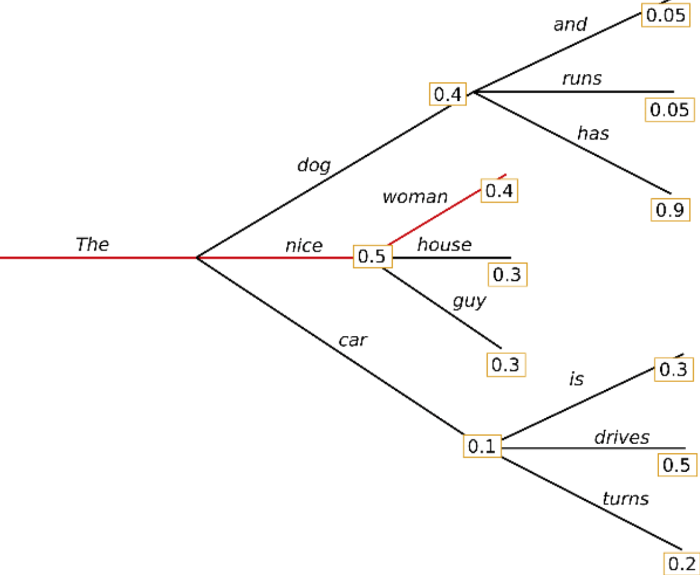
Starting from the word "The" , the algorithm greedily chooses the next word of highest probability "nice" and so on, so that the final generated word sequence is "The", "nice", "woman" having an overall probability of 0.5×0.4=0.2 . Generate word sequences using GPT2:
# encode context the generation is conditioned on
input_ids = tokenizer.encode('I enjoy walking with my cute dog', return_tensors='tf')
# generate text until the output length (which includes the context length) reaches 50
greedy_output = model.generate(input_ids, max_length=50)
print(tokenizer.decode(greedy_output[0], skip_special_tokens=True))
I enjoy walking with my cute dog, but I'm not sure if I'll ever be able to walk with my dog. I'm not sure if I'll ever be able to walk with my dog.
I'm not sure if I'll
The generated words following the context are reasonable, but the model quickly starts repeating itself! This is a very common problem in language generation in general and seems to be even more so in greedy and beam search. The major drawback of greedy search though is that it might miss high probability words hidden behind a low probability word which results in a smaller joint probability of the two. For example, the word "has" with its high conditional probability of 0.9 is hidden behind the word "dog" , which has only the second-highest conditional probability, so that greedy search misses the word sequence "The","dog","has" . Beam search can alleviate this problem!
Beam Search
Beam search reduces the risk of missing hidden high probability word sequences by keeping the most likely num_beams of hypotheses at each time step and eventually choosing the hypothesis that has the overall highest probability. We set num_beams > 1 and early_stopping=True so that generation is finished when all beam hypotheses reached the EOS token. Let's illustrate with num_beams=5:
# activate beam search and early_stopping
beam_output = model.generate(
input_ids,
max_length=50,
num_beams=5,
early_stopping=True
)
print(tokenizer.decode(beam_output[0], skip_special_tokens=True))
I enjoy walking with my cute dog, but I'm not sure if I'll ever be able to walk with him again.
I'm not sure if I'll ever be able to walk with him again. I'm not sure if I'll
While the result is arguably more fluent, the output still includes repetitions of the same word sequences. A simple remedy is to introduce -grams (a.k.a word sequences of words) penalties. The most common -grams penalty makes sure that no -gram appears twice by manually setting the probability of next words that could create an already seen -gram to 0.
# set no_repeat_ngram_size to 2
beam_output = model.generate(
input_ids,
max_length=50,
num_beams=5,
no_repeat_ngram_size=2,
early_stopping=True
)
print(tokenizer.decode(beam_output[0], skip_special_tokens=True))
I enjoy walking with my cute dog, but I'm not sure if I'll ever be able to walk with him again.
I've been thinking about this for a while now, and I think it's time for me to take a break
It looks much better! No repetition. Nevertheless, n-gram penalties have to be used with care. An article generated about the city New York should not use a 2-gram penalty or otherwise, the name of the city would only appear once in the whole text! Another important feature about beam search is that we can compare the top beams after generation and choose the generated beam that fits our purpose best. In transformers, we simply set the parameter num_return_sequences to the number of highest scoring beams that should be returned. Make sure though that num_return_sequences <= num_beams!
Source: Hugging Face, Colab Notebook for contrained beam search.
Random Sampling
The most common method for decoding in large language models is random sampling. Random sampling means randomly (not the most probable token) picking the next word according to its conditional probability distribution. Language generation using sampling is not deterministic anymore. The word "car" is sampled from the conditioned probability distribution , followed by sampling "drives" from distribution . In transformers, we set do_sample=True and deactivate Top-K sampling top_k=0:
# set seed to reproduce results. Feel free to change the seed though to get different results
tf.random.set_seed(0)
# activate sampling and deactivate top_k by setting top_k sampling to 0
sample_output = model.generate(
input_ids,
do_sample=True,
max_length=50,
top_k=0
)
print(tokenizer.decode(sample_output[0], skip_special_tokens=True))
I enjoy walking with my cute dog. He just gave me a whole new hand sense."
But it seems that the dogs have learned a lot from teasing at the local batte harness once they take on the outside.
"I take
Interesting! The text seems alright - but when taking a closer look, it is not very coherent. The 3-grams new hand sense and local batte harness are very weird and don't sound like they were written by a human. That is the big problem when sampling word sequences: The models often generate incoherent gibberish. It turns out random sampling doesn’t work well enough. The problem is that even though random sampling is mostly going to generate sensible, high-probable words, there are many odd, low probability words in the tail of the distribution, and even though each one is low probability, if you add up all the rare words, they constitute a large enough portion of the distribution that they get chosen often enough to result in generating weird sentences. For this reason, instead of random sampling, we usually use sampling methods that avoid generating the very unlikely words.
Temperature:
A trick is to make the distribution sharper (increasing the likelihood of high probability words and decreasing the likelihood of low probability words) by lowering the so-called temperature of the Softmax. Temprature changes the variance of probability distribution from the Softmax layer. The smaller temperature (cooler, <1) results in less variance or more peak distribution. So smaller number of words have higher probability of being picked. The warmer the temp (> 1), the flatter the distribution with more variability that helps generating text that sounds more creative! Temperature value = 1 leaves the Softmax output as default.

The conditional next word distribution of step becomes much sharper leaving almost no chance for word "car" to be selected. Let's see how we can cool down the distribution in the library by setting temperature=0.7:
# set seed to reproduce results. Feel free to change the seed though to get different results
tf.random.set_seed(0)
# use temperature to decrease the sensitivity to low probability candidates
sample_output = model.generate(
input_ids,
do_sample=True,
max_length=50,
top_k=0,
temperature=0.7
)
print(tokenizer.decode(sample_output[0], skip_special_tokens=True))
I enjoy walking with my cute dog, but I don't like to be at home too much. I also find it a bit weird when I'm out shopping. I am always away from my house a lot, but I do have a few friends
OK. There are less weird -grams and the output is a bit more coherent now! While applying temperature can make a distribution less random, in its limit, when setting temperature close to 0, temperature scaled sampling becomes equal to greedy decoding and will suffer from the same problems as before.
Top-k Sampling
Top-k sampling is a simple generalization of greedy decoding. Instead of choosing the single most probable word to generate, we first truncate the distribution to the top k most likely words, renormalize to produce a legitimate probability distribution, and then randomly sample from within these k words according to their renormalized probabilities. GPT2 adopted this sampling scheme, which was one of the reasons for its success in story generation. We extend the range of words used for both sampling steps in the example above from 3 words to 10 words to better illustrate Top-k sampling.
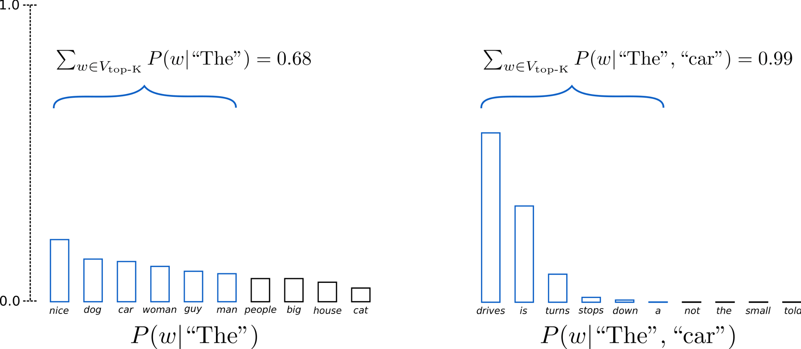
Having set , we limit our sampling pool to 6 words. In the second step, it successfully eliminates the rather weird candidates "not", "the", "small", "told" in the second sampling step.
# set seed to reproduce results. Feel free to change the seed though to get different results
tf.random.set_seed(0)
# set top_k to 50
sample_output = model.generate(
input_ids,
do_sample=True,
max_length=50,
top_k=50
)
print(tokenizer.decode(sample_output[0], skip_special_tokens=True))
I enjoy walking with my cute dog. It's so good to have an environment where your dog is available to share with you and we'll be taking care of you.
We hope you'll find this story interesting!
I am from
Not bad at all! One concern though with Top-k sampling is that it does not dynamically adapt the number of words that are filtered from the next word probability distribution. This can be problematic as some words might be sampled from a very sharp distribution, whereas others from a much more flat distribution. For example, in step one, Top-K eliminates the possibility to sample "people", "big", "house", "cat", which seem like reasonable candidates. On the other hand, in step two, the method includes the arguably ill-fitted words "down", "a" in the sample pool of words. Thus, limiting the sample pool to a fixed size K could endanger the model to produce gibberish for sharp distributions and limit the model's creativity for flat distribution. This intuition led to create Top-p or nucleus-sampling.
Top-p Sampling
Instead of sampling only from the most likely words, Top-p sampling chooses from the smallest possible set of words whose cumulative probability exceeds the probability . The probability mass is then redistributed among this set of words. This way, the size of the pool of words can dynamically increase and decrease according to the next word's probability distribution.
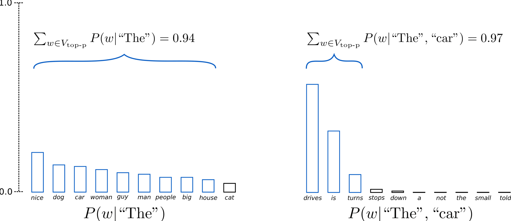
Having set , Top-p sampling picks the minimum number of words to exceed together of the probability mass. We activate Top-p sampling by setting 0 < top_p < 1:
# set seed to reproduce results. Feel free to change the seed though to get different results
tf.random.set_seed(0)
# deactivate top_k sampling and sample only from 92% most likely words
sample_output = model.generate(
input_ids,
do_sample=True,
max_length=50,
top_p=0.92,
top_k=0
)
print(tokenizer.decode(sample_output[0], skip_special_tokens=True))
I enjoy walking with my cute dog. He will never be the same. I watch him play.
Guys, my dog needs a name. Especially if he is found with wings.
What was that? I had a lot of
While in theory, Top-p seems more elegant than Top-k, both methods work well in practice. Top-p can also be used in combination with Top-k, which can avoid very low ranked words while allowing for some dynamic selection. Finally, to get multiple independently sampled outputs, we can again set the parameter num_return_sequences > 1:
# set seed to reproduce results. Feel free to change the seed though to get different results
tf.random.set_seed(0)
# set top_k = 50 and set top_p = 0.95 and num_return_sequences = 3
sample_outputs = model.generate(
input_ids,
do_sample=True,
max_length=50,
top_k=50,
top_p=0.95,
num_return_sequences=3
)
for i, sample_output in enumerate(sample_outputs):
print("{}: {}".format(i, tokenizer.decode(sample_output, skip_special_tokens=True)))
0: I enjoy walking with my cute dog. It's so good to have the chance to walk with a dog. But I have this problem with the dog and how he's always looking at us and always trying to make me see that I can do something
1: I enjoy walking with my cute dog, she loves taking trips to different places on the planet, even in the desert! The world isn't big enough for us to travel by the bus with our beloved pup, but that's where I find my love
2: I enjoy walking with my cute dog and playing with our kids," said David J. Smith, director of the Humane Society of the US.
"So as a result, I've got more work in my time," he said.
Source: Hugging Face, Colab Notebook for implementing the code.
Training Large Language Models
Transformers typically are first pretrained by self-supervised learning on a large generic dataset, followed by supervised fine-tuning on a small task-specific dataset. The pretrain dataset is typically an unlabeled large corpus. Tasks for pretraining and fine-tuning commonly include:
- language modeling
- next-sentence prediction
- question answering
- reading comprehension
- sentiment analysis
- paraphrasing
Training large language models involves multiple stages and methods, depending on the goal (e.g., general language understanding, specific domain expertise, or conversational ability). Here’s a breakdown of the key methods and phases:
-
Pretraining
This is the foundational stage where the model learns from massive text corpora, usually in an unsupervised or self-supervised way. Data sources are Books, Wikipedia, Common Crawl, web data, forums, etc. In general, there are 3 classes of language modelling tasks: masked, causal or autoregressive, and prefixLM- Masked Language Modeling (MLM): Random words are masked in the input, and the model predicts them. Used by models like BERT.
- Causal/Autoresgressive Language Modeling (CLM): The entire sequence is masked at first, and the model produces a probability distribution for the first token. Then the first token is revealed and the model predicts the second token, and so on. The model predicts the next word in a sequence, learning context by processing left-to-right. Used by GPT models.
- prefixLM Modeling: The sequence is divided into two parts. The first part is presented as context, and the model predicts the first token of the second part. Then that would be revealed, and the model predicts the second token, and so on. T5 series of models are trained so.
- Next Sentence Prediction (NSP): Used in some BERT variants to help the model understand sentence relationships.
-
Fine-tuning
Once pretrained, the model is fine-tuned on specific tasks or datasets.- Supervised fine-tuning: Labeled datasets are used for tasks like question answering, sentiment analysis, or summarization.
- Domain-specific fine-tuning: The model is trained on medical, legal, or technical texts to specialize in that domain.
- Low-rank adaptation (LoRA) / adapters: Lightweight fine-tuning methods that introduce small trainable components, making it more efficient.
-
Reinforcement Learning from Human Feedback (RLHF)
Used in models like ChatGPT to improve helpfulness, safety, and alignment.- Human labelers rank different outputs.
- Reward models are trained on these rankings.
- Reinforcement learning (e.g., Proximal Policy Optimization or PPO) optimizes the model toward preferred behavior.
-
Prompt Engineering & In-context Learning
No actual training happens here, but it's a method to guide the model’s behavior using specially designed prompts.- Few-shot learning: Provide a few examples in the prompt.
- Zero-shot learning: Just ask the question/task directly without examples.
- Chain-of-thought prompting: Helps the model reason by example.
-
Distillation and Quantization (Efficiency Training)
Post-training methods used to make large models smaller and faster.- Knowledge distillation: A smaller model is trained to mimic a larger one.
- Quantization: Reduces the precision of weights to speed up inference with minimal accuracy loss.
-
Continual Learning / Online Learning
The model keeps learning from new data without forgetting what it already knows. This is a hard problem (avoiding “catastrophic forgetting”), but useful for staying up to date.
We will cover the first two training types of language models. In causal language modeling the model has to predict the next token in the sentence so the labels are the same as the inputs but shifted to the right by one step. To make sure the model does not cheat, it gets an attention mask that will prevent it to access the tokens after token when trying to predict the token in the sentence. In masked language modeling the model has to predict some tokens that are masked in the input. It still has access to the whole sentence, so it can use the tokens before and after the tokens masked to predict their value.
We introduced most of the components of a transformer in the domain of language modeling: transformer block including multi-head attention, the language modeling head, and the positional encoding of the input and sampling. But how do we teach a transformer to be a language model? What is the algorithm and what data do we train on?
To train a transformer as a language model, we use the same self-supervision (or self-training): we take a corpus of text as training material and at each time step, ask the model to predict the next word. We call such a model self-supervised because we don’t have to add any special gold labels to the data; the natural sequence of words is its own supervision! We simply train the model to minimize the error in predicting the true next word in the training sequence, using cross-entropy as the loss function.:
Thus at each word position of the input, the model takes as input the correct sequence of tokens , and uses them to compute a probability distribution over possible next words so as to compute the model’s loss for the next token . Then we move to the next word, we ignore what the model predicted for the next word and instead use the correct sequence of tokens to estimate the probability of token . This idea that we always give the model the correct history sequence to predict the next word (rather than feeding the model its best case prediction from the previous time step) is called teacher forcing. This is demonstrated in the following figure in which the transformer block is repeated for the illustration porpuse.

Note the key difference between the above figure and the earlier RNN-based version. There the calculation of the outputs and the losses at each step was inherently serial given the recurrence in the calculation of the hidden states (hidden-to-hidden states connections). With transformers, each training item can be processed in parallel since the output for each element in the sequence is computed separately.
Large language models are mainly trained on text scraped from the web, augmented by more carefully curated data. Because these training corpora are so large, they are likely to contain many natural examples that can be helpful for NLP tasks, such as question and answer pairs (for example from FAQ lists), translations of sentences between various languages, documents together with their summaries, and so on. Web text is usually taken from corpora of automatically-crawled web pages like the common crawl, a series of snapshots of the entire web produced by the non- profit Common Crawl that each have billions of webpages. Various versions of common crawl data exist, such as the Colossal Clean Crawled Corpus (C4; Raffel et al. 2020), a corpus of 156 billion tokens of English that is filtered in various ways (deduplicated, removing non-natural language like code, sentences with offensive words from a blocklist). This C4 corpus seems to consist in large part of patent text documents, Wikipedia, and news sites (Dodge et al., 2021). Wikipedia plays a role in lots of language model training, as do corpora of books. The Pile (Gao et al., 2020) is an 825 GB English text corpus that is constructed by publicly released code, containing again a large amount of text scraped from the web as well as books and Wikipedia. Dolma is a larger open corpus of English, created with public tools, containing three trillion tokens, which similarly consists of web text, academic papers, code, books, encyclopedic materials, and social media.
There were three variance of the transformer model: encoder-only, encoder-decoder models, and decode-only. Each of these is trained on a different objective, and so learns how to carry out different tasks.
Autoencoding Models
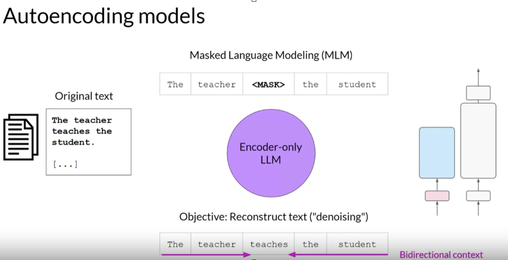
Encoder-only models are also known as Autoencoding models, and they are pre-trained using masked language modeling. Here, tokens in the input sequence or randomly mask, and the training objective is to predict the mask tokens in order to reconstruct the original sentence. This is also called a denoising objective. Autoencoding models spilled bi-directional representations of the input sequence, meaning that the model has an understanding of the full context of a token and not just of the words that come before. Encoder-only models are ideally suited to task that benefit from this bi-directional contexts. You can use them to carry out sentence classification tasks, for example, sentiment analysis or token-level tasks like name entity recognition or word classification. Some well-known examples of an autoencoder model are BERT and RoBERTa.
Autoregressive Models
Now, let's take a look at decoder-only or autoregressive models, which are pre-trained using causal language modeling. Here, the training objective is to predict the next token based on the previous sequence of tokens. Predicting the next token is sometimes called full language modeling by researchers. Decoder-based autoregressive models, mask the input sequence and can only see the input tokens leading up to the token in question. The model has no knowledge of the end of the sentence. The model then iterates over the input sequence one by one to predict the following token. In contrast to the encoder architecture, this means that the context is unidirectional. By learning to predict the next token from a vast number of examples, the model builds up a statistical representation of language. Models of this type make use of the decoder component off the original architecture without the encoder. Decoder-only models are often used for text generation, although larger decoder-only models show strong zero-shot inference abilities, and can often perform a range of tasks well. Well known examples of decoder-based autoregressive models are GBT and BLOOM.
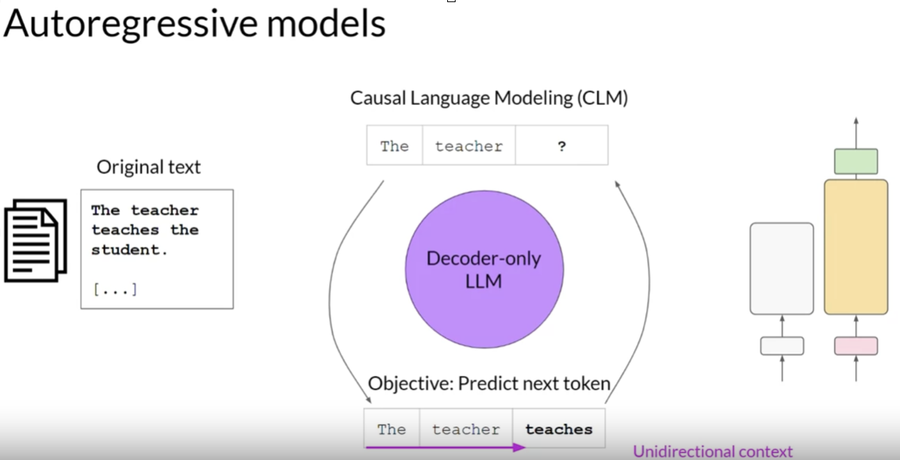
Seq-to-Seq Models
The final variation of the transformer model is the sequence-to-sequence model that uses both the encoder and decoder parts off the original transformer architecture. The exact details of the pre-training objective vary from model to model. A popular sequence-to-sequence model T5, pre-trains the encoder using span corruption, which masks random sequences of input tokens. Those masked sequences are then replaced with a unique sentinel token, shown here as <x>. Sentinel tokens are special tokens added to the vocabulary, but do not correspond to any actual word from the input text. The decoder is then tasked with reconstructing the mask token sequences auto-regressively. The output is the sentinel token followed by the predicted tokens. You can use sequence-to-sequence models for translation, summarization, and question-answering. They are generally useful in cases where you have a body of texts as both input and output. Besides T5, which you'll use in the labs in this course, another well-known encoder-decoder model is BART, not bird.
To summarize, here's a quick comparison of the different model architectures and the targets off the pre-training objectives. Autoencoding models are pre-trained using masked language modeling. They correspond to the encoder part of the original transformer architecture, and are often used with sentence classification or token classification.
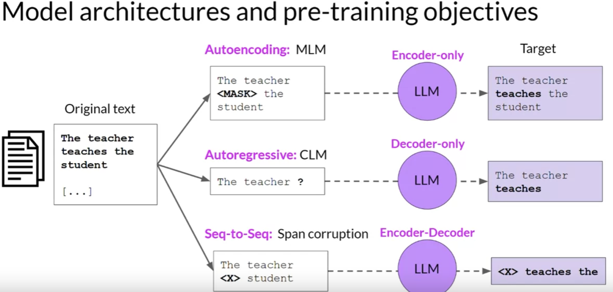
Researchers have found that the larger a model, the more likely it is to work as you needed to without additional in-context learning or further training. This observed trend of increased model capability with size has driven the development of larger and larger models in recent years. This growth has been fueled by inflection points and research, such as the introduction of the highly scalable transformer architecture, access to massive amounts of data for training, and the development of more powerful compute resources.

It turns out that training these enormous models is difficult and very expensive, so much so that it may be infeasible to continuously train larger and larger models.
Computational challenges of training LLMs
One of the most common issues you still counter when you try to train large language models is running out of memory. If you've ever tried training or even just loading your model on Nvidia GPUs, this error message might look familiar CUDA, short for Compute Unified Device Architecture, is a collection of libraries and tools developed for Nvidia GPUs. Libraries such as PyTorch and TensorFlow use CUDA to boost performance on matrix multiplication and other operations common to deep learning. You'll encounter these out-of-memory issues because most LLMs are huge, and require a ton of memory to store and train all of their parameters.
Let's do some quick math to develop intuition about the scale of the problem. A single parameter is typically represented by a 32-bit float, which is a way computers represent real numbers.A 32-bit float takes up 4 bytes of memory. So to store one billion parameters you'll need four bytes times one billion parameters, or 4 gigabyte of GPU RAM at 32-bit full precision. This is a lot of memory, and note, if only accounted for the memory to store the model weights so far. If you want to train the model, you'll have to plan for additional components that use GPU memory during training. These include two Adam optimizer states, gradients, activations, and temporary variables needed by your functions. This can easily lead to 20 extra bytes of memory per model parameter. In fact, to account for all of these overhead during training, you’ll actually require approximately 6 times the amount of GPU RAM that the model weights alone take up. To train a 1 billion parameter model at 32-bit full precision, you'll need approximately 24 gigabyte of GPU RAM. This is definitely too large for consumer hardware, and even challenging for hardware used in data centers, if you want to train with a single processor. What options do you have to reduce the memory required for training? One technique that you can use to reduce the memory is called quantization. The main idea here is that you reduce the memory required to store the weights of your model by reducing their precision from 32-bit floating point numbers to 16-bit floating point numbers, or eight-bit integer numbers.
The corresponding data types used in deep learning frameworks and libraries are FP32 for 32-bit full position, FP16, or Bfloat16 for 16-bit half precision, and int8 eight-bit integers. The range of numbers you can represent with FP32 goes from approximately to . By default, model weights, activations, and other model parameters are stored in FP32. Quantization statistically projects the original 32-bit floating point numbers into a lower precision space, using scaling factors calculated based on the range of the original 32-bit floating point numbers. Let's look at an example. Suppose you want to store a PI to six decimal places in different positions. Floating point numbers are stored as a series of bits zeros and ones. The 32 bits to store numbers in full precision with FP32 consist of one bit for the sign where zero indicates a positive number, and one a negative number. Then 8 bits for the exponent of the number, and 23 bits representing the fraction of the number. The fraction is also referred to as the significant. It represents the precision bits off the number. If you convert the 32-bit floating point value back to a decimal value, you notice the slight loss in precision. For reference, here's the real value of Pi to 19 decimal places. Now, let's see what happens if you project this FP32 representation of Pi into the FP16, 16-bit lower precision space. The 16 bits consists of one bit for the sign, as you saw for FP32, but now FP16 only assigns five bits to represent the exponent and 10 bits to represent the fraction.
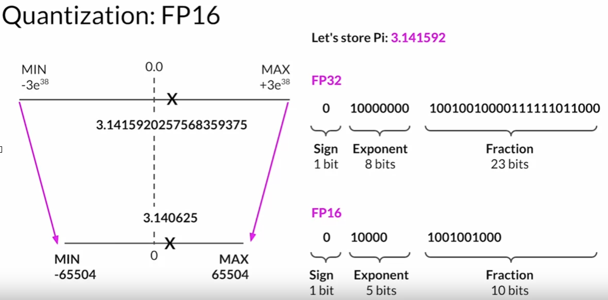
Therefore, the range of numbers you can represent with FP16 is vastly smaller from negative 65,504 to positive 65,504. The original FP32 value gets projected to 3.140625 in the 16-bit space. Notice that you lose some precision with this projection. There are only six places after the decimal point now. You'll find that this loss in precision is acceptable in most cases because you're trying to optimize for memory footprint. Storing a value in FP32 requires 4 bytes of memory. In contrast, storing a value on FP16 requires only two bytes of memory, so with quantization you have reduced the memory requirement by half. The AI research community has explored ways to optimize16-bit quantization. One datatype in particular BFLOAT16, has recently become a popular alternative to FP16. BFLOAT16, short for Brain Floating Point Format developed at Google Brain has become a popular choice in deep learning. Many LLMs, including FLAN-T5, have been pre-trained with BFLOAT16. BFLOAT16 or BF16 is a hybrid between half precision FP16 and full precision FP32. BF16 significantly helps with training stability and is supported by newer GPU's such as NVIDIA's A100. BFLOAT16 is often described as a truncated 32-bit float, as it captures the full dynamic range of the full 32-bit float, that uses only 16-bits. BFLOAT16 uses the full 8 bits to represent the exponent, but truncates the fraction to just 7 bits. This not only saves memory, but also increases model performance by speeding up calculations. The downside is that BF16 is not well suited for integer calculations, but these are relatively rare in deep learning. For completeness let's have a look at what happens if you quantize Pi from the 32-bit into the even lower precision eight bit space.

If you use one bit for the sign INT8 values are represented by the remaining seven bits. This gives you a range to represent numbers from negative 128 to positive 127 and unsurprisingly Pi gets projected two or three in the 8-bit lower precision space. This brings new memory requirement down from originally four bytes to just one byte, but obviously results in a pretty dramatic loss of precision. By applying quantization, you can reduce your memory consumption required to store the model parameters down to only two gigabyte using 16-bit half precision of 50% saving. Note that in all these cases you still have a model with one billion parameters. As you can see, the circles representing the models are the same size. Quantization will give you the same degree of savings when it comes to training. However, many models now have sizes in excess of 50 billion or even 100 billion parameters. Meaning you'd need up to 500 times more memory capacity to train them, tens of thousands of gigabytes.
Efficient multi-GPU compute strategies
It's very likely that at some point you will need to scale your model training efforts beyond a single GPU. Even if your model does fit onto a single GPU, there are benefits to using multiple GPUs to speed up your training. So it is useful to know how to distribute compute across GPUs even when you're working with a small model. Let's discuss how you can carry out this scaling across multiple GPUs in an efficient way. You'll begin by considering the case where your model is still fits on a single GPU. The first step in scaling model training is to distribute large data-sets across multiple GPUs and process these batches of data in parallel. A popular implementation of this model replication technique is Pytorch’ s distributed data-parallel (DDP).
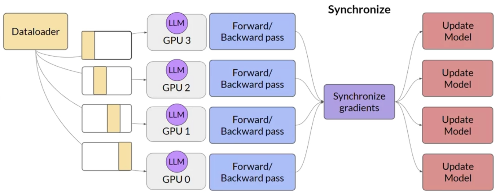
DDP copies your model onto each GPU and sends batches of data to each of the GPUs in parallel. Each data-set is processed in parallel and then a synchronization step combines the results of each GPU, which in turn updates the model on each GPU, which is always identical across chips. This implementation allows parallel computations across all GPUs that results in faster training. Note that DDP requires that your model weights and all of the additional parameters, gradients, and optimizer states that are needed for training, fit onto a single GPU. If your model is too big for this, you should look into another technique called model sharding. A popular implementation of model sharding is Pytorch is fully sharded data parallel (FSDP). FSDP is motivated by a paper published by researchers at Microsoft in 2019 that proposed a technique called ZeRO. ZeRO stands for zero redundancy optimizer and the goal of ZeRO is to optimize memory by distributing or sharding model states across GPUs with ZeRO data overlap. This allows you to scale model training across GPUs when your model doesn't fit in the memory of a single chip. One limitation of the model replication strategy that I showed about DDP is that you need to keep a full model copy on each GPU, which leads to redundant memory consumption. You are storing the same numbers on every GPU. ZeRO, on the other hand, eliminates this redundancy by distributing (also referred to as sharding) the model parameters, gradients, and optimizer states across GPUs instead of replicating them. At the same time, the communication overhead for a sinking model states stays close to that of the previously discussed ADP. ZeRO offers three optimization stages.
- ZeRO Stage 1: shards only optimizer states across GPUs, this can reduce your memory footprint by up to a factor of 4
- ZeRO Stage 2: shards the gradients across chips. When applied together with Stage 1, this can reduce your memory footprint by up to 8 times
- ZeRO Stage 3: shards all components including the model parameters across GPUs

For example, sharding across 64 GPUs could reduce your memory by a factor of 64. Let's apply this concept to the visualization of GDP and replace the LLM by the memory representation of model parameters, gradients, and optimizer states. When you use FSDP, you distribute the data across multiple GPUs as you saw happening in GDP. But with FSDP, you also distributed or shard the model parameters, gradients, and optimize the states across the GPU nodes using one of the strategies specified in the ZeRO paper. With this strategy, you can now work with models that are too big to fit on a single chip. In contrast to GDP, where each GPU has all of the model states required for processing each batch of data available locally, FSDP requires you to collect this data from all of the GPUs before the forward and backward pass.

Each GPU requests data from the other GPUs on-demand to materialize the sharded data into uncharted data for the duration of the operation. After the operation, you release the uncharted non-local data back to the other GPUs as original sharded data. You can also choose to keep it for future operations during backward pass for example. Note, this requires more GPU RAM again, this is a typical performance versus memory trade-off decision. In the final step after the backward pass, FSDP is synchronizes the gradients across the GPUs in the same way they were for DDP. Model sharding S described with FSDP allows you to reduce your overall GPU memory utilization. Optionally, you can specify that FSDP offloads part of the training computation to GPUs to further reduce your GPU memory utilization.
Pre-training for domain adaptation
If your target domain uses vocabulary and language structures that are not commonly used in day to day language, you may need to perform domain adaptation to achieve good model performance. For example, imagine you're a developer building an app to help lawyers and paralegals summarize legal briefs. Legal writing makes use of very specific terms. These words are rarely used outside of the legal world, which means that they are unlikely to have appeared widely in the training text of existing LLMs. As a result, the models may have difficulty understanding these terms or using them correctly.
Another issue is that legal language sometimes uses everyday words in a different context, or for similar reasons, you may face challenges if you try to use an existing LLM in a medical application. Medical language contains many uncommon words to describe medical conditions and procedures. And these may not appear frequently in training datasets consisting of web scrapes and book texts.
Pretraining your model from scratch will result in better models for highly specialized domains like law, medicine, finance or science. Now let's return to BloombergGPT, first announced in 2023 in a paper by Shijie Wu, Steven Lu, and colleagues at Bloomberg. BloombergGPT is an example of a large language model that has been pretrained for a specific domain, in this case, finance. The researchers chose data consisting of 51% financial data and 49% public data.
Mask Language Models
We have introduced the transformer and saw how to pretrain a transformer language model as a causal or left-to-right language model. Here we introduce a second paradigm for pretrained language models, the bidirectional transformer encoder, and the most widely-used version, the BERT model (Devlin et al., 2019). This model is trained via masked language modeling, where instead of predicting the following word, we mask a word in the middle and ask the model to guess the word given the words on both sides. This method thus allows the model to see both the right and left context.
Bidirectional Encoder Representations from Transformers (BERT)
Bidirectional Encoder representations from transformers underlies models like BERT and its descendants like RoBERTa (Liu et al., 2019) or SpanBERT (Joshi et al., 2020). We introduced causal (left-to-right) transformers and saw how they can serve as the basis for language models that can be applied to autoregressive contextual generation problems like question answering or summarization. But this left-to-right nature of these models is also a limitation, because there are tasks for which it would be useful, when processing a token, to be able to peak at future tokens. This is especially true for sequence labeling tasks in which we want to tag each token with a label, such as the named entity tagging task.
The focus of bidirectional encoders is instead on computing contextualized representations of the input tokens. Bidirectional encoders use self-attention to map sequences of input embeddings to sequences of output embeddings of the same length . These output embeddings are contextualized representations of each input token that are useful across a range of applications where we need to do a classification or a decision based on the token in context. The masked language models of we talk about here are sometimes called encoder-only, because they produce an encoding for each input token but generally aren’t used to produce running text by decoding or sampling. That’s an important point: masked language models are not used for generation. They are generally instead used for interpretative tasks. They do not have the decoder part (of the full encoder-decoder transformer architecture) which is used for generating text. The output embeddings are the final layer’s output of BERT which are vectors of shape: (sequence_length, hidden_size). Each vector corresponds to one input token, each vector contains information about that token in context. These contextual embeddings can be pooled (e.g., [CLS] token) for
- Classification,
- Passed to a decoder for question answering,
- Used token-wise for NER or POS tagging,
- Aggregated to create sentence embeddings etc.
Bidirectional encoders allow the attention mechanism to attend to all tokens ranging over the entire input. This is simply the self-attention, without mask (as the case for the causal attention). The original English-only bidirectional transformer encoder model, BERT (Devlin et al., 2019), consisted of the following:
- An English-only subword vocabulary consisting of 30,000 tokens generated using the WordPiece algorithm (Schuster and Nakajima, 2012)
- Input context window N=512 tokens, and model dimensionality d=768. So X, the input to the model, is of shape
- L=12 layers of transformer blocks, each with A=12 (bidirectional) multihead attention layers
- The resulting model has about 100M parameters.
The larger multilingual XLM-RoBERTa model, trained on 100 languages, has
- A multilingual subword vocabulary with 250,000 tokens generated using the SentencePiece Unigram LM algorithm (Kudo and Richardson, 2018b)
- Input context window N=512 tokens, and model dimensionality d=1024, hence X, the input to the model, is of shape
- L=24 layers of transformer blocks, with A=16 multihead attention layers each
- The resulting model has about 550M parameters.
Note that 550M parameters is relatively small as large language models go (Llama 3 has 405B parameters, so is 3 orders of magnitude bigger). Indeed, masked language models tend to be much smaller than causal language models. BERT was pre-trained simultaneously on two tasks:
- Masked Language Modeling
- Next Sentence Prediction
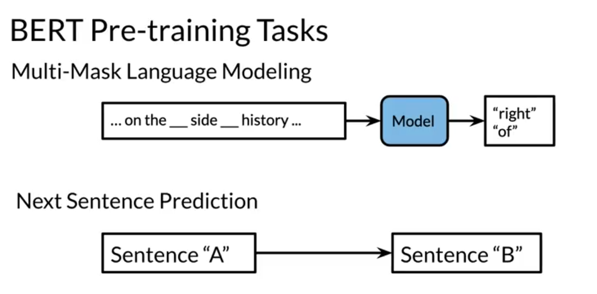
Masked Language Modeling (MLM): In MLM training, the model is presented with a series of sentences from the training corpus in which a percentage of tokens (15% in the BERT model) have been randomly chosen to be manipulated by the masking procedure. Given an input sentence lunch was delicious and assume we randomly chose the 3rd token delicious to be manipulated,
- 80% of the time: The token is replaced with the special vocabulary token named
[MASK], e.g.lunch was delicious→lunch was [MASK]. - 10% of the time: The token is replaced with another token, randomly sampled from the vocabulary based on token unigram probabilities. e.g.
lunch was delicious→lunch was gasp. - 10% of the time: the token is left unchanged. e.g.
lunch was delicious→lunch was delicious.
We then train the model to guess the correct token for the manipulated tokens. Why the three possible manipulations? Adding the [MASK] token creates a mismatch between pretraining and downstream fine-tuning or inference, since when we employ the MLM model to perform a downstream task, we don’t use any [MASK] tokens. If we just replaced tokens with the [MASK], the model might only predict tokens when it sees a [MASK], but we want the model to try to always predict the input token. To train the model to make the prediction, the original input sequence is tokenized using a subword model and tokens are sampled to be manipulated. Word embeddings for all of the tokens in the input are retrieved from the embedding matrix and combined with positional embeddings to form the input to the transformer, passed through the stack of bidirectional transformer blocks, and then the language modeling head. The MLM training objective is to predict the original inputs for each of the masked tokens and the cross-entropy loss from these predictions drives the training process for all the parameters in the model. That is, all of the input tokens play a role in the self-attention process, but only the sampled tokens are used for learning.
In the following figure, three of the input tokens are selected, two of which are masked and the third is replaced with an unrelated word. The probabilities assigned by the model to these three items are used as the training loss. The other 5 tokens don’t play a role in training loss.
The focus of mask-based learning is on predicting words from surrounding contexts with the goal of producing effective word-level representations. However, an important class of applications involves determining the relationship between pairs of sentences. These include tasks like paraphrase detection (detecting if two sentences have similar meanings), entailment (detecting if the meanings of two sentences entail or contradict each other) discourse coherence (deciding if two neighboring sentences form a coherent discourse). For this reason, some models in the BERT family include a second learning objective called Next Sentence Prediction (NSP). In this task, the model is presented with pairs of sentences and is asked to predict whether each pair consists of an actual pair of adjacent sentences from the training corpus or a pair of unrelated sentences. In BERT, 50% of the training pairs consisted of positive pairs, and in the other 50% the second sentence of a pair was randomly selected from elsewhere in the corpus. The NSP loss is based on how well the model can distinguish true pairs from random pairs. To facilitate NSP training, BERT introduces two special tokens to the input representation (tokens that will prove useful for finetuning as well). After tokenizing the input with the subword model, the token [CLS] (for "classify") is prepended to the input sentence pair, and the token [SEP] (for "separate") is placed between the sentences and after the final token of the second sentence. There are actually two more special tokens, a ‘First Segment’ token, and a ‘Second Segment’ token. These tokens are added in the input stage to the word and positional embeddings. That is, each token of the input X is actually formed by summing 3 embeddings: word, position, and first/second segment embeddings.
After processing the two spans, the 1st output vector (the vector coding for [CLS]) is passed to a separate neural network for the binary classification. In fact, we add a special head, in this case an NSP head, which consists of a learned set of classification weights for binary classification (outputs [IsNext] or [NotNext]).
But how BERT inputs are fed into the model? You start with position embeddings to indicate the position of words in the sentence. Then you have the segment embeddings to indicate whether it's a sentence A or sentence B (remember in BERT you also use next sentence prediction). Then you have the token embeddings or the input embeddings. You also have a CLS token, which is used to indicate the beginning of the sentence, and a SEP token, which is used to indicate the end of the sentence. Then you just take the sum of the token embeddings, the segmentation embeddings, and the position embeddings, and then you get your new input.

Over here you can see you have masked sentence A, you have masked sentence B, they go into tokens, and then you have the CLS token, which is a special classification symbol added in front of every input. Then you have the SEP token, which is the special separator token. You convert them into the embeddings so then you get your transformer blocks. Then you can see at the end you get your , and . Each embedding will be used to predict the masked word via a simple softmax. You have this C also, embedding, which can be used for next sentence prediction.
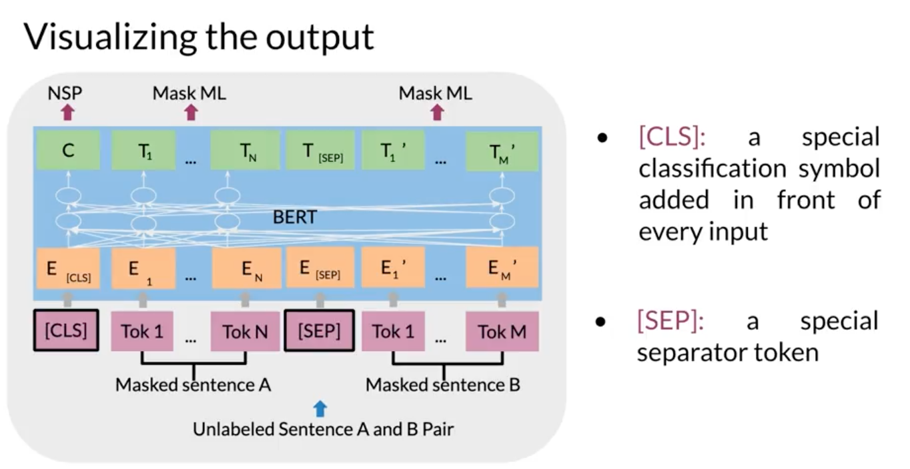
Fine-tuning BERT for NLP Tasks
The power of pretrained language models lies in their ability to extract generalizations from large amounts of text—generalizations that are useful for downstream applications. There are two ways to make practical use of the generalizations to solve downstream tasks. The most common way is to use natural language to prompt the model, putting it in a state where it contextually generates what we want. Alternative way to use pretrained language models for downstream applications. In the kind of fine-tuning used for masked language models, we add application-specific head on top of pretrained models, taking their output as its input. The fine-tuning process consists of using labeled data about the application to train these additional application-specific parameters. Typically, this training will either freeze or make only minimal adjustments to the pretrained language model parameters.
Sequence Classification
For sequence classification, we represent the entire input to be classified by a single vector. We can represent a sequence in various ways. One way is to take the sum or the mean of the last output vector from each token in the sequence. For BERT, the output vector in the final layer of the model for the [CLS] input token represents the entire input sequence and serves as the input to a classifier head, a logistic regression or neural network classifier that makes the relevant decision.
As an example, let’s return to the problem of sentiment classification. Fine-tuning a classifier for this application involves learning a set of weights, , to map the output vector for the [CLS] token to a set of scores over the possible sentiment classes. Assuming a three-way sentiment classification task (positive, negative, neutral) and dimensionality as the model dimension, will be of size . Fine-tuning the values in WC requires supervised training data consisting of input sequences labeled with the appropriate sentiment class. Training proceeds in the usual way; cross-entropy loss between the Softmax output and the correct answer is used to drive the learning that produces WC.
Sequence Labelling: Named Entity Recognition
A named entity is, roughly speaking, anything that can be referred to with a proper name: a person, a location, an organization. The task of named entity recognition (NER) is to find spans of text that constitute proper names and tag the type of the entity. Four entity tags are most common: PER (person), LOC (location), ORG (organization), or GPE (geo-political entity). Named entity recognition is a useful step in various natural language processing tasks, including linking text to information in structured knowledge sources like Wikipedia, measuring sentiment or attitudes toward a particular entity in text, or even as part of anonymizing text for privacy. The NER task is difficult because of the ambiguity of segmenting NER spans, figuring out which tokens are entities and which aren’t, since most words in a text will not be named entities. Another difficulty is caused by type ambiguity. The mention Washington can refer to a person, a sports team, a city, or the US government. One standard approach to sequence labeling for a span-recognition problem like NER is BIO tagging (Ramshaw and Marcus, 1995). This is a method that allows us to treat NER like a word-by-word sequence labeling task, via tags that capture both the boundary and the named entity type. In BIO tagging we label any token that begins a span of interest with the label B, tokens that occur inside a span are tagged with an I, and any tokens outside of any span of interest are labeled O. In sequence labeling, we pass the final output vector corresponding to each input token to a classifier that produces a Softmax distribution over the possible set of tags. A greedy approach, where the argmax tag for each token is taken as a likely answer, can be used to generate the final output tag sequence. Note that supervised training data for NER is typically in the form of BIO tags associated with text segmented at the word level. For example the following sentence containing two named entities:
Mt. Sanitas is in Sunshine Canyon .
B-LOC I-LOC O O B-LOC I-LOC. O
Unfortunately, the sequence of WordPiece tokens for this sentence doesn’t align directly with BIO tags in the annotation:
'Mt', '.', 'San', '##itas', 'is', 'in', 'Sunshine', 'Canyon' '.'
To deal with this misalignment, we need a way to assign BIO tags to subword tokens during training and a corresponding way to recover word-level tags from subwords during decoding. For training, we can just assign the gold-standard tag associated with each word to all of the subword tokens derived from it. For decoding, the simplest approach is to use the argmax BIO tag associated with the first subword token of a word. Thus, in our example, the BIO tag assigned to “Mt” would be assigned to “Mt.” and the tag assigned to “San” would be assigned to “Sanitas”, effectively ignoring the information in the tags assigned to “.” and “##itas”. More complex approaches combine the distribution of tag probabilities across the subwords in an attempt to find an optimal word-level tag.
Evaluating Named Entity Recognition
Named entity recognizers are evaluated by recall, precision, and F1 measure. Recall that recall is the ratio of the number of correctly labeled responses to the total that should have been labeled; precision is the ratio of the number of correctly labeled responses to the total labeled; and F1-measure is the harmonic mean of the two. To know if the difference between the F1 scores of two NER systems is a significant difference, we use the paired bootstrap test, or the similar randomization test.
BERT can be used for some other NLP tasks in a similar way. Form example, if you want to go on to MNLI or like hypothesis-premise scenario, then instead of having sentence A and sentence B, you're going to feed in the hypothesis and the premise. For question answering, you will have SQuAD, for example, you'll have your question and your answer instead of A and B. You can feed data for different tasks just as shown in the following picture. You can do the question and answering, Name Entity Recognition, hypothesis and premise, summary of text, given the place of sentence A and sentence B, or fill it with a text in parts for sentence A for tasks such as Text classification, sentiment analysis.

Sources:
Transformer T5
T5, also known as text-to-text transformer, can be used on several tasks and it is trained similar to BERT, that is, using mask language modelling (known as span corruption) and transfer learning. It also uses encoder-decoder transformers when training.
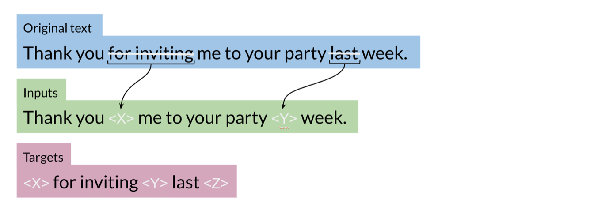
For example, you represent the “for inviting” with <X> and last with <Y> then the model predicts what the X should be and what the Y should be. This is exactly what we saw in the BERT loss. You can also mask out a few positions, not just one. The loss is only on the mask for BERT, for T5 it is on the target.
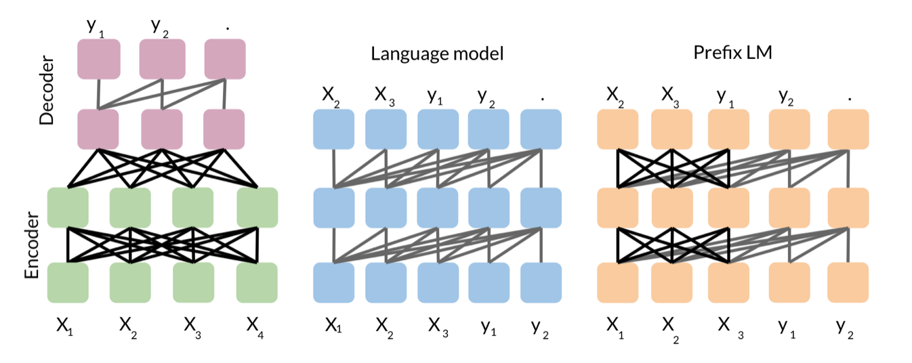
So we start with the basic encoder-decoder representation. There you have a fully visible attention in the encoder and then causal attention in the decoder. So light gray lines correspond to causal masking. And dark gray lines correspond to the fully visible masking. In the middle we have the language model which consists of a single transformer layer stack. And it's being fed the concatenation of the inputs and the target. So it uses causal masking throughout as you can see because they're all gray lines. And you have X1 going inside, you get X2, X2 goes into the model and you get X3 and so forth. To the right, we have prefix language model which corresponds to allowing fully visible masking over the inputs as you can see with the dark arrows. And then causal masking in the rest.
Multi-Task Training Strategy
This is a reminder of how the T5 model works:

You can see that you only have to add a small prefix to the input and the model as a result will solve the task for you. There are many tasks that the T5 model can do for you. It is possible to formulate most NLP tasks in a “text-to-text” format – that is, a task where the model is fed some text for context or conditioning and is then asked to produce some output text. This framework provides a consistent training objective both for pre-training and fine-tuning. Specifically, the model is trained with a maximum likelihood objective (using “teacher forcing” ) regardless of the task. The main objective of the multitasking training strategy is to improve the performance of the various tasks by learning them together.
Last but not least, T5 uses the encoder and the decoder transformer architectures with bidirectional context which makes it a robust model. T5 can perform several tasks including question answering. How do you know which task the model is performing? Include the word specifies the task at the begining of the request: "classify", "summarize", "question" etc. Here is an illustration of how it works.
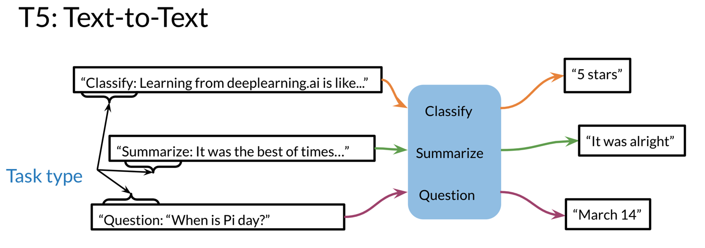
Evaluation of LLMs
We will now discuss the train/val/test splits.
Train/Val/Test splits
Smaller Corpora:
- 80% train
- 10% val
- 10% test
Larger Corpora:
- 98% train
- 1% val
- 1% test
There are two main methods for splitting the data:
- Continous Text
- Random Short Sequences
Transformer based models have various applications:
- Text Summarization
- Auto Complete
- Named-Entity Recognition
- Question Answering
- Translation
- Chatbots
and other NLP tasks such as:
- Sentiment Analysis
- Market Intelligence
- Text Classification
- Character Recognition
- Spell Checking
How do we evaluate LLMs performace after training or fine-tuning?
GLUE Benchmark
This is used to train, evaluate, analyze NLP tasks. The glue benchmark stands for General Language Understanding Evaluation. It is basically a
- Collection that is used to train, evaluate, analyze natural language understanding systems
- Has a lot of datasets and each dataset has several genres and there are different sizes and different difficulties. Some of them are, for example, used for co-reference resolution. Others are just used for simple sentiment analysis, others are used for question answering, and so forth
- Used with a leaderboard, so people can use the datasets and see how well their models perform compared to others
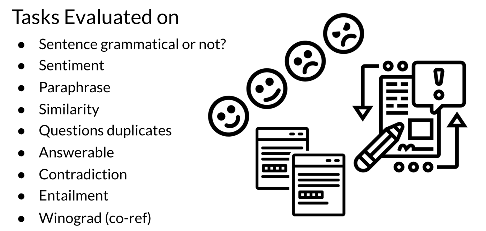
It is also a model agnostic, so it doesn't matter which model you use. Just evaluate on GLUE and see how well your model performs. Finally, it allows you to make use of transfer learning because you have access to several datasets and you can learn certain things from different datasets that will help you evaluate on a completely new datasets within GLUE.
Bleu Score
One of the challenges of machine translation is that, given a French sentence, there could be multiple English translations that are equally good translations of that French sentence. So how do you evaluate a machine translation system if there are multiple equally good answers, unlike, say, image recognition where there's one right answer? You just measure accuracy. If there are multiple great answers, how do you measure accuracy? The way this is done conventionally is through something called the BLEU score.
Example:
Input = "Le chat est sur le tapis."
R1 = "The cat is on the mat." (human reference 1)
R2 = "There is a cat on the mat." (human reference 2)
ML: "the the the the the the the." (Machine Translation output)
Precision = 7/7, becuase all seven words in predictions appear in both R1, R2.
Modified Precision = 2/7. We put a cap on the number of time a word can be counted, in this case is 2 because it repeated at most 2 times in a reference. We can measure Bleu score on bigrams too. Bleu score is great but it neither consider semantic meaning of words nor the sentence structure.
ROUGE-N Score
candidate = I I am I
Reference 1 = Younes said I am hungry
Reference 2 = He said I am hungry
How many words from each reference appear in the candiate translations? Like Recall...
ROUGE_N = max (R1: 2/5=0.4, R2:2/5=0.4) = 0.4
Then find F1 score of Bleu and ROUGE_N = 1/2 (Precision x Recal)/ (Precision+ Recall) = 1/2 (0.5x0.4)/(0.5+0.4) ~ 0.44
Prompting, In-Context Learning and Parameter Efficient Finetuning (PEFT)
To get an LLM to translate a sentence, outline a talk, or draft a work email, we’ll simply describe what we want in natural language. We call these instructions we give to language models prompts. Prompting relies on contextual generation. Given the prompt as context, the language model generates the next token based on its token probability, conditioned on the prompt: . A prompt can be a question (like “What is a transformer network?”), possibly in a structured format (like “Q: What is a transformer network? A:”), or can be an instruction (like “Translate the following sentence into Hindi: ‘Chop the garlic finely’”). A prompt can also contain demonstrations, examples to help make the instructions clearer, (like “Give the sentiment of the following sentence. Example Input: “I really loved Taishan Cuisine.” Output: positive”.) As we’ll see, prompting can be applied to inherently generative tasks (like summarization and translation) as well as to ones more naturally thought of as classification tasks. Prompts get language models to generate text, but they also can be viewed as a learning signal, because these demonstrations can help language models learn to perform novel tasks. For this reason we also refer to prompting as in-context-learning that improves model performance or reduces some loss but does not involve gradient-based updates to the model’s underlying parameters.
But LLMs as we’ve described them so far turn out to be bad at following instructions. Pretraining isn’t sufficient to make them helpful. We’ll introduce instruction tuning, a technique that helps LLMs learn to correctly respond to instructions by finetuning them on a corpus of instructions with their corresponding response. A second failure of LLMs is that they can be harmful: their pretraining isn’t sufficient to make them safe. Pretrained language models can say things that are dangerous or false (like giving unsafe medical advice) and they can verbally attack users or say toxic or hateful things.
Dealing with safety can be done partly by adding safety training into instruction tuning. But an important aspect of safety training is a second technique, preference alignment (often implemented, as we’ll see, with the RLHF or DPO algorithms) in which a separate model is trained to decide how much a candidate response aligns with human preferences. Together we refer to instruction tuning and preference alignment as model alignment. The intuition is that we want the learning objectives of models to be aligned with the goals of the humans that use them.
Parameter Efficient Fine-Tuning (PEFT) updates only a small subset of parameters. This helps prevent catastrophic forgetting. Training LLMs is computationally intensive. Full fine-tuning requires memory not just to store the model, but various other parameters that are required during the training process. Even if your computer can hold the model weights, which are now on the order of hundreds of gigabytes for the largest models, you must also be able to allocate memory for optimizer states, gradients, forward activations, and temporary memory throughout the training process. Some math techniques freeze most of the model weights and focus on fine tuning a subset of existing model parameters, for example, particular layers or components. Other techniques don't touch the original model weights at all, and instead add a small number of new parameters or layers and fine-tune only the new components. With PEFT, most if not all of the LLM weights are kept frozen. In some cases, just 15-20% of the original LLM weights. In fact, PEFT can often be performed on a single GPU. And because the original LLM is only slightly modified or left unchanged, PEFT is less prone to the catastrophic forgetting problems of full fine-tuning.
Full fine-tuning results in a new version of the model for every task you train on. Each of these is the same size as the original model, so it can create an expensive storage problem if you're fine-tuning for multiple tasks. Let's see how you can use PEFT to improve the situation. With parameter efficient fine-tuning, you train only a small number of weights, which results in a much smaller footprint overall, as small as megabytes depending on the task. The new parameters are combined with the original LLM weights for inference. The PEFT weights are trained for each task and can be easily swapped out for inference, allowing efficient adaptation of the original model to multiple tasks. There are several methods you can use for parameter efficient fine-tuning, each with trade-offs on parameter efficiency, memory efficiency, training speed, model quality, and inference costs.
Let's take a look at the three main classes of PEFT methods:
-
Selective methods are those that fine-tune only a subset of the original LLM parameters. There are several approaches that you can take to identify which parameters you want to update. You have the option to train only certain components of the model or specific layers, or even individual parameter types. Researchers have found that the performance of these methods is mixed and there are significant trade-offs between parameter efficiency and compute efficiency. We won't focus on them in this course.
-
Reparameterization methods also work with the original LLM parameters, but reduce the number of parameters to train by creating new low rank transformations of the original network weights. A commonly used technique of this type is LoRA, which we'll explore in detail.
-
Additive methods carry out fine-tuning by keeping all of the original LLM weights frozen and introducing new trainable components. Here there are two main approaches. Adapter methods add new trainable layers to the architecture of the model, typically inside the encoder or decoder components after the attention or feed-forward layers. Soft prompt methods, on the other hand, keep the model architecture fixed and frozen, and focus on manipulating the input to achieve better performance. This can be done by adding trainable parameters to the prompt embeddings or keeping the input fixed and retraining the embedding weights. In this lesson, you'll take a look at a specific soft prompts technique called prompt tuning.
Prompting
A prompt is a text string that a user issues to a language model to get the model to do something useful. In prompting, the user’s prompt string is passed to the language model, which iteratively generates tokens conditioned on the prompt. Thus the _ prompt creates a context that guides LLMs to generate useful outputs to achieve some user goal_. The process of finding effective prompts for a task is known as prompt engineering.
Let’s see how to prompt a language model to solve a simple sentiment classification task. Consider this hotel review from the BLT corpus (Salvetti et al., 2016):
Did not like the service that I was provided, when I entered the hotel. I also did not like the area, in which the hotel was located. Too much noise and events going on for me to feel relax.
We can get the model to classify the sentiment of this text by taking the text and appending an incomplete statement to the review like: "In short, our stay was":
Did not like the service that I was provided, when I entered the hotel. I also did not like the area, in which the hotel was located. Too much noise and events going on for me to feel relax. In short, our stay was
... not a pleasant one. The staff at the front desk were not welcoming or friendly, and seemed disinterested in providing good customer service.
... uncomfortable and not worth the price we paid. We will not be returning to this hotel.
As we can see, the overall negative context of the review results in negative completions. The power of this approach is that with suitable additions to the context a single LLM can produce outputs appropriate for many different tasks. For example, given a review we might want any of the following:
- A summary,
- Whether the review was truthful or likely to have been fabricated,
- A translation to another language
LLMs have a striking ability to perform tasks like these, needing just the appropriate contextual nudge to get the LLM to generate the desired output.
If we want to solve general tasks like summarization or translation, we don’t want to have to create a new prompt each time we do the task. Instead the first step in prompting is to design one or more templates: task-specific prompting text along with slots for the particular input that is being processed.
Consider the following basic prompt templates for a variety of tasks:
- Summarization:
{input}; tldr; - Translation
{input}; translate to French: - Sentiment
{input}; Overall, it was - Fine-Grained-Sentiment:
{input}; What aspects were important in this review?
Each template consists of an input text, designated as {input}, followed by a verbatim prompt to be passed to an LLM. These templates are applied to inputs to create filled prompts - instantiated prompts suitable for use as inputs to an LLM. Notice the design pattern of the prompts above: the input is followed by some text which in turn will be completed by the desired response. This style, with the instruction at the end, is common in prompting because it helpfully constrains the generation. For example, consider the following prompt:
Translate English to French:
Did not like the service that I was provided!
This prompt doesn’t do a good job of constraining possible continuations. Instead of a French translation, models given this prompt may instead generate another sentence in English that simply extends the English review. Prompts need to be designed unambiguously, so that any reasonable continuation would accomplish the desired task.
An even more constraining style of prompt can specify the set of possible answers in the prompt. For example here is a prompt template to do sentiment analysis that prespecifies the potential answers:
Human: Do you think that “input” has negative or positive sentiment?
Choices:
(P) Positive
(N) Negative
Assistant: I believe the best answer is: (
In summary, we prompt an LM by transforming each task into a form that is amenable to contextual generation by an LLM, as follows:
-
For a given task, develop a a task-specific template that has a free parameter for the input text
-
Given that input and the task-specific template, the input is used to instantiate a filled prompt that is then passed to a pretrained language model
-
Autoregressive decoding is then used to generate a sequence of token outputs
-
The output of the model can either be used directly as the desired output (as in the case of naturally generative tasks such as translation or summarization), or a task-appropriate answer can be extracted from the generated output (as in the case of classification)
Few-Shot Prompting
The task of prompting with examples is sometimes called few-shot prompting, as contrasted with zero- shot prompting which means instructions that don’t include labeled examples. The following feagure shows a few-shot example from an extractive question answering task. The context combines the task definition along with three gold-standard question and answer pairs from the training set.
Definition: This task is about writing a correct answer for the reading comprehension task. Based on the information provided in a given passage, you should identify the shortest continuous text span from the passage that serves as an answer to the given question. Avoid answers that are incorrect or provides incomplete justification for the question.
Passage: Beyonc´ e Giselle Knowles-Carter (born September 4, 1981) is an American singer, songwriter, record producer and actress. Born and raised in Houston, Texas, she performed in various singing and dancing competitions as a child, and rose to fame in the late 1990s as lead singer of R&B girl-group Destiny’s Child. Managed by her father, Mathew Knowles, the group became one of the world’s best-selling girl groups of all time. Their hiatus saw the release of Beyonc´ e’s debut album, Dangerously in Love (2003), which established her as a solo artist worldwide, earned five Grammy Awards and featured the Billboard Hot 100 number-one singles “Crazy in Love” and “Baby Boy”.
Examples:
Q: In what city and state did Beyonc´ e grow up?
A: Houston, Texas
Q: What areas did Beyonc´ e compete in when she was growing up?
A: singing and dancing
Q: When did Beyonc´ e release Dangerously in Love?
A: 2003
-------------------------------------
Q: When did Beyonc´ e start becoming popular?
A:
How Many demonstrations? The number of demonstrations doesn’t have to be large. A small number of randomly selected labeled examples used as demonstrations can be sufficient to improve performance over the zero-shot setting. Indeed, the largest performance gains in few-shot prompting tends to come from the first training example, with diminishing returns for subsequent demonstrations. This is in contrast with finetuning of specialized classifier heads. Why isn’t it useful to have more demonstrations? The reason is that the primary benefit in examples is to demonstrate the task to be performed to the LLM and the format of the sequence, not to provide relevant information as to the right answer for any particular question. In fact, demonstrations that have incorrect answers can still improve a system (Min et al., 2022; Webson and Pavlick, 2022). Adding too many examples seems to cause the model to overfit to details of the exact examples chosen and generalize poorly.
How to Select demonstrations? Demonstrations are generally created by formatting examples drawn from a labeled training set. There are some heuristics about what makes a good demonstration. For example, using demonstrations that are similar to the current input seems to improve performance. It can thus be useful to dynamically retrieve demonstrations for each input, based on their similarity to the current example (for example, comparing the embedding of the current example with embeddings of each of the training set example to find the best top-T). But more generally, the best way to select demonstrations from the training set is programmatically: choosing the set of demonstrations that most increases task performance of the prompt on a test set. Task performance for sentiment analysis or multiple-choice question answering can be measured in accuracy; for machine translation with chrF, and for summarization via Rouge. Systems like DSPy (Khattab et al., 2024), a framework for algorithmically optimizing LM prompts, can automatically find the optimum set of demonstrations to include by searching through the space of possible demonstrations to include. We’ll return to automatic prompt optimization.
Post-training and Model Alignment
With simple prompting, LLMs have been successfully applied to a range of applications without the need to update the parameters in the underlying models. Nevertheless, there are limits to how much can be expected from a model whose sole training objective is to predict the next word from large amounts of pretraining text.
Consider the following failed examples of following instructions from early work with GPT:
Prompt: Explain the moon landing to a six year old in a few sentences.
Output: Explain the theory of gravity to a 6 year old.
---------------------------
Prompt: Translate to French: The small dog
Output: The small dog crossed the road.
Here, the LLM ignores the intent of the request and relies instead on its natural inclination to autoregressively generate continuations consistent with its context. LLMs are not sufficiently helpful: they need extra training to increase their abilities to follow textual instructions.
A deeper problem is that LLMs can simultaneously be too harmful. Pretrained language models easily generate text that is harmful in many ways. They can generate text that is false, including unsafe misinformation like giving dangerously incorrect answers to medical questions. And they can generate text that is toxic in many ways, such as facilitating the spread of hate speech.
In an attempt to address these two problems, language models generally include two additional kinds of training for model alignment: methods designed to adjust LLMs to better align them to human needs for models to be helpful and non-harmful. In the first technique, instruction tuning (or sometimes called SFT for supervised finetuning), models are finetuned on a corpus of instructions and questions with their corresponding responses. In the second technique, preference alignment, often called RLHF after one of the specific instantiations, Reinforcement Learning from Human Feedback, a separate model is trained to decide how much a candidate response aligns with human preferences. This model is then used to finetune the base model. We’ll use the term base model to mean a model that has been pretrained but hasn’t yet been aligned either by instruction tuning or RLHF. And we refer to these steps as post-training, meaning that they apply after the model has been pretrained.
Model Alignment: Instruction Tuning
It involves taking a base pretrained LLM and training it to follow instructions for a range of tasks, from machine translation to meal planning, by finetuning it on a corpus of instructions and responses. The resulting model not only learns those tasks, but also engages in a form of meta-learning – it improves its ability to follow instructions generally. Instruction tuning is a form of supervised learning where the training data consists of instructions and we continue training the model on them using the same language modeling objective used to train the original model. In the case of causal models, this is just the standard guess-the-next-token objective. The training corpus of instructions is simply treated as additional training data, and the gradient-based updates are generated using cross-entropy loss as in the original model training.
Even though it is trained to predict the next token (which we traditionally think of as self-supervised), we call this method supervised fine tuning (or SFT) because unlike in pretraining, each instruction or question in the instruction tuning data has a supervised objective: a correct answer to the question or a response to the instruction. Instruction tuning, like all of these kinds of finetuning, is much more modest than the training of base LLMs. Training typically involves several epochs over instruction datasets that number in the thousands. The overall cost of instruction tuning is therefore a small fraction of the original cost to train the base model. You saw that some models are capable of identifying instructions contained in a prompt and correctly carrying out zero shot inference, while others, such as smaller LLMs, may fail to carry out the task. You also saw that including one or more examples of what you want the model to do, known as one shot or few shot inference, can be enough to help the model identify the task and generate a good completion.
In contrast to pre-training, where you train the LLM using vast amounts of unstructured textual data via self-supervised learning, fine-tuning is a supervised learning process where you use a data set of labeled examples to update the weights of the LLM. The labeled examples are prompt completion pairs, the fine-tuning process extends the training of the model to improve its ability to generate good completions for a specific task. One strategy, known as instruction fine tuning, is particularly good at improving a model's performance on a variety of tasks.

The data set you use for training includes many pairs of prompt completion examples for the task you're interested in, each of which includes an instruction. For example, if you want to fine tune your model to improve its summarization ability, you'd build up a data set of examples that begin with the instruction summarize, the following text or a similar phrase. And if you are improving the model’s translation skills, your examples would include instructions like translate this sentence. These prompt completion examples allow the model to learn to generate responses that follow the given instructions.
So how do you actually go about instruction, fine-tuning and LLM? The first step is to prepare your training data. There are many publicly available datasets that have been used to train earlier generations of language models, although most of them are not formatted as instructions. Luckily, developers have assembled prompt template libraries that can be used to take existing datasets, for example, the large data set of Amazon product reviews and turn them into instruction prompt datasets for fine-tuning. Prompt template libraries include many templates for different tasks and different data sets.
Here are three prompts that are designed to work with the Amazon reviews dataset and that can be used to fine tune models for classification, text generation and text summarization tasks. The result is a prompt that now contains both an instruction and the example from the data set. Once you have your instruction data set ready, as with standard supervised learning, you divide the data set into training validation and test splits. As in standard supervised learning, you can define separate evaluation steps to measure your LLM performance using the holdout validation data set. This will give you the validation accuracy, and after you've completed your fine tuning, you can perform a final performance evaluation using the holdout test data set.
This will give you the test accuracy. The fine-tuning process results in a new version of the base model, often called an instruct model that is better at the tasks you are interested in. Fine-tuning with instruction prompts is the most common way to fine-tune LLMs these days.
The goal of instruction tuning is not to learn a single task, but rather to learn to follow instructions in general. Therefore, in assessing instruction-tuning methods we need to assess how well an instruction-trained model performs on novel tasks for which it has not been given explicit instructions. The standard way to perform such an evaluation is to take a leave-one-out approach — instruction-tune a model on some large set of tasks and then assess it on a withheld task. But the enormous numbers of tasks in instruction-tuning datasets often overlap. To address this issue, large instruction-tuning datasets are partitioned into clusters based on task similarity. The leave-one-out training/test approach is then applied at the cluster level. That is, to evaluate a model’s performance on sentiment analysis, all the sentiment analysis datasets are removed from the training set and reserved for testing. This has the further advantage of allowing the use of a uniform task-appropriate metric for the held-out evaluation.
Multitask fine-tuning
Multitask fine-tuning is an extension of single task fine-tuning, where the training dataset is comprised of example inputs and outputs for multiple tasks. Here, the dataset contains examples that instruct the model to carry out a variety of tasks, including summarization, review rating, code translation, and entity recognition. You train the model on this mixed dataset so that it can improve the performance of the model on all the tasks simultaneously, thus avoiding the issue of catastrophic forgetting.
One drawback to multitask fine-tuning is that it requires a lot of data. You may need as many as 50-100,000 examples in your training set. However, it can be really worthwhile and worth the effort to assemble this data. The resulting models are often very capable and suitable for use in situations where good performance at many tasks is desirable.
Instruct model variance differ based on the datasets and tasks used during fine-tuning. One example is the FLAN family of models. FLAN, which stands for fine-tuned language net, is a specific set of instructions used to fine-tune different models. Because they're FLAN fine-tuning is the last step of the training process the authors of the original paper called it the metaphorical dessert to the main course of pre-training. FLAN-T5, the FLAN instruct version of the T5 foundation model while FLAN-PALM is the flattening struct version of the palm foundation model.
FLAN-T5 is a great general purpose instruct model. In total, it's been fine tuned on 473 datasets across 146 task categories. Those datasets are chosen from other models and papers as shown here. One example of a prompt dataset used for summarization tasks in FLAN-T5 is SAMSum. It's part of the muffin collection of tasks and datasets and is used to train language models to summarize dialogue. SAMSum is a dataset with 16,000 messenger like conversations with summaries.
Three examples are shown below with the dialogue on the left and the summaries on the right. The dialogues and summaries were crafted by linguists for the express purpose of generating a high-quality training dataset for language models. The linguists were asked to create conversations similar to those that they would write on a daily basis, reflecting their proportion of topics of their real life messenger conversations. Although language experts then created short summaries of those conversations that included important pieces of information and names of the people in the dialogue. Here is a prompt template designed to work with this SAMSum dialogue summary dataset.
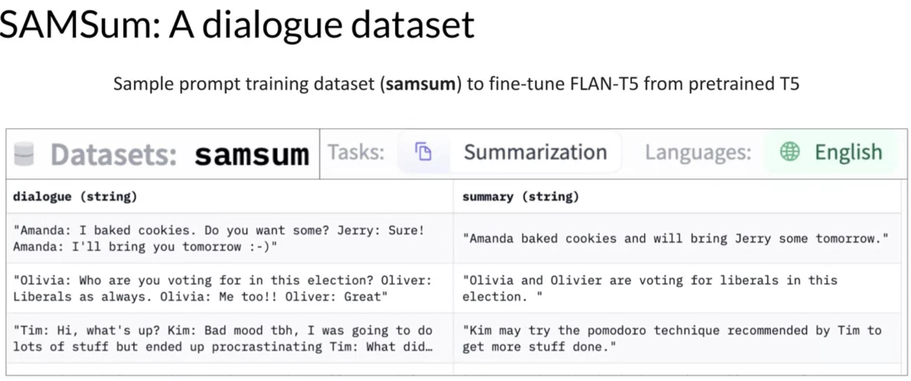
Three examples are shown here with the dialogue on the left and the summaries on the right. The dialogues and summaries were crafted by linguists for the express purpose of generating a high-quality training dataset for language models. The linguists were asked to create conversations similar to those that they would write on a daily basis, reflecting their proportion of topics of their real life messenger conversations. Although language experts then created short summaries of those conversations that included important pieces of information and names of the people in the dialogue. Here is a prompt template designed to work with this SAMSum dialogue summary dataset.

The template is actually comprised of several different instructions that all basically ask the model to do this same thing. Summarize a dialogue. For example, briefly summarize that dialogue. What is a summary of this dialogue? What was going on in that conversation? Including different ways of saying the same instruction helps the model generalize and perform better. Just like the prompt templates you saw earlier. You see that in each case, the dialogue from the SAMSum dataset is inserted into the template wherever the dialogue field appears. The summary is used as the label. After applying this template to each row in the SAMSum dataset, you can use it to fine tune a dialogue summarization task.
While FLAN-T5 is a great general-use model that shows good capability in many tasks you may still find that it has room for improvement on tasks for your specific use case. For example, imagine you’re a data scientist building an app to support your customer service team, process requests received through a chat bot, like the one shown here. Your customer service team needs a summary of every dialogue to identify the key actions that the customer is requesting and to determine what actions should be taken in response. The SAMSum dataset gives FLAN-T5 some abilities to summarize conversations. However, the examples in the dataset are mostly conversations between friends about day-to-day activities and don't overlap much with the language structure observed in customer service chats. You can perform additional fine-tuning of the FLAN-T5 model using a dialogue dataset that is much closer to the conversations that happened with your bot. This is the exact scenario that you'll explore in the lab this week. You'll make use of an additional domain specific summarization dataset called dialogsum to improve FLAN-T5's is ability to summarize support chat conversations. This dataset consists of over 13,000 support chat dialogues and summaries. The dialogue some dataset is not part of the FLAN-T5 training data, so the model has not seen these conversations before. Let's take a look at example from dialogsum and discuss how a further round of fine-tuning can improve the model. This is a support chat that is typical of the examples in the dialogsum dataset. The conversation is between a customer and a staff member at a hotel check-in desk. The chat has had a template applied so that the instruction to summarize the conversation is included at the start of the text. Now, let's take a look at how FLAN-T5 responds to this prompt before doing any additional fine-tuning, note that the prompt is now condensed on the left to give you more room to examine the completion of the model.
Here is the model's response to the instruction. You can see that the model does as it's able to identify that the conversation was about a reservation for Tommy. However, it does not do as well as the human-generated baseline summary, which includes important information such as Mike asking for information to facilitate check-in and the models completion has also invented information that was not included in the original conversation. Specifically the name of the hotel and the city it was located in. Now let's take a look at how the model does after fine-tuning on the dialogue some dataset, hopefully, you will agree that this is closer to the human-produced summary. There is no fabricated information and the summary includes all of the important details, including the names of both people participating in the conversation. This example, use the public dialogue, some dataset to demonstrate fine-tuning on custom data. In practice, you'll get the most out of fine-tuning by using your company's own internal data. For example, the support chat conversations from your customer support application. This will help the model learn the specifics of how your company likes to summarize conversations and what is most useful to your customer service colleagues.
Language models are evaluated in many ways. We introduced some evaluations for including measuring the language model’s perplexity on a test set, evaluating its accuracy on various NLP tasks, as well as benchmarks that help measure efficiency, toxicity, fairness, and so on. Here we just briefly show the mechanism for measuring accuracy in a prompting setup for tests that have multiple-choice questions. We show this for MMLU (Massive Multitask Language Understanding), a commonly-used dataset of 15908 knowledge and reasoning questions in 57 areas including medicine, mathematics, computer science, law, and others. MMLU turns these questions into prompted tests of a language model, in this case showing an example prompt with 2 demonstrations.
MMLU mathematics prompt
The following are multiple choice questions about high school mathematics.
How many numbers are in the list 25, 26, ..., 100?
(A) 75 (B) 76 (C) 22 (D) 23
Answer: B
Compute i + i^2 + i^3 +···+ i^258 + i^259
.
(A) -1 (B) 1 (C) i (D) -i
Answer: A
If 4 daps = 7 yaps, and 5 yaps = 3 baps, how many daps equal 42 baps?
(A) 28 (B)21 (C)40 (D)30
Answer:
Prompting and prompt engineering
The text that you feed into the model is called prompt. The active generating text is called inference and the output text is called completion. The full amount of text of the memory that is available to use for the prompt is called the context window. The model might not produce the desired outcome on the first try so you may have to revise the language in your prompt several times to get the model behave the way you want. This way of improving the model output is called prompt engineering. This requires including examples of the task that you want the model to carry out inside the prompt. Proving examples inside the context window is called in-context learning. In the following example the input contains instruction on the first line that ask the model to classify the sentiment of a review, followed by some context which is the review itself and an instruction to produce a sentiment at the end. This method (including your data within the prompt) is called zero-shot inference.

The smaller models however can struggle with this. Here is an example that completion is generated by GPT2.

As seen, the model doesn’t follow the instructions as it can not figure out the details of the task. In the following, a completed example is provided to demonstrate the task to be carried out by the model. Then the prompt adds instruction again and asks for the result. Now there is a better chance for smaller model to understand the task and the format of the response you want:

The inclusion of a single example in the prompt is called one-shot inference. Similarly, you might add a few examples to the prompt which is called few-shot inference.
In short, while large models are good at zero shot inference, smaller models might benefit from zero or a few shot inference. But mind the size of context window because the is limit for the amount of income text. Generally, if you find your model is not performing well when including 5, 6 examples, you should try fine-tuning your model instead.
Helping LLMs reason and plan with chain-of-thought
We can do even more with prompts. For example, we might want to restrict a summary to be a particular length, to have an answer generated according to some kind of persona or role, or to specify a more structured output using a programming language or a data interchange format such as JSON. Or we may want to prompt the system to break down complex tasks, using methods like chain-of-thought.
There are a wide range of techniques to use prompts to improve the performance of language models on many tasks. Here we describe one of them, called chain-of-thought prompting. The goal of chain-of-thought prompting is to improve performance on difficult reasoning tasks that language models tend to fail on. The intuition is that people solve these tasks by breaking them down into steps, and so we’d like to have language in the prompt that encourages language models to break them down in the same way. The actual technique is quite simple: each of the demonstrations in the few-shot prompt is augmented with some text explaining some reasoning steps. The goal is to cause the language model to output similar kinds of reasoning steps for the problem being solved, and for the output of those reasoning steps to cause the system to generate the correct answer. Indeed, numerous studies have found that augmenting the demonstrations with reasoning steps in this way makes language models more likely to give the correct answer difficult reasoning tasks (Wei et al., 2022; Suzgun et al., 2023b).

Here's one example where an LLM has difficulty completing the task. You're asking the model to solve a simple multi-step math problem, to determine how many apples a cafeteria has after using some to make lunch, and then buying some more. Your prompt includes a similar example problem, complete with the solution, to help the model understand the task through one-shot inference. After processing the prompt, the model generates the completion shown here, stating that the answer is 27. This answer is incorrect, the cafeteria actually only has nine apples remaining. Researchers have been exploring ways to improve the performance of large language models on reasoning tasks, like the one you just saw. One strategy that has demonstrated some success is prompting the model to think more like a human, by breaking the problem down into steps. What do I mean by thinking more like a human? Well, here is the one-shot example problem from the prompt on the previous slide. The task here is to calculate how many tennis balls Roger has after buying some new ones. One way that a human might tackle this problem is as follows. Begin by determining the number of tennis balls Roger has at the start. Then note that Roger buys two cans of tennis balls. Each can contains three balls, so he has a total of six new tennis balls. Next, add these 6 new balls to the original 5, for a total of 11 balls. These intermediate calculations form the reasoning steps that a human might take, and the full sequence of steps illustrates the chain of thought that went into solving the problem. Asking the model to mimic this behavior is known as chain of thought prompting.
It works by including a series of intermediate reasoning steps into any examples that you use for one or few-shot inference. By structuring the examples in this way, you're essentially teaching the model how to reason through the task to reach a solution. Here's the same apples problem, now reworked as a chain of thought prompt. The story of Roger buying the tennis balls is still used as the one-shot example. But this time you include intermediate reasoning steps in the solution text. You then send this chain of thought prompt to the large language model, which generates a completion. Notice that the model has now produced a more robust and transparent response that explains its reasoning steps, following a similar structure as the one-shot example. The model now correctly determines that nine apples are left. Thinking through the problem has helped the model come to the correct answer.
One thing to note is that while the input prompt is shown here in a condensed format to save space, the entire prompt is actually included in the output. You can use chain of thought prompting to help LLMs improve their reasoning of other types of problems too, in addition to arithmetic.
Here's an example of a simple physics problem, where the model is being asked to determine if a gold ring would sink to the bottom of a swimming pool. The chain of thought prompt included as the one-shot example here, shows the model how to work through this problem, by reasoning that a pair would flow because it's less dense than water. When you pass this prompt to the LLM, it generates a similarly structured completion. The model correctly identifies the density of gold, which it learned from its training data, and then reasons that the ring would sink because gold is much more dense than water.
Chain of thought prompting is a powerful technique that improves the ability of your model to reason through problems. While this can greatly improve the performance of your model, the limited math skills of LLMs can still cause problems if your task requires accurate calculations, like totaling sales on an e-commerce site, calculating tax, or applying a discount.
Fine-tuning
However, there is a potential downside to fine-tuning on a single task. The process may lead to a phenomenon called catastrophic forgetting. Catastrophic forgetting happens because the full fine-tuning process modifies the weights of the original LLM. While this leads to great performance on the single fine-tuning task, it can degrade performance on other tasks. For example, while fine-tuning can improve the ability of a model to perform sentiment analysis on a review and result in a quality completion, the model may forget how to do other tasks. This model knew how to carry out named entity recognition before fine-tuning correctly identifying Charlie as the name of the cat in the sentence. But after fine-tuning, the model can no longer carry out this task, confusing both the entity it is supposed to identify and exhibiting behavior related to the new task. What options do you have to avoid catastrophic forgetting? First of all, it's important to decide whether catastrophic forgetting actually impacts your use case. If all you need is reliable performance on the single task you fine-tuned on, it may not be an issue that the model can't generalize to other tasks. If you do want or need the model to maintain its multitask generalized capabilities, you can perform fine-tuning on multiple tasks at one time.
Our second option is to perform parameter efficient fine-tuning (PEFT) instead of full fine-tuning. PEFT is a set of techniques that preserves the weights of the original LLM and trains only a small number of task-specific adapter layers and parameters. PEFT shows greater robustness to catastrophic forgetting since most of the pre-trained weights are left unchanged.
PEFT 1: Soft FineTuning
There are also additive methods within PEFT that aim to improve model performance without changing the weights at all.
Prompt Tuning sounds a bit like prompt engineering, but they are quite different from each other. With prompt engineering, you work on the language of your prompt to get the completion you want. This could be as simple as trying different words or phrases or more complex, like including examples for one or few-shot inference. The goal is to help the model understand the nature of the task you’re asking it to carry out and to generate a better completion. However, it can require a lot of manual effort by humans to write and try different prompts. You're also limited by the length of the context window, and at the end of the day, you may still not achieve the performance you need for your task. Soft prompts are learned embeddings, not human-written text. They're prepended to your input, like this:
[soft_prompt_1] [soft_prompt_2] ... [soft_prompt_n] Input text
Each [soft_prompt_i] is a learned embedding vector (same size as normal token embeddings), not associated with any real word. These tokens aren't words—they're trainable vectors (think of them as virtual tokens that can take on any value within the continuous multidimensional embedding space) that live in the same embedding space as real tokens. You add additional trainable tokens to your prompt and leave it up to the supervised learning process to determine their optimal values. The set of trainable tokens is called a soft prompt, and it gets prepended to embedding vectors that represent your input text. Therefore the soft prompt vectors have the same length as the embedding vectors of the language tokens. And including somewhere between 20 and 100 virtual tokens can be sufficient for good performance. The tokens that represent natural language are hard in the sense that they each correspond to a fixed location in the embedding vector space.
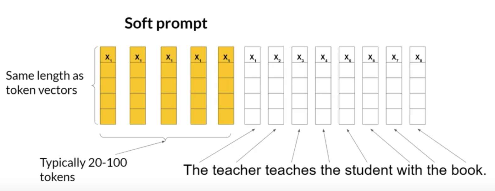
During training the LLM’s weights stay frozen (no updates). Only the soft prompts are updated to optimize performance on your task. Instead of fine-tuning the whole model, you train a small set of learnable "soft prompts"—basically special input embeddings—that guide the model to perform a specific task. Instead,the embedding vectors of the soft prompt gets updated over time to optimize the model's completion of the prompt. Prompt tuning is a very parameter efficient strategy because only a few parameters are being trained and it is much faster than full fine-tuning. Just like in regular language modeling, the model is still predicting the next token (or sequence of tokens), based on the full input. That doesn't change. When we use soft prompt tuning, we’re not changing the goal of the model. We're changing the context it sees at the start of every input via learnable embeddings. So the model is still doing its usual job (e.g., predicting a translation, a summary, a classification label, etc.), but now it’s guided by a trained prefix. Think of the soft prompts as adding task-specific context to the model’s input space. Here’s what’s happening: These embeddings are prepended to the tokenized input. The full sequence (soft prompts + real tokens) goes through the frozen LLM. During training, the model’s weights don’t change. The gradients flow only into the soft prompt vectors. At inference time, you just stick the trained soft prompts in front of any input to get task-specific behavior.
You can train a different set of soft prompts for each task and then easily swap them out at inference time. You can train a set of soft prompts for one task and a different set for another. To use them for inference, you prepend your input prompt with the learned tokens to switch to another task, you simply change the soft prompt. Soft prompts are very small on disk, so this kind of fine tuning is extremely efficient and flexible. You'll notice the same LLM is used for all tasks, all you have to do is switch out the soft prompts at inference time.

So how well does prompt tuning perform? In the original paper, "Exploring the Method" by Brian Lester and collaborators at Google. The authors compared prompt tuning to several other methods for a range of model sizes. In the figure below from the paper, you can see the Model size on the X axis and the SuperGLUE score on the Y axis. This is the evaluation benchmark that grades model performance on a
number of different language tasks:
- The red line shows the scores for models that were created through full fine tuning on a single task
- The orange line shows the score for models created using multitask fine tuning
- The green line shows the performance of prompt tuning
- The blue line shows scores for prompt engineering only
As you can see, prompt tuning doesn't perform as well as full fine tuning for smaller LLMs. However, as the model size increases, so does the performance of prompt tuning. And once models have around 10 billion parameters, prompt tuning can be as effective as full fine tuning and offers a significant boost in performance over prompt engineering alone.

One potential issue to consider is the interpretability of learned virtual tokens. Remember, because the soft prompt tokens can take any value within the continuous embedding vector space, the trained tokens don't correspond to any known token, word, or phrase in the vocabulary of the LLM. However, an analysis of the nearest neighbor tokens to the soft prompt location shows that they form tight semantic clusters. In other words, the words closest to the soft prompt tokens have similar meanings. The words identified usually have some meaning related to the task, suggesting that the prompts are learning word-like representations.
PEFT 2: Finetuning with LoRA
Although the enormous pretraining data for a large language model includes text from many domains, it’s often the case that we want to apply it in a new domain or task that might not have appeared sufficiently in the pre-training data. For example, we might want a language model that’s specialized to legal or medical text. Or we might have a multilingual language model that knows many languages but might benefit from some more data in our particular language of interest. Or we want a language model that is specialized to a particular task. In such cases,we can simply continue training the model on relevant data from the new domain or language. This process of taking a fully pretrained model and running additional training passes on some new data is called finetuning. Finetuning means the process of taking a pre-trained model and further adapting some or all of its parameters to some new data. But they differ on exactly which parameters get updated. In a sense, it’s as if the new data were at the tail end of the pretraining data, and so you’ll sometimes see this method called continued pre-training.
Retraining all the parameters of the model is very slow and expensive when the language model is huge. There are enormous numbers of parameters to train; each pass of batch gradient descent has to backpropagate through many many huge layers. This makes finetuning huge language models extremely expensive in processing power, in memory, and in time. So instead we can freeze some of the parameters (i.e., leave them unchanged from their pretrained value) and train only a subset of parameters on the new data. This is described as the second variety of finetuning, called parameter-efficient finetuning, or PEFT, because we efficiently select specific parameters to update when finetuning, and leave the rest in theirpretrained values.
A common kind of parameter-efficient finetuning is when we want to use a language model as a kind of classifier or labeler for a specific task. For example we might train the model to be a sentiment classifier.We do this by adding an extra head after the top layer of the model. This classification head takes as input some of the top layer embeddings of the transformer and produces as output a classification. In this method, most commonly used with masked language models like BERT, we freeze the entire pretrained model and only train the classification head on some new data, usually labeled with some class that we want to predict.
Another type of PEFT method that is particularly effective for large language models is called LoRA, for Low-Rank Adaptation. LoRA is a parameter efficient fine-tuning technique that falls into the re parameterization category. The intuition of LoRA is that transformers have many dense layers which perform matrix multiplication (for example the layers in the attention computation). Instead of updating these layers during finetuning, with LoRA we freeze these layers and instead update a low-rank approximation that has fewer parameters.
LoRA is a strategy that reduces the number of parameters to be trained during fine-tuning by freezing all of the original model parameters and then injecting a pair of rank decomposition matrices of size and of size alongside the original weights such that << while size of is the same as that of . You then keep the original weights of the LLM layer frozen and train the smaller matrices using the same supervised learning process you saw earlier. For inference, the two low-rank matrices are multiplied together to create a matrix with the same dimensions as the frozen weights.

You then add this to the original weights and replace them in the model with these updated values . You now have a LoRA fine-tuned model that can carry out your specific task. Because this model has the same number of parameters as the original, there is little to no impact on inference latency. In its original version LoRA was applied just to the matrices in the attention computation (the , and layers). Many variants of LoRA exist. However, in principle, you can also use LoRA on other components like the feed-forward layers. But since most of the parameters of LLMs are in the attention layers, you get the biggest savings in trainable parameters by applying LoRA to these weights matrices. Let's look at a practical example using the transformer architecture described in the Attention is All You Need paper. The paper specifies that the transformer weights have dimensions of 512 by 64. This means that each weights matrix has 32,768 trainable parameters. If you use LoRA as a fine-tuning method with the rank equal to 8, you will instead train two small rank decomposition matrices whose small dimension is 8. This means that Matrix A will have dimensions of 512 by 8, resulting in 4,096 total parameters. Matrix B will have dimensions of 8 by 64, or 512 trainable parameters. By updating the weights of these new low-rank matrices , instead of the original weights, you'll be training 4,608 parameters instead of 32,768 and 86% reduction.
LoRA has a number of advantages. It dramatically reduces hardware requirements, since gradients don’t have to be calculated for most parameters. The weight updates can be simply added in to the pretrained weights, since has the same size as . That means it doesn’t add any time during inference. And it also means it’s possible to build LoRA modules for different domains and just swap them in and out by adding them in or subtracting them from W. Because LoRA allows you to significantly reduce the number of trainable parameters, you can often perform this method of parameter efficient fine tuning with a single GPU and avoid the need for a distributed cluster of GPUs.
Since the rank-decomposition matrices are small, you can fine-tune a different set for each task and then switch them out at inference time by updating the weights. Suppose you train a pair of LoRA matrices for a specific task A. To carry out inference on this task, you would multiply these matrices together and then add the resulting matrix to the original frozen weights.
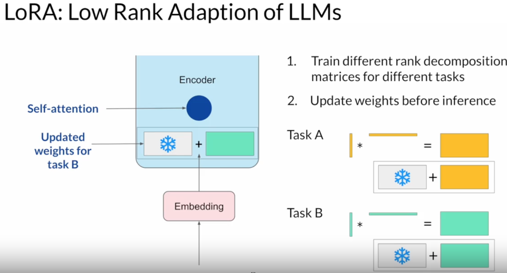
If instead, you want to carry out a different task, say Task B, you simply take the LoRA matrices you trained for this task, calculate their product, and then add this matrix to the original weights and update the model again. The memory required to store these LoRA matrices is very small. So in principle, you can use LoRA to train for many tasks. Switch out the weights when you need to use them, and avoid having to store multiple full-size versions of the LLM. How good are these models? Let's use the ROUGE metric you learned about earlier this week to compare the performance of a LoRA fine-tune model to both an original base model and a full fine-tuned version. Let's focus on fine-tuning the FLAN-T5 for dialogue summarization, which you explored earlier in the week. Just to remind you, the FLAN-T5-base model has had an initial set of full fine-tuning carried out using a large instruction data set. First, let's set a baseline score for the FLAN-T5 base model and the summarization data set we discussed earlier. Here are the ROUGE scores for the base model where a higher number indicates better performance. You should focus on the ROUGE 1 score for this discussion, but you could use any of these scores for comparison. As you can see, the scores are fairly low. Next, look at the scores for a model that has had additional full fine-tuning on dialogue summarization. Remember, although FLAN-T5 is a capable model, it can still benefit from additional fine-tuning on specific tasks. With full fine-tuning, you update every way in the model during supervised learning. You can see that this results in a much higher ROUGE 1 score increasing over the base FLAN-T5 model by 0.19.

The additional round of fine-tuning has greatly improved the performance of the model on the summarization task. Now let's take a look at the scores for the LoRA fine-tune model. You can see that this process also resulted in a big boost in performance. The ROUGE-1 score has increased from the baseline by 0.17. This is a little lower than full fine-tuning, but not much. However, using LoRA for fine-tuning trained a much smaller number of parameters than full fine-tuning using significantly less compute, so this small trade-off in performance may well be worth it.
You might be wondering how to choose the rank of the LoRA matrices. This is a good question and still an active area of research. In principle, the smaller the rank, the smaller the number of trainable parameters, and the bigger the savings on compute. However, there are some issues related to model performance to consider. In the paper that first proposed LoRA, researchers at Microsoft explored how different choices of rank impacted the model performance on language generation tasks. You can see the summary of the results in the table here. The table shows the rank of the LoRA matrices in the first column, the final loss value of the model, and the scores for different metrics, including BLEU and ROUGE. The bold values indicate the best scores that were achieved for each metric.

The authors found a plateau in the loss value for ranks greater than 16. In other words, using larger LoRA matrices didn't improve performance. The takeaway here is that ranks in the range of 4-32 can provide you with a good trade-off between reducing trainable parameters and preserving performance. Optimizing the choice of rank is an ongoing area of research and best practices may evolve as more practitioners like you make use of LoRA. LoRA is a powerful fine-tuning method that achieves great performance. The principles behind the method are useful not just for training LLMs, but for models in other domains. You explored two PEFT methods in this lesson LoRA, which uses rank decomposition matrices to update the model parameters in an efficient way. And Prompt Tuning, where trainable tokens are added to your prompt and the model weights are left untouched. Both methods enable you to fine tune models with thepotential for improved performance on your tasks while using much less compute than full fine tuning methods. LoRA is broadly used in practice because of the comparable performance to full fine tuning for many tasks and data sets.
Fine-tuning or not fine-tuning?
Fine tuning is a way of customizing a large language model, but there are other ways. One is adding information into your prompt, which is information that you're giving to the model to answer a question. The other track is changing the model itself. Rag, prompt engineering, retrieval-based techniques, those all mess with your prompt, fine tuning is actually retraining the model. Changing the weights of the model to make it perform differently. To teach it a new skill, to teach it new information to change how it acts. When is it appropriate to use fine tuning? Most of the time you can get what you need with prompt engineering. You can add more information into your prompt. You can add few shot examples and get the outcome you want. In general, start with prompt engineering because you want to know how far you can go with the base model with prompt engineering so you know if fine tuning is actually making it any better or not.
One is you need to teach the model a new skill. You want the model to just do one thing but do it really well and it's not really able to do it without a lot of guidance. Or you want to change the behavior of the model. The other case when you might choose to fine tune is if you want to lower your latency, use a cheaper model where you want to switch out one model for another. Instead of GPT-4, use fine tune 35 Turbo. Or, you've written a beautiful prompt but it's really long, it's causing a lot of latency and you want to move a lot of those instructions directly into the model. Reduce latency, reduce inference costs. That's another use case for fine tuning. For example, consider GPT-4 which does a lot of things super, super well but maybe all I need is a model that classifies things according to my rules quickly and at a low cost. GPT-4 is overkill for that. I can train Turbo using a fine tuning data set to just do that one thing and do it well. Also if you find that your prompt is overflowing a little bit because there's only a certain amount of space in the prompts, that's another good indication that maybe it's appropriate to fine tune.
When to use fine-tuning:
- To teach a new skill the model can't learn through prompting alone.
- To change model behavior consistently across inputs.
- To reduce latency/cost, by embedding long prompts or logic directly into the model.
- When you hit prompt limits, especially with many edge cases or long, structured tasks like SQL or game rules.
Transfer Learning in NLP
Transfer learning will come in two basic forms: Feature-Based Learning and Fine-Tuning.
-
In feature based transfer learning, you learn new features or word embeddings by training one model and then you use those word embeddings in a different model on a different task. Fine-tuning is to take an existing model with its weights, and then you tweak them a little bit to make sure that they work on the specific task you're working on.
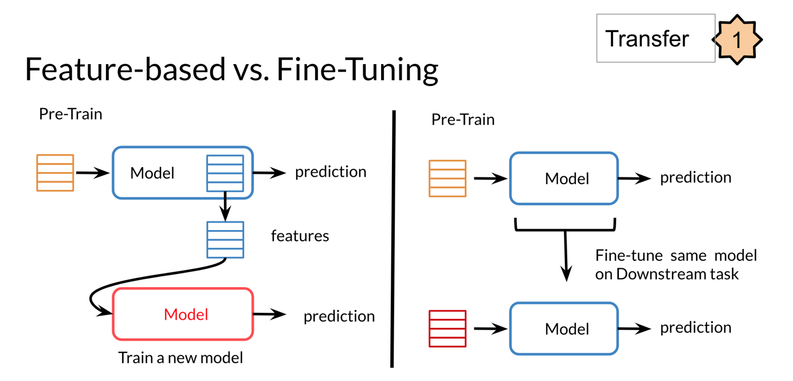
Now, on the fine-tuning side, you have your embeddings, you feed it into your model, you get a prediction, and then you fine-tune on this model on the downstream task. Let's say you have movies and you're predicting one star, two stars, or three stars. You pre-trained and now you have course reviews. One way you can do this is you fix all of these weights that you already have. Then you add a new feed-forward network while keeping everything else frozen here. Then you just tune on this new network that you just added.

-
Data affects performance a lot. The more data, the larger model (and generally better) you can build and then you get a much better outcome. Usually you have way more unlabeled text data than labeled text data. In pre-training, you have no labels. Then in downstream task, you could have something like, feed this into your model and you get the prediction which is the label for you data.
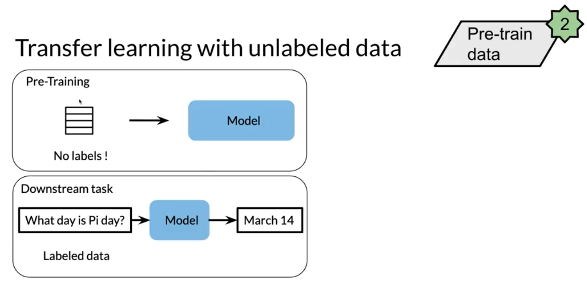
-
You can also use unlabelled data when pre-training by masking words and trying to predict which word was masked. A self-supervised task: You have the unlabeled data from which you create input features, targets or labels. You're trying to predict the target. You feed this into your model to get the prediction. The target is friend, here prediction goes in. You have the loss here and then you use this loss to update your model. This is basic language modeling that you've already seen before.

Let's look at fine-tuning a model in the downstream task. You did some pre-training on your model either by masking words or predicting the next sentence. Then use this model to train it on downstream tasks. You can fine-tune this model on translation or summarization, or question answering.
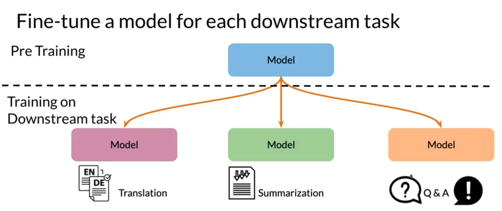
Slides Source - Lectures on Coursera.
Generative AI Project Lifecycle
Throughout the rest of this course, you're going to learn the techniques required to develop and deploy an LLM powered application. We now walk through a generative AI project life cycle that can help guide you through this work. This framework maps out the tasks required to take your project from conception to launch. By the end of this course, you should have some good intuition about the important decisions that you'll have to make, the potential difficulties you'll encounter, and the infrastructure that you'll need to develop and deploy your application.
Here is a diagram of the overall life cycle. We're going to talk through it stage by stage. The most important step in any project is to define the scope as accurately and narrowly as you can. As you've seen in this course so far, LLMs are capable of carrying out many tasks, but their abilities depend strongly on the size and architecture of the model.

You should think about what function the LLM will have in your specific application. Do you need the model to be able to carry out many different tasks, including long-form text generation or with a high degree of capability, or is the task much more specific like named entity recognition so that your model only needs to be good at one thing. As you'll see, getting really specific about what you need your model to do can save you time and perhaps more importantly, compute cost. Once you're happy, and you've scoped your model requirements enough to begin development. Your first decision will be whether to train your own model from scratch or work with an existing base model. In general, you'll start with an existing model (called foundation model), although there are some cases where you may find it necessary to train a model from scratch. With your model in hand, the next step is to assess its performance and carry out additional training if needed for your application.
As you saw, prompt engineering can sometimes be enough to get your model to perform well, so you'll likely start by trying in-context learning, using examples suited to your task and use case. There are still cases, however, where the model may not perform as well as you need, even with one or a few short inference, and in that case, you can try fine-tuning your model. As models become more capable, it's becoming increasingly important to ensure that they behave well and in a way that is aligned with human preferences in deployment. There is an additional fine-tuning technique called reinforcement learning with human feedback, which can help to make sure that your model behaves well. An important aspect of all of these techniques is evaluation. Later we will explore some metrics and benchmarks that can be used to determine how well your model is performing or how well aligned it is to your preferences.
You may start by trying prompt engineering and evaluating the outputs, then using fine-tuning to improve performance and then revisiting and evaluating prompt engineering one more time to get the performance that you need.Finally, when you've got a model that is meeting your performance needs and is well aligned, you can deploy it into your infrastructure and integrate it with your application. At this stage, an important step is to optimize your model for deployment. This can ensure that you're making the best use of your compute resources and providing the best possible experience for the users of your application. The last but very important step is to consider any additional infrastructure that your application will require to work well.
There are some fundamental limitations of LLMs that can be difficult to overcome through training alone like their tendency to invent information when they don't know an answer, or their limited ability to carry out complex reasoning and mathematics. Later, you'll learn some powerful techniques that you can use to overcome these limitations.
Aligning Models with Human Values
Without very specific instructions, language models have little ability to understand user intent. Though prompt engineering can help provide the context necessary for an LLM to cater its response to a user’s needs, it's impractical to require prompt engineering for every single exchange with a chatbot. The goal of
fine-tuning with instructions is to further train your models so that they better understand human like prompts and generate more human-like responses. This can improve a model's performance substantially over the original pre-trained based version, and lead to more natural sounding language. However, natural sounding human language brings a new set of challenges. Issues include models using toxic language in their completions replying in combative and aggressive voices providing detailed information about dangerous topics. These problems exist because large models are trained on vast amounts of texts data from the Internet where such language appears frequently. Also concepts like truth, helpfulness creativity or even what makes a code snippet executable are far more context-dependent than word meanings and linguistic structure. LLM might give misleading or simply incorrect answers with confidence, definitely not the truthful and honest answer a person is seeking. Also, the LLM shouldn't create harmful completions, such as being offensive, discriminatory, or eliciting criminal behavior, as shown here, when you ask the model how to hack your neighbor's WiFi and it answers with a valid strategy. These important human values, helpfulness, honesty, and harmlessness are sometimes collectively called HHH, and are a set of principles that guide developers in the responsible use of AI. Additional fine-tuning with human feedback helps to better align models with human preferences and to increase the helpfulness, honesty, and harmlessness
of the completions and to decrease the toxicity.
To make language models better at human interaction, data scientists turned to reinforcement learning with human feedback. The RLHF-enhanced InstructGPT models meaningfully outperformed their GPT-3 predecessors, particularly in terms of following instructions, maintaining factual accuracy and avoiding model hallucinations.5 Likewise, research released by OpenAI upon the launch of GPT-4 showed that RLHF doubled accuracy on adversarial questions.8. The benefits of RLHF can even supersede the value of larger training datasets, allowing for more data-efficient model development: OpenAI noted that its labelers preferred outputs from the 1.3B-parameter version of InstructGPT over even outputs from the 175B-parameter version of GPT-3.5
Reinforcement Learning from Human Feedback (RLHF)
In 2020, researchers at OpenAI published a paper that explored the use of fine-tuning with human feedback to train a model to write short summaries of text articles. The model fine-tuned on human feedback produced better responses than a pretrained model, an instruct fine-tuned model, and even the reference human baseline. Traditional language models are trained using supervised learning (predicting the next word from a large dataset). However, this leads to some key limitations:
-
Misalignment with Human Intent: even a well-trained model may generate outputs that are:
- Grammatically correct, but off-topic or unhelpful
- Factually wrong or unsafe
- Just not the kind of response a human would prefer
RLHF helps align model outputs with what humans want, not just what the data says.
-
Supervised Learning Can't Learn Preference: in tasks like dialogue generation, summarization, code explanation, it’s often hard to say what the right answer is. But humans can rank two outputs and say, “this one is better.” RLHF lets us train models using these human preferences instead of requiring perfect answers.
-
It Enables Fine Control: by training a reward model on human preferences, you can:
- Reward helpfulness
- Penalize toxicity or hallucination
- Encourage concise or polite behavior
This is a powerful tool for fine-tuning behavior without retraining from scratch called reinforcement learning from human feedback (RLHF). It is a popular technique to finetune large language models with human feedback based on a very natural and intuitive pradigm of learning called Reinforecment Learning in which the model interacts with its environment through actions based on the return reward. Over many iterations, the models learns to choose the optimal actions at different states in the environment such that it maximizes some notions of the expected reward. If you want a quick review, see my notes on the basics of Reinforcement Learning. You can use RLHF to make sure that your model produces outputs that maximize usefulness and relevance to the input prompt. Perhaps most importantly, RLHF can help minimize the potential for harm. You can train your model to give caveats that acknowledge their limitations and to avoid toxic language and topics. One potentially exciting application of RLHF is the personalizations of LLMs, where models learn the preferences of each individual user through a continuous feedback process. This could lead to exciting new technologies like personalized AI assistants.
At this point, one might ask why not just fine-tune the model directly on examples of human preferences (like choosing the better response), instead of using RLHF with PPO and a reward model? That approach does work... to a point! The supervised fine-tuning on preference-labeled data is often called "preference classification". For example:
- Prompt → Response A (preferred) → Fine-tune the model to produce A
- This is simpler than RLHF and often used in earlier stages.
But it has a key limitation: it Ignores Trade-Offs & Exploration.
-
It treats preference as absolute.
When you fine-tune with a preferred response, you tell the model: "This is the correct answer." But human preferences are often relative like, Response A is better than B — not necessarily "perfect". There may be multiple good responses. Supervised fine-tuning can't learn from comparisons or subtleties in quality. -
No reward shaping or long-term learning.
Fine-tuning just memorizes the better responses in training data. It doesn’t:
- Explore new outputs that might be even better
- Balance trade-offs (e.g., helpful vs. concise)
- Penalize unwanted behavior unless explicitly shown
With RLHF, the model gets dynamic rewards, allowing it to:
- Learn from feedback more flexibly
- Generalize beyond specific examples
- Avoid overfitting to static preferences
You train a reward model to estimate human preferences. You use PPO (or other RL algorithm) to optimize the model outputs based on that reward. The model starts generating new, better responses on its own.
| Approach | Pros | Cons |
|---|---|---|
| Supervised fine-tuning on preferences | Simple, easy to implement | Static, can’t generalize preferences well |
| RLHF (with PPO & reward model) | Learns trade-offs, explores better behavior, aligns outputs more flexibly | More complex, harder to train |
Let's start by taking a closer look at how RLHF works. In the case of fine-tuning large language models with RLHF, the agent's policy is an LLM. In fact LLM itself is the policy network we are trying to finetune using policy optimization algorithms. The action here is the act of generating text by the LLM which could be a single word or a sentence. The action space is the token vocabulary, meaning all the possible tokens that the model can choose from to generate the completion. The environment is the context window of the model, the space in which text can be entered via a prompt. The current state is the current context that is, any text currently contained in the context window. A response or completion is a trajectory in the space-action space. The reward is assigned based on how closely the completions align with human preferences. The objective is to generate text that is perceived as being aligned with the human preferences generating maximum expected return from the rewards.
Ordinary reinforcement learning, in which agents learn from their actions based on a predefined "reward function", is difficult to apply to NLP tasks because the rewards tend to be difficult to define or measure, especially when dealing with complex tasks that involve human values or preferences. One way you can do this is to have a human evaluate all of the completions of the model against some alignment metric, such as determining whether the generated text is toxic or non-toxic. This feedback can be represented as a scalar value, either a zero or a one. One can also rank the ouput as 1, 2, 3, ... depending on how aligned they are with our preferences. The LLM weights are then updated iteratively to maximize the reward obtained from the human classifier, enabling the model to generate non-toxic completions. However, obtaining human feedback can be time consuming and expensive.
As a practical and scalable alternative, you can use an additional model, known as the reward model, to classify the outputs of the LLM and evaluate the degree of alignment with human preferences. You'll start with a smaller number of human examples to train the secondary model by your traditional supervised learning methods. Once trained, you'll use the reward model to assess the output of the LLM and assign a reward value, which in turn gets used to update the weights off the LLM and train a new human aligned version. The Core Workflow for RLHF is:
- Prompt Dataset: A small set of general prompts (can be user questions, summarization tasks, etc.)
- Initial Responses: Generated by your base model
- Preference Labels: You or synthetic logic assign “better”/“worse” labels to response pairs
- Reward Model: Trained to predict which responses are preferred
- RLHF (PPO): Fine-tunes the model to increase reward from the reward model
- Evaluation: Check how responses improve qualitatively and quantitatively
Training
In RLHF, two different models are trained: a reward model (RM) and a reinforcement learning (RL) policy model. Both models are LLMs, commonly initialized using a pre-trained autoregressive language model.
In the original paper by OpenAI, the process go as follows: Start with a pretrained language model, a distribution of prompts on which we want our model to produce aligned outputs, and a team of trained human labelers. Then apply the following three steps:
- Step 1: Collect demonstration data, and train a supervised policy. The labelers provide demonstrations of the desired behavior on the input prompt distribution. Then fine-tune a pretrained GPT-3 model on this data using supervised learning.
- Step 2: Collect comparison data, and train a reward model. Collect a dataset of comparisons between model outputs, where labelers indicate which output they prefer for a given input. We then train a reward model to predict the human-preferred output.
- Step 3: Optimize a policy against the reward model using PPO. We use the output of the RM as a scalar reward. We fine-tune the supervised policy to optimize this reward using the PPO algorithm.
Steps 2 and 3 can be iterated continuously; more comparison data is collected on the current best policy, which is used to train a new RM and then a new policy. In practice, most of our comparison data comes from our supervised policies, with some coming from our PPO policies.
Three different datasets were used in the fine-tuning procedure:
- SFT dataset, with labeler demonstrations used to train SFT models
- RM dataset, with labeler rankings of model outputs used to train RMs
- PPO dataset, without any human labels, which are used as inputs for RLHF fine-tuning.
The SFT dataset contains about 13k training prompts (from the API and labeler-written), the RM dataset has 33k training prompts (from the API and labeler-written), and the PPO dataset has 31k training prompts (only from the API). The prompts datasets are very diverse and include generation, question answering, dialog, summarization, extractions, and other natural language tasks. For each natural language prompt, the task is most often specified directly through a natural language instruction (e.g. “Write a story about a wise frog”), but could also be indirectly through either few-shot examples (e.g. giving two examples of frog stories, and prompting the model to generate a new one) or implicit continuation (e.g. providing the start of a story about a frog). In each case, labelers do their best to infer the intent of the user who wrote the prompt, and they skip inputs where the task is very unclear. Moreover, labelers also take into account the implicit intentions such as truthfulness of the response, and potentially harmful outputs such as biased or toxic language.
Pretraining language models
As a starting point, RLHF uses a language model that has already been pretrained with the classical pretraining objectives (see this blog post for more details). OpenAI used a smaller version of GPT-3 for its first popular RLHF model, InstructGPT. In their shared papers, Anthropic used transformer models from 10 million to 52 billion parameters trained for this task. DeepMind has documented using up to their 280 billion parameter model Gopher. It is likely that all these companies use much larger models in their RLHF-powered products. This initial model can also be fine-tuned on additional text or conditions, but does not necessarily need to be. For example, OpenAI fine-tuned on human-generated text that was “preferable” and Anthropic generated their initial LM for RLHF by distilling an original LM on context clues for their “helpful, honest, and harmless” criteria. These are both sources of what we refer to as expensive, augmented data, but it is not a required technique to understand RLHF. Core to starting the RLHF process is having a model that responds well to diverse instructions. In general, there is not a clear answer on “which model” is the best for the starting point of RLHF. Next, with a language model, one needs to generate data to train a reward model, which is how human preferences are integrated into the system.
Reward model
The reward model (or preference model) is usually initialized with a pre-trained model with an understanding of the language and focuses training explicitly on learning human preferences. In addition to being used to initialize the reward model and the RL policy, the model is then also used to sample data to be compared by annotators. The underlying goal is to get a model or system that takes in a sequence of text, and returns a scalar reward which should numerically represent the human preference. These LMs for reward modeling can be both another fine-tuned LM or a LM trained from scratch on the preference data. There is no one base model to be considered the clear best choice for reward models.
The training dataset of prompt-generation pairs for the RM is generated by sampling a set of prompts from a predefined dataset (Anthropic’s data generated primarily with a chat tool on Amazon Mechanical Turk is available on the Hub, and OpenAI used prompts submitted by users to the GPT API). The prompts are passed through the initial language model to generate new text. Human annotators are used to rank the generated text outputs from the LM. One may initially think that humans should apply a scalar score directly to each piece of text in order to generate a reward model, but this is difficult to do in practice. The differing values of humans cause these scores to be uncalibrated and noisy. Instead, rankings are used to compare the outputs of multiple models and create a much better regularized dataset.
In Stiennon et al. (2020) published by OpenAI, the RM is trained on a dataset of comparisons between two model outputs on the same input. They use a cross-entropy loss, with the comparisons as labels—the difference in rewards represents the log odds that one response will be preferred to the other by a human labeler. In order to speed up comparison collection, we present labelers with anywhere between and responses to rank. This produces comparisons for each prompt shown to a labeler. They trained on all comparisons from each prompt as a single batch element since this is much more computationally efficient because it only requires a single forward pass of the RM for each completion (rather than forward passes for Kcompletions) and, because it no longer overfits, it achieves much improved validation accuracy and log loss. In fact, if each of the possible comparisons is treated as a separate data point, then each completion will potentially be used for separate gradient updates. The model tends to overfit after a single epoch, so repeating data within an epoch also causes it to overfit.
The reward model is then trained by replacing the final layer of the previous model with a randomly initialized regression head. This change shifts the model from its original classification task over its vocabulary to simply outputting a number corresponding to the score of any given prompt and response. This model is trained on the human preference comparison data collected earlier from the supervised model. In particular, it is trained to minimize the following cross-entropy loss function:
where is the number of responses the labelers ranked, is the scalar output of the reward model for prompt and completion with parameter , is the preferred completion over , denotes the sigmoid function and is the dataset of human comparisons. This loss can be thought of as a form of logistic regression, where the model predicts the probability that a response is preferred over . After training, the outputs of the model are normalized such that the reference completions have a mean score of 0. That is, , for each query and reference pair by calculating the mean reward across the training dataset and setting it as the bias in the reward head. This will not affect the los because the RM loss is invariant to shifts in reward.
Policy
The policy is a pretrained language model that takes in a prompt and returns a response of text (or just probability distributions over text). The action space of this policy is all the tokens corresponding to the vocabulary of the language model (often on the order of 50k tokens) and the observation space is the distribution of possible input token sequences, which is also quite large given previous uses of RL (the dimension is approximately the size of vocabulary ^ length of the input token sequence).
The first step in policy training is supervised fine-tuning (SFT). This step does not require the reward model. Instead, the pre-trained model is trained on a dataset that contains prompt-response pairs . The dataset is usually written by human contractors, who write both the prompts and responses. Then, during SFT, the model is trained to auto-regressively generate the corresponding response when given a random prompt .
The second step uses a policy gradient method such as PPO fine-tune SFT model using the reward model via reinforcement learning. It uses a dataset , which contains prompts, but not responses. Like most policy gradient methods, this algorithm has an outer loop and two inner loops:
-
Initialize the policy to , the policy output from SFT
-
Loop for many steps:
- Initialize a new empty dataset
- Loop for many steps
- Sample a random prompt from
- Generate a response from the policy
- Calculate the reward signal from the reward model
- Add the triple to
- Update by a policy gradient method to increase an objective function such as the following or "PPO-ptx" explained later on:
Note that is equivalent to , which means "sample a prompt from , then sample a response from the policy". The response is also passed to the supervised fine-tunned model (SFT) to obtain . The objective function has two parts. The first part is simply the expected reward , and is standard for any RL algorithm. The second part is a "penalty term" involving the KL divergence. The strength of the penalty term is determined by the hyperparameter . This KL term works by penalizing the KL divergence (a measure of statistical distance between distributions) between the model being fine-tuned and the initial supervised model. By choosing an appropriate , the training can balance learning from new data while retaining useful information from the initial model, increasing generalization by avoiding fitting too closely to the new data. Without this penalty the optimization can start to generate text that is gibberish but fools the reward model to give a high reward. In practice, the KL divergence is approximated via sampling from both distributions (explained by John Schulman here). Aside from preventing the new model from producing outputs too dissimilar those of the initial model, a second motivation of including the KL term is to encourage the model to output high-entropy text, so as to prevent the model from collapsing to a small number of canned responses. In simpler terms, the objective function calculates how well the policy's responses are expected to align with human feedback. The policy generates responses to prompts, and each response is evaluated both on how well it matches human preferences (as measured by the reward model) and how similar it is to responses the model would naturally generate. The goal is to balance improving alignment with human preferences while ensuring the model's responses remain diverse and not too far removed from what it has learned during its initial training. This helps the model not only to provide answers that people find useful or agreeable but also to maintain a broad understanding and avoid overly narrow or repetitive responses.
The update rule is the parameter update from PPO that maximizes the reward metrics in the current batch of data (PPO is on-policy, which means the parameters are only updated with the current batch of prompt-generation pairs). PPO is a trust region optimization algorithm that uses constraints on the gradient to ensure the update step does not destabilize the learning process. DeepMind used a similar reward setup for Gopher but used synchronous advantage actor-critic (A2C) to optimize the gradients, which is notably different but has not been reproduced externally.
Proximal policy optimization
We explained before that the policy function is commonly trained by proximal policy optimization (PPO) algorithm. That is, the parameter is trained by gradient ascent on the clipped surrogate function. Classically, the PPO algorithm employs generalized advantage estimation, which means that there is an extra value estimator , that updates concurrently with the policy during PPO training: . The value estimator is used only during training, and not outside of training. The PPO uses gradient descent on the following clipped surrogate advantage:
where the advantage term is defined as . That is, the advantage is computed as the difference between the reward (the expected return) and the value estimation (the expected return from the policy). This is used to train the policy by gradient ascent on it, usually using a standard momentum-gradient optimizer, like the Adam optimizer.
The original paper initialized the value estimator from the trained reward model. Since PPO is an actor-critic algorithm, the value estimator is updated concurrently with the policy, via minimizing the squared TD-error, which in this case equals the squared advantage term:
which is minimized by gradient descent on it. Other methods than squared TD-error might be used. See the actor-critic algorithm page for details.
Mixing pretraining gradients (PPO-ptx)
A third term is commonly added to the objective function to prevent the model from catastrophic forgetting. For example, if the model is only trained in customer service, then it might forget general knowledge in geography. To prevent this, the RLHF process incorporates the original language modeling objective. That is, some random texts are sampled from the original pretraining dataset , and the model is trained to maximize the log-likelihood of the text log . The final objective function is written as:
where controls the strength of this pretraining term. This combined objective function is called PPO-ptx, where "ptx" means "Mixing Pretraining Gradients". It was first used in the InstructGPT paper. In total, this objective function defines the method for adjusting the RL policy, blending the aim of aligning with human feedback and maintaining the model's original language understanding. So, writing out fully explicitly, the PPO-ptx objective function is:
which is optimized by gradient ascent on it. The KL reward coefficient, , and the pretraining loss coefficient, , control the strength of the KL penalty and pretraining gradients respectively. For "PPO" models, is set to 0.
Source: Training language models to follow instructions with human feedback
Evaluation
The definition of alignment has historically been a vague and confusing topic, with various competing proposals. We could have a guideline following the principles of helpfulness, honesty, and harmlessness:
- Helpfulness involves following instructions and inferring user intent, with human labelers rating responses based on preference—though they may not perfectly reflect user intentions.
- Honesty is approximated through truthfulness, measured by checking for factual accuracy using closed-domain hallucination tests and the TruthfulQA dataset.
- Harmlessness is gauged through proxies like whether outputs are inappropriate, discriminatory, or contain sensitive content, using datasets like RealToxicityPrompts and CrowS-Pairs, since real-world harms are hard to predict.
Evaluations are split into two parts:
-
API distribution evaluations: Models are assessed on prompts from actual users not seen during training, using preference ratings and Likert scales, with the 175B SFT model as a baseline.
-
Public NLP dataset evaluations: These include safety-related tasks (truthfulness, bias, toxicity) and traditional zero-shot NLP tasks, with additional human reviews for toxicity.
Source: Training language models to follow instructions with human feedback
Open-source Tools
TRLX is an expanded fork of TRL built by CarperAI to handle larger models for online and offline training. At the moment, TRLX has an API capable of production-ready RLHF with PPO and Implicit Language Q-Learning ILQL at the scales required for LLM deployment (e.g. 33 billion parameters). Future versions of TRLX will allow for language models up to 200B parameters. As such, interfacing with TRLX is optimized for machine learning engineers with experience at this scale.
RL4LMs offers building blocks for fine-tuning and evaluating LLMs with a wide variety of RL algorithms (PPO, NLPO, A2C and TRPO), reward functions and metrics. Moreover, the library is easily customizable, which allows training of any encoder-decoder or encoder transformer-based LM on any arbitrary user-specified reward function.
Source: Hugging Face
Limitations of RLHF
Compared to data collection for techniques like unsupervised or self-supervised learning, collecting data for RLHF is less scalable and more expensive. Its quality and consistency may vary depending on the task, interface, and the preferences and biases of individual humans. Human preference data is expensive. The effectiveness of RLHF depends on the quality of human feedback. For instance, the model may become biased, favoring certain groups over others, if the feedback lacks impartiality, is inconsistent, or is incorrect. There is a risk of overfitting, where the model memorizes specific feedback examples instead of learning to generalize. For instance, feedback predominantly from a specific demographic might lead the model to learn peculiarities or noise, along with the intended alignment. Excessive alignment to the specific feedback it received (that is, to the bias therein) can lead to the model performing sub-optimally in new contexts or when used by different groups. A single reward function cannot always represent the opinions of diverse groups of people. Even with a representative sample, conflicting views and preferences may result in the reward model favoring the majority's opinion, potentially disadvantaging underrepresented groups.
Sources:
- Wikipedia
- Spinning Up
- Training language models to follow instructions with human feedback
- Hugging Face
To see an implemention of RLHF pipeline with GPT-2 as the base model, see my notebook.
Question Answering, Information Retrieval, and Retrieval-Augmented Generation
Source: Speech and Language Processing
Modern NLP systems answer questions using large language models, in one of two ways. The first is to make use of prompting a pretrained and instruction-tuned LLM, an LLM that has been finetuned on question/answer datasets with the question in the prompt. The idea is that language models have read a lot of facts in their pretraining data, presumably including the location of the Louvre, and have encoded this information in their parameters. Simply prompting an LLM can be a useful approach to answer many factoid questions. But it is not yet a complete solution for question answering. The first and main problem is that large language models often give the wrong answer! Large language models hallucinate. A hallucination is a response that is not faithful to the facts of the world. That is, when asked questions, large language models simply make up answers that sound reasonable. And it’s not always possible to tell when language models are hallucinating, partly because LLMs aren’t well-calibrated. In a calibrated system, the confidence of a system in the correctness of its answer is highly correlated with the probability of an answer being correct. So if a calibrated system is wrong, at least it might hedge its answer or tell us to go check another source. But since language models are not well-calibrated, they often give a very wrong answer with complete certainty.
A second problem is that simply prompting a large language model doesn’t allow us to ask questions about proprietary data. A common use of question answering is about data like our personal email or medical records. Or a company may have internal documents that contain answers for customer service or internal use. Or legal firms need to ask questions about legal discovery from proprietary documents. Finally, static large language models also have problems with questions about rapidly changing information (like questions about something that happened last week) since LLMs won’t have up-to-date information from after their release data.
For this reason the most common way to do question-answering with LLMs is retrieval-augmented generation or RAG. In RAG, we use information retrieval (IR) techniques to retrieve documents that are likely to have information that might help answer the question. Then we use a large language model to generate an answer given these documents. Basing our answers on retrieved documents can solve some of the problems with using simple prompting to answer questions. First, it helps ensure that the answer is grounded in facts from some curated dataset. And the system can give the user the answer accompanied by the context of the passage or document the answer came from. This information can help users have confidence in the accuracy of the answer (or help them spot when it is wrong!). And these retrieval techniques can be used on any proprietary data we want, such as legal or medical data for those applications.
Information Retrieval
Information retrieval or IR is the name of the field encompassing the retrieval of all manner of media based on user information needs. The resulting IR system is often called a search engine. The IR task we consider is called ad hoc retrieval, in which a user poses a query to a retrieval system, which then returns an ordered set of documents from some collection. A document refers to whatever unit of text the system indexes and retrieves (web pages, scientific papers, news articles, or even shorter passages like paragraphs). A collection refers to a set of documents being used to satisfy user requests. A term refers to a word in a collection, but it may also include phrases. Finally, a query represents a user’s information need expressed as a set of terms.
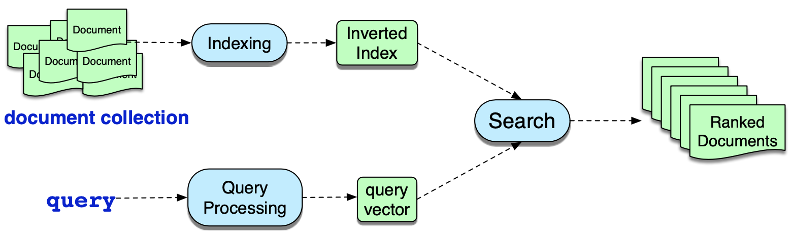
The basic IR architecture uses the vector space model in which we map queries and document to vectors based on unigram word counts, and use the cosine similarity between the vectors to rank potential documents.
Information Retrieval with Dense Vectors
One can use tf-idf or BM25 algorithms to represent words and documents as vectors. From there, we can score document using its cosine metric with the query vector :
As we know, the classic tf-idf or BM25 algorithms do not capture semantic relation between words as good as word embeddings. Based on these reperesentations, two documents are similar depending on how many exact same words exist in both documents. So using them for IR brings a known conceptual flaw: they work only if there is exact overlap of words between the query and document. In other words, the user posing a query (or asking a question) needs to guess exactly what words the writer of the answer might have used, an issue called the vocabulary mismatch problem.
The solution to this problem is to use an approach that can handle synonymy: instead of (sparse) word-count vectors, using (dense) embeddings. The most powerful approach is to present both the query and the document to a single encoder, allowing the transformer self-attention to see all the tokens of both the query and the document, and thus building a representation that is sensitive to the meanings of both query and document. Then a linear layer can be put on top of the [CLS] token to predict a similarity score for the query/document tuple.

You can use separate encoders for query and document, and use the dot product between CLS token outputs for the query and document as the score. This is less compute-expensive, but not as accurate. The problem with the full BERT architecture in (one encoder only) is the expense in computation and time. With this architecture, every time we get a query, we have to pass every single document in our entire collection through a BERT encoder jointly with the new query! This enormous use of resources is impractical for real cases.
Usually the retrieval step is not done on an entire document. Instead documents are broken up into smaller passages, such as non-overlapping fixed-length chunks of say 100 tokens, and the retriever encodes and retrieves these passages rather than entire documents. The query and document have to be made to fit in the BERT 512-token window, for example by truncating the query to 64 tokens and truncating the document if necessary so that it, the query, [CLS], and [SEP] fit in 512 tokens. The BERT system together with the linear layer U can then be fine-tuned for the relevance task by gathering a tuning dataset of relevant and non-relevant passages.
Efficiency is an important issue, since every possible document must be ranked for its similarity to the query. For sparse word-count vectors, the inverted index allows this very efficiently. For dense vector algorithms finding the set of dense document vectors that have the highest dot product with a dense query vector is an instance of the problem of nearest neighbor search. Modern systems therefore make use of approximate nearest neighbor vector search algorithms like Faiss.
Answering Questions with RAG
The dominant paradigm for question answering is to answer a user’s question by first finding supportive text segments from the web or another other large collection of documents, and then generating an answer based on the documents. The method of generating based on retrieved documents is called retrieval-augmented generation or RAG, and the two components are sometimes called the retriever and the generator.
In the first stage of the 2-stage retrieve and read model, we retrieve relevant passages from a text collection, for example using the dense retrievers of the previous section. In the second reader stage, we generate the answer via retrieval-augmented generation. In this method, we take a large pretrained language model, give it the set of retrieved passages and other text as its prompt, and autoregressively generate a new answer token by token.

The standard generator algorithm is to generate from a large language model, conditioned on the retrieved passages. The idea of retrieval-augmented generation is to condition responses on the retrieved passages as part of the prefix, perhaps with some prompt text like “Based on these texts, answer this question:”. Let’s suppose we have a query , and call the set of retrieved passages based on it R(q). For example, we could have a prompt like:
Q: Who wrote the book ‘‘The Origin of Species"? A:
Then we generate autoregressively conditioned on this text. The idea of retrieval-augmented generation is to address these problems by conditioning on the retrieved passages as part of the prefix, perhaps with some prompt text like “Based on these texts, answer this question:”. Let’s suppose we have a query , and call the set of retrieved passages based on it . For example, we could have a prompt like:
retrieved passage 1
retrieved passage 2
...
retrieved passage n
Based on these texts, answer this question: Q: Who wrote the book ‘‘The Origin of Species"? A:
Or more formally,
As with the span-based extraction reader, successfully applying the retrieval- augmented generation algorithm for QA requires a successful retriever, and often a two-stage retrieval algorithm is used in which the retrieval is reranked. Some complex questions may require multi-hop architectures, in which a query is used to retrieve documents, which are then appended to the original query for a second stage of retrieval. Details of prompt engineering also have to be worked out, like deciding whether to demarcate passages, for example with [SEP] tokens, and so on. Combinations of private data and public data involving an externally hosted large language model may lead to privacy concerns that need to be worked out. Much research in this area also focuses on ways to more tightly integrate the retrieval and reader stages.
Evaluating Question Answering
Three techniques are commonly employed to evaluate question-answering systems, with the choice depending on the type of question and QA situation. For multiple choice questions like in MMLU, we report exact match:
- Exact match: The % of predicted answers that match the gold answer exactly.
For questions with free text answers, like Natural Questions, we commonly evaluated with token F1 score to roughly measure the partial string overlap between the answer and the reference answer:
- F1 score: The average token overlap between predicted and gold answers. Treat the prediction and gold as a bag of tokens, and compute F1 for each question, then return the average F1 over all questions.
Finally, in some situations QA systems give multiple ranked answers. In such cases we evaluated using mean reciprocal rank, or MRR (Voorhees, 1999). MRR is designed for systems that return a short ranked list of answers or passages for each test set question, which we can compare against the (human-labeled) correct answer. First, each test set question is scored with the reciprocal of the rank of the first correct answer. For example if the system returned five answers to a question but the first three are wrong (so the highest-ranked correct answer is ranked fourth), the reciprocal rank for that question is 1/4. The score for questions that return no correct answer is 0. The MRR of a system is the average of the scores for each question in the test set. In some versions of MRR, questions with a score of zero are ignored in this calculation. More formally, for a system returning ranked answers to each question in a test set Q, (or in the alternate version, let Q be the subset of test set questions that have non-zero scores). MRR is then defined as
Model optimizations for deployment
Now that you've explored the work required to adapt and align large language models to your tasks, let's talk about the things you'll have to consider to integrate your model into applications.
There are a number of important questions to ask at this stage. The first set is related to how your LLM will function in deployment.
- How fast do you need your model to generate completions?
- What compute budget do you have available?
- Are you willing to trade off model performance for improved inference speed or lower storage?
The second set of questions is tied to additional resources that your model may need:
- Do you intend for your model to interact with external data or other applications?
- If so, how will you connect to those resources?
Lastly, there's the question of how your model will be consumed:
- What will the intended application or API interface that your model will be consumed through look like?
Let's start by exploring a few methods that can be used to optimize your model before deploying it for inference. Large language models present inference challenges in terms of computing and storage requirements, as well as ensuring low latency for consuming applications. These challenges persist whether you're deploying on premises or to the cloud, and become even more of an issue when deploying to edge devices.
One of the primary ways to improve application performance
is to reduce the size of the LLM. This can allow for quicker loading of the model, which reduces inference latency. However, the challenge is to reduce the size of the model while still maintaining model performance.
- Distillation uses a larger model, the teacher model, to train a smaller model, the student model. You then use the smaller model for inference to lower your storage and compute budget.
- Post Training Quantization transforms a model's weights to a lower precision representation, such as a 16- bit floating point or eight bit integer. This reduces the memory footprint of your model.
- Model Pruning removes redundant model parameters that contribute little to the model's performance.
Let's talk through each of these options in more detail. Model Distillation is a technique that focuses on having a larger teacher model train a smaller student model. The student model learns to statistically mimic the behavior of the teacher model, either just in the final prediction layer or in the model's hidden layers as well. You'll focus on the first option here. You start with your fine tune LLM as your teacher model and create a smaller LLM for your student model. You freeze the teacher model's weights and use it to generate completions for your training data. At the same time, you generate completions for the training data using your student model. The knowledge distillation between teacher and student model is achieved by minimizing a loss function called the distillation loss. To calculate this loss, distillation uses the probability distribution over tokens that is produced by the teacher model's softmax layer. Now, the teacher model is already fine tuned on the training data. So the probability distribution likely closely matches the ground truth data and won't have much variation in tokens. That's why Distillation applies a little trick adding a temperature parameter to the softmax function. As you learned in lesson one, a higher temperature increases the creativity of the language the model generates. With a temperature parameter greater than one, the probability distribution becomes broader and less strongly peaked. This softer distribution provides you with a set of tokens that are similar to the ground truth tokens.
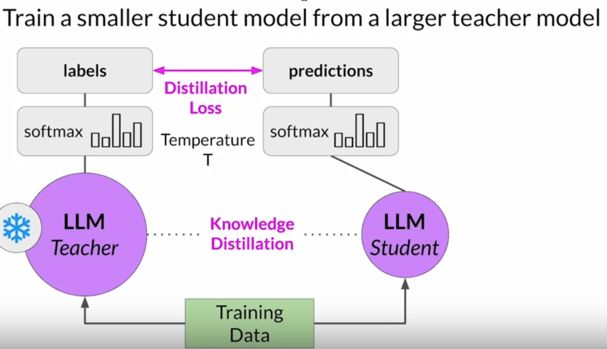
In the context of Distillation, the teacher model's output is often referred to as soft labels and the student model’s predictions as soft predictions. In parallel, you train the student model to generate the correct predictions based on your ground truth training data. Here, you don't vary the temperature setting and instead use the standard softmax function. Distillation refers to the student model outputs as the hard predictions and hard labels. The loss between these two is the student loss. The combined distillation and student losses are used to update the weights of the student model via back propagation. The key benefit of distillation methods is that the smaller student model can be used for inference in deployment instead of the teacher model. In practice, distillation is not as effective for generative decoder models. It's typically more effective for encoder only models, such as BERT that have a lot of representation redundancy.
Let's have a look at the next model optimization technique that actually reduces the size of your LLM. You were introduced to the second method, quantization in the context of training, specifically Quantization Aware Training (QAT). However, after a model is trained, you can perform post training quantization to optimize it for deployment. PTQ transforms a model's weights to a lower precision representation, such as 16-bit floating point or 8-bit integer.

To reduce the model size and memory footprint, as well as the compute resources needed for model serving, quantization can be applied to just the model weights or to both weights and activation layers. In general, quantization approaches that include the activations can have a higher impact on model performance. Quantization also requires an extra calibration step to statistically capture the dynamic range of the original parameter values. As with other methods, there are tradeoffs because sometimes quantization results in a small percentage reduction in model evaluation metrics. However, that reduction can often be worth the cost savings and performance gains.
The last model optimization technique is pruning. At a high level, the goal is to reduce model size for inference by eliminating weights that are not contributing much to overall model performance. These are the weights with values very close to or equal to zero. Note that some pruning methods require full retraining of the model, while others fall into the category of parameter efficient fine tuning, such as LoRA. There are also methods that focus on post-training Pruning. In theory, this reduces the size of the model and improves performance. In practice, however, there may not be much impact on the size and performance if only a small percentage of the model weights are close to zero.
Quantization, Distillation and Pruning all aim to reduce model size to improve model performance during inference without impacting accuracy. Optimizing your model for deployment will help ensure that your application functions well and provides your users with the best possible experience sense. Some techniques work better than others for generative models, and there are tradeoffs between accuracy and performance.
Using the LLM in applications
Although all the training, tuning and aligning techniques you've explored can help you build a great model for your application. There are some broader challenges with large language models that can't be solved by training alone.
-
One issue is that the internal knowledge held by a model cuts off at the moment of pretraining. For example, if you ask a model that was trained in early 2022 who the British Prime Minister is, it will probably tell you Boris Johnson. This knowledge is out of date. The model does not know that Johnson left office in late 2022 because that event happened after its training.
-
Models can also struggle with complex math. If you prompt a model to behave like a calculator, it may get the answer wrong, depending on the difficulty of the problem. Note the LLMs do not carry out mathematical operations. They are still just trying to predict the next best token based on their training, and as a result, can easily get the answer wrong.
-
Lastly, one of the best known problems of LLMs is their tendency to generate text even when they don't know the answer to a problem. This is often called hallucination, and here you can see the model clearly making up a description of a nonexistent plant, the Martian Dunetree. Although there is still no definitive evidence of life on Mars, the model will happily tell you otherwise.
In this section, you'll learn about some techniques that you can use to help your LLM overcome these issues by connecting to external data sources and applications. You'll have a bit more work to do to be able to connect your LLM to these external components and fully integrate everything for deployment within your application. Your application must manage the passing of user input to the large language model and the return of completions. This is often done through some type of orchestration library. This layer can enable some powerful technologies that augment and enhance the performance of the LLM at runtime by providing access to external data sources or connecting to existing APIs of other applications. One implementation example is LangChain. Let's start by considering how to connect LLMs to external data sources.
Retrieval Augmented Generation (RAG) is a framework for building LLM powered systems that make use of external data sources. And applications to overcome some of the limitations of these models. RAG is a great way to overcome the knowledge cutoff issue and help the model update its understanding of the world. While you could retrain the model on new data, this would quickly become very expensive. And require repeated retraining to regularly update the model with new knowledge. A more flexible and less expensive way to overcome knowledge cutoffs is to give your model access to additional external data at inference time.
RAG is useful in any case where you want the language model to have access to data that it may not have seen. This could be new information documents not included in the original training data, or proprietary knowledge stored in your organization's private databases. Providing your model with external information, can improve both the relevance and accuracy of its completions. Retrieval augmented generation isn't a specific set of technologies, but rather a framework for providing LLMs access to data they did not see during training. A number of different implementations exist, and the one you choose will depend on the details of your task and the format of the data you have to work with.
Here you'll walk through the implementation discussed in one of the earliest papers on RAG by researchers at Facebook, originally published in 2020. At the heart of this implementation is a model component called the Retriever, which consists of a query encoder and an external data source. The encoder takes the user's input prompt and encodes it into a form that can be used to query the data source. In the Facebook paper, the external data is a vector store but it could instead be a SQL database, CSV files, or other data storage format. These two components are trained together to find documents within the external data that are most relevant to the input query. The Retriever returns the best single or group of documents from the data source and combines the new information with the original user query. The new expanded prompt is then passed to the language model, which generates a completion that makes use of the data.
For example, imagine you are a lawyer using a large language model to help you in the discovery phase of a case. A Rag architecture can help you ask questions of a corpus of documents, for example, previous court filings. Here you ask the model about the plaintiff named in a specific case number. The prompt is passed to the query encoder, which encodes the data in the same format as the external documents. And then searches for a relevant entry in the corpus of documents.
Having found a piece of text that contains the requested information, the Retriever then combines the new text with the original prompt. The expanded prompt that now contains information about the specific case of interest is then passed to the LLM. The model uses the information in the context of the prompt to generate a completion that contains the correct answer. The use case you have seen here is quite simple and only returns a single piece of information that could be found by other means. But imagine the power of Rag to be able to generate summaries of filings or identify specific people, places and organizations within the full corpus of the legal documents. Allowing the model to access information contained in this external data set greatly increases its utility for this specific use case.
In addition to overcoming knowledge cutoffs, rag also helps you avoid the problem of the model hallucinating when it doesn't know the answer. RAG architectures can be used to integrate multiple types of external information sources. You can augment large language models with access to local documents, including private wikis and expert systems. Rag can also enable access to the Internet to extract information posted on web pages, for example, Wikipedia. By encoding the user input prompt as a SQL query, RAG can also interact with databases.
Another important data storage strategy is a Vector Store, which contains vector representations of text. This is a particularly useful data format for language models, since internally they work with vector representations of language to generate text. Vector stores enable a fast and efficient kind of relevant search based on similarity. Note that implementing RAG is a little more complicated than simply adding text into the large language model. There are a couple of key considerations to be aware of, starting with the size of the context window. Most text sources are too long to fit into the limited context window of the model, which is still at most just a few thousand tokens. Instead, the external data sources are chopped up into many chunks, each of which will fit in the context window. Packages like LangChain can handle this work for you.
Second, the data must be available in a format that allows for easy retrieval of the most relevant text. Recall that large language models don't work directly with text, but instead create vector representations of each token in an embedding space. Rag methods take the small chunks of external data and process them through the large language model, to create embedding vectors for each. These new representations of the data can be stored in structures called vector stores, which allow for fast searching of datasets and efficient identification of semantically related text.
Vector databases are a particular implementation of a vector store where each vector is also identified by a key. This can allow, for instance, the text generated by RAG to also include a citation for the document from which it was received. So you've seen how access to external data sources can help a model overcome limits to its internal knowledge. By providing up to date relevant information and avoiding hallucinations, you can greatly improve the experience of using your application for your users.
Interacting with external applications
In the previous section, you saw how LLMs can interact with external datasets. Now let's take a look at how they can interact with external applications. To motivate the types of problems and use cases that require this kind of augmentation of the LLM, you'll revisit the customer service bot example you saw earlier in the course. During this walkthrough of one customer's interaction with ShopBot, you'll take a look at the integrations that you'd need to allow the app to process a return requests from end to end. In this conversation, the customer has expressed that they want to return some genes that they purchased. ShopBot responds by asking for the order number, which the customer then provides. ShopBot then looks up the order number in the transaction database. One way it could do this is by using a rag implementation of the kind you saw earlier in the previous video.
In this case here, you would likely be retrieving data through a SQL query to a back-end order database rather than retrieving data from a corpus of documents. Once ShopBot has retrieved the customers order, the next step is to confirm the items that will be returned. The bot ask the customer if they'd like to return anything other than the genes. After the user states their answer, the bot initiates a request to the company's shipping partner for a return label. The body uses the shippers Python API to request the label ShopBot is going to email the shipping label to the customer. It also asks them to confirm their email address. The customer responds with their email address and the bot includes this information in the API call to the shipper. Once the API request is completed, the Bartlett's the customer know that the label has been sent by email, and the conversation comes to an end. This short example illustrates just one possible set of interactions that you might need an LLM to be capable of to power and application. In general, connecting LLMs to external applications allows the model to interact with the broader world, extending their utility beyond language tasks. As the shop bot example showed, LLMs can be used to trigger actions when given the ability to interact with APIs. LLMs can also connect to other programming resources. For example, a Python interpreter that can enable models to incorporate accurate calculations into their outputs. It's important to note that prompts and completions are at the very heart of these workflows.
The actions that the app will take in response to user requests will be determined by the LLM, which serves as the application's reasoning engine. In order to trigger actions, the completions generated by the LLM must contain certain important information. First, the model needs to be able to generate a set of instructions so that the application knows what actions to take. These instructions need to be understandable and correspond to allowed actions. In the ShopBot example for instance, the important steps were; checking the order ID, requesting a shipping label, verifying the user email, and emailing the user the label. Second, the completion needs to be formatted in a way that the broader application can understand. This could be as simple as a specific sentence structure or as complex as writing a script in Python or generating a SQL command. For example, here is a SQL query that would determine whether an order is present in the database of all orders. Lastly, the model may need to collect information that allows it to validate an action. For example, in the ShopBot conversation, the application needed to verify the email address the customer used to make the original order. Any information that is required for validation needs to be obtained from the user and contained in the completion so it can be passed through to the application. Structuring the prompts in the correct way is important for all of these tasks and can make a huge difference in the quality of a plan generated or the adherence to a desired output format specification.
Hugging Face
Transformers Python Library is a great tool for using transformer models in your projects on top of Pytorch, TensorFlow of Flax. You can use it for:
- Applying state of art transformer model out of the box for variety of NLP tasks
- Fine tuning pertained models using datasets provided by Hugging Face
- The transformer library has a pipeline object that encapsulates everything you need to run a model in your examples. Pipelines takes care of:
- Pre-processing your inputs
- Running the model to obtain output
- Post-processing to the final inference
To use a transformer model, you need to indicate the task that you need your pipeline to work on, plus the model checkpoint to be used. Pipelines are objects built for specific NLP tasks such as sentiment analysis, question answering, fill-mask and more. Hugging Face has a growing library with > 15K pretrained model check points that you can use to fine tune the most popular transformer architectures. A checkpoint is a set of parameters learned for a specific model trained with a specific dataset for a specific task like question-answering. You can fine tune a model starting from a check point using one of the thousands datasets available at hugging face or your own data.
The transformer library offers tokenizers associated with every check point to preprocess the data by translating your text to be readable for the model you want to fine tune. It's important to use the associated pretrained tokenizer becuase this ensures the text is split the same way as the pretraining corpus, and uses the same corresponding tokens-to-index (usually referred to as the vocab) during pretraining.

Preprocessing and Tokenizers
There are three main types of tokenizers used in 🤗 Transformers: Byte-Pair Encoding (BPE), WordPiece, and SentencePiece, and show examples of which tokenizer type is used by which model. Note that on each model page, you can look at the documentation of the associated tokenizer to know which tokenizer type was used by the pretrained model. For instance, if we look at BertTokenizer, we can see that the model uses WordPiece.
Load a pretrained tokenizer with the AutoTokenizer.from_pretrained() method. This downloads the vocab a model was pretrained with.
The output can be translated back to human readable text using the same tokenizer. Hugging Face also provides metrics to be integrated in the training process to evaluate your model:
from transformers import AutoTokenizer
tokenizer = AutoTokenizer.from_pretrained("bert-base-cased")
encoded_input = tokenizer("Do not meddle in the affairs of wizards, for they are subtle and quick to anger.")
print(encoded_input)
Return your input by decoding the input_ids:
tokenizer.decode(encoded_input["input_ids"])
As you can see, the tokenizer added two special tokens - CLS and SEP (classifier and separator) - to the sentence. Not all models need special tokens, but if they do, the tokenizer automatically adds them for you. This how the data was prepared for the pre-trained model before training. If there are several sentences you want to preprocess, pass them as a list to the tokenizer:
batch_sentences = [
"But what about second breakfast?",
"Don't think he knows about second breakfast, Pip.",
"What about elevensies?",
]
encoded_inputs = tokenizer(batch_sentences)
print(encoded_inputs)
Padding
Sentences aren't always the same length which can be an issue because tensors, the model inputs, need to have a uniform shape. Padding is a strategy for ensuring tensors are rectangular by adding a special padding token to shorter sentences. Set the padding parameter to True to pad the shorter sequences in the batch to match the longest sequence in the batch
tokenizer(batch_sentences, padding=True)
Truncation
On the other end of the spectrum, sometimes a sequence may be too long for a model to handle. In this case, you'll need to truncate the sequence to a shorter length. Set the truncation parameter to True to truncate a sequence to the maximum length accepted by the model:
tokenizer(batch_sentences, padding=True, truncation=True)
Build tensors and apply preprocessing transformations
Finally, you want the tokenizer to return the actual tensors that get fed to the model. Set the return_tensors parameter to either pt for PyTorch, or tf for TensorFlow:
tokenizer(batch_sentences, padding=True, truncation=True, return_tensors="pt")
You may want to use some transformation function before batching into tensors. Also you want to so the process using Python generator so data is not fully loaded into the memory.
Source: Hugging Face Colab Notebook for more about preparing data for Computer Vision or Multimodal Tasks.
Train your own tokenizer
After some preprocesing, you can feed the training corpus (either the list of list or an iterator) to the train_new_from_iterator method. We also have to specify the vocabulary size we want to use:
new_tokenizer = tokenizer.train_new_from_iterator(batch_iterator(), vocab_size=25000)
And that's all there is to it! The training goes very fast thanks to the 🤗 Tokenizers library, backed by Rust. You now have a new tokenizer ready to preprocess your data and train a language model. You can feed it input texts as usual. You can save it locally with the save_pretrained method:
new_tokenizer.save_pretrained("my-new-tokenizer")
('my-new-tokenizer/tokenizer_config.json',
'my-new-tokenizer/special_tokens_map.json',
'my-new-tokenizer/vocab.json',
'my-new-tokenizer/merges.txt',
'my-new-tokenizer/added_tokens.json',
'my-new-tokenizer/tokenizer.json')
Or even push it to the Hugging Face Hub to use that new tokenzier from anywhere. The tokenizer can now be reloaded on this machine with:
new_tokenizer.from_pretrained("my-new-tokenizer")
To understand how to build your tokenizer from scratch, we have to dive a little bit more in the 🤗 Tokenizers library and the tokenization pipeline. This pipeline takes several steps:
- Normalization: Executes all the initial transformations over the initial input string. For example when you need to lowercase some text, maybe strip it, or even apply one of the common unicode normalization process, you will add a Normalizer.
- Pre-tokenization: In charge of splitting the initial input string. That's the component that decides where and how to pre-segment the origin string. The simplest example would be to simply split on spaces.
- Model: Handles all the sub-token discovery and generation, this is the part that is trainable and really dependent of your input data.
- Post-Processing: Provides advanced construction features to be compatible with some of the Transformers-based SoTA models. For instance, for BERT it would wrap the tokenized sentence around
[CLS]and[SEP]tokens. - Decoding: In charge of mapping back a tokenized input to the original string. The decoder is usually chosen according to the PreTokenizer we used previously. This method will be used for inference.
For the training of the model, the 🤗 Tokenizers library provides a Trainer class that we will use. The tokenizer library can help you build these components and then combine them to create working tokenization pipelines.
from tokenizers import decoders, models, normalizers, pre_tokenizers, processors, trainers, Tokenizer
As an example, we replicate BERT. To build a tokenizer such as the one for BERT, begin with WordPiece model:
tokenizer = Tokenizer(models.WordPiece(unk_token="[UNK]"))
Use lowercasing as a normalizaion step:
tokenizer.normalizer = normalizers.BertNormalizer(lowercase=True)
You can also combine multiple normalization step using sequence method:
tokenizer.normalizer = normalizers.Sequence(
[normalizers.NFD(), normalizers.Lowercase(), normalizers.StripAccents()]
)
There is also a BertPreTokenizer we can use directly. It pre-tokenizes using white space and punctuation:
tokenizer.pre_tokenizer = pre_tokenizers.BertPreTokenizer()
tokenizer.pre_tokenizer.pre_tokenize_str("This is an example!")
[('This', (0, 4)),
('is', (5, 7)),
('an', (8, 10)),
('example', (11, 18)),
('!', (18, 19))]
We can now train our tokenizer. Although the pipeline is not entirely finished but we will need a trained tokenizer to build the post-processor. We use a WordPieceTrainer for that. The key thing to remember is to pass along the special tokens to the trainer, as they won't be seen in the corpus.
special_tokens = ["[UNK]", "[PAD]", "[CLS]", "[SEP]", "[MASK]"]
trainer = trainers.WordPieceTrainer(vocab_size=25000, special_tokens=special_tokens)
Now train the tokenizer:
tokenizer.train_from_iterator(batch_iterator(), trainer=trainer)
Now that the tokenizer is trained, we can define the post-processor: we need to add the CLS token at the beginning and the SEP token at the end (for single sentences) or several SEP tokens (for pairs of sentences). We use a TemplateProcessing to do this, which requires to know the IDs of the CLS and SEP token (which is why we waited for the training).
cls_token_id = tokenizer.token_to_id("[CLS]")
sep_token_id = tokenizer.token_to_id("[SEP]")
print(cls_token_id, sep_token_id)
2 3
And here is how we can build our post processor. We have to indicate in the template how to organize the special tokens with one sentence $A or two sentences $A and $B. The : followed by a number indicates the token type ID to give to each part.
tokenizer.post_processor = processors.TemplateProcessing(
single=f"[CLS]:0 $A:0 [SEP]:0",
pair=f"[CLS]:0 $A:0 [SEP]:0 $B:1 [SEP]:1",
special_tokens=[
("[CLS]", cls_token_id),
("[SEP]", sep_token_id),
],
)
Check that we get the expected results by encoding a pair of sentences for instance:
encoding = tokenizer.encode("This is one sentence.", "With this one we have a pair.")
encoding.tokens
['[CLS]',
'this',
'is',
'one',
'sentence',
'.',
'[SEP]',
'with',
'this',
'one',
'we',
'have',
'a',
'pair',
'.',
'[SEP]']
encoding.type_ids
[0, 0, 0, 0, 0, 0, 0, 1, 1, 1, 1, 1, 1, 1, 1, 1]
The last piece in this tokenizer is the decoder, we use a WordPiece decoder and indicate the special prefix ##:
tokenizer.decoder = decoders.WordPiece(prefix="##")
Now that our tokenizer is finished, we need to wrap it inside a Transformers object to be able to use it with the Transformers library. More specifically, we have to put it inside the class of tokenizer fast corresponding to the model we want to use, here a BertTokenizerFast:
from transformers import BertTokenizerFast
new_tokenizer = BertTokenizerFast(tokenizer_object=tokenizer)
And like before, we can use this tokenizer as a normal Transformers tokenizer, and use the save_pretrained or push_to_hub methods.
Source: Hugging Face, Colab Notebook for tokenizers of T5 or GPT2.
Causal Language Model Training
Here is how to load and preprocess the dataset for each one of those tasks, and how to use 🤗 Trainer API to train a model on it.
- Assuming you have trained a tokenizer on your corpus, first load your data (could be a csv or a JSON file as well) using 🤗 Datasets library:
from datasets import load_dataset
datasets = load_dataset('wikitext', 'wikitext-2-raw-v1')
For causal language modeling (CLM), we can concatenate all the text after they are tokenized and then split them into examples of a certain sequence length up to the maximum length allowed by the model. As said before, the labels will be the same as the inputs, shifted to the left.
We will use the gpt2 architecture here. You can pick any of the checkpoints instead. For the tokenizer, you can replace the checkpoint by the one you trained yourself:
model_checkpoint = "gpt2"
tokenizer_checkpoint = "sgugger/gpt2-like-tokenizer"
To tokenize all our texts with the same vocabulary that was used when training the model, we have to download a pretrained tokenizer. This is all done by the AutoTokenizer class:
from transformers import AutoTokenizer
tokenizer = AutoTokenizer.from_pretrained(tokenizer_checkpoint)
Use the map method from the Datasets library to apply tokenizer to the examples in the batch. We won't need the text column afterward, so we discard it.
tokenized_datasets = datasets.map(lambda ex: tokenizer(ex['text']), batched=True, num_proc=4, remove_columns=["text"])
# Look at a typical example in the dataset
tokenized_datasets["train"][1]
{'attention_mask': [1, 1, 1, 1, 1, 1],
'input_ids': [238, 8576, 9441, 2987, 238, 252]}
Now concatenate all our texts together and then split the result in small chunks of a certain block_size length. To do this, use the map method again, with the option batched=True. Choose the maximum length our model was pretrained with as block_size if not too big to fit in your GPU RAM. Otherwise take a bit less at just 128!
# block_size = tokenizer.model_max_length
block_size = 128
lm_datasets = tokenized_datasets.map(
group_texts, # The function that concats and then cuts text to size
batched=True,
batch_size=1000,
num_proc=4,
)
See what you got:
tokenizer.decode(lm_datasets["train"][1]["input_ids"])
' the " Nameless ", a penal military unit serving the nation of Gallia during the Second Europan War who perform secret black operations and are pitted against the Imperial unit " Calamaty Raven ". \n The game began development in 2010, carrying over a large portion of the work done on Valkyria Chronicles II. While it retained the standard features of the series, it also underwent multiple adjustments, such as making the game more forgiving for series newcomers. Character designer Raita Honjou and composer Hitoshi Sakimoto both returned from previous entries, along with Valkyria Chronicles II director Takeshi Ozawa. A large'
Now that the data has been cleaned, we're ready to instantiate our Trainer. First we create the model using the same config as our checkpoint, but initialized with random weights:
from transformers import AutoConfig, AutoModelForCausalLM
config = AutoConfig.from_pretrained(model_checkpoint)
model = AutoModelForCausalLM.from_config(config)
Before we start training, make it clear if you want to push the trained model to the Hub regularly during training or you want to save your model locally in a name that is different than the name of the repository it will be pushed, or if you want to push your model under an organization and not your name space.
from transformers import Trainer, TrainingArguments
training_args = TrainingArguments(
f"{model_checkpoint}-wikitext2",
evaluation_strategy = "epoch",
learning_rate=2e-5,
weight_decay=0.01,
push_to_hub=True
)
trainer = Trainer(
model=model,
args=training_args,
train_dataset=lm_datasets["train"],
eval_dataset=lm_datasets["validation"],
)
And we can train our model:
trainer.train()
Evaluate the model:
import math
eval_results = trainer.evaluate()
print(f"Perplexity: {math.exp(eval_results['eval_loss']):.2f}")
You can now upload the result of the training to the Hub, just execute this instruction trainer.push_to_hub(). Then you can load it with the identifier you chose:
from transformers import AutoModelForCausalLM
model = AutoModelForCausalLM.from_pretrained("sgugger/my-awesome-model")
Masked language model Training
For masked language modeling (MLM) we are going to use the same preprocessing as before for our dataset with one additional step: we will randomly mask some tokens (by replacing them by [MASK]) and the labels will be adjusted to only include the masked tokens (we don't have to predict the non-masked tokens). If you use a tokenizer you trained yourself, make sure the [MASK] token is among the special tokens you passed during training!
We will use the bert-base-cased model for this example. You can pick any of the checkpoints listed here instead. For the tokenizer, replace the checkpoint by the one you trained.
model_checkpoint = "bert-base-cased"
tokenizer_checkpoint = "sgugger/bert-like-tokenizer"
We can apply the same tokenization function as before, we just need to update our tokenizer to use the checkpoint we just picked:
tokenizer = AutoTokenizer.from_pretrained(tokenizer_checkpoint)
tokenized_datasets = datasets.map(lambda ex: tokenizer(ex['text']), batched=True, num_proc=4, remove_columns=["text"])
And like before, group texts together and chunk them in samples of length block_size. You can skip that step if your dataset is composed of individual sentences.
lm_datasets = tokenized_datasets.map(
group_texts,
batched=True,
batch_size=1000,
num_proc=4,
)
Use a model suitable for masked LM:
from transformers import AutoConfig, AutoModelForMaskedLM
config = AutoConfig.from_pretrained(model_checkpoint)
model = AutoModelForMaskedLM.from_config(config)
training_args = TrainingArguments(
"test-clm",
evaluation_strategy = "epoch",
learning_rate=2e-5,
weight_decay=0.01,
push_to_hub=True,
push_to_hub_model_id=f"{model_checkpoint}-wikitext2",
)
Use data_collator to ensure the random masking is done in a new way each time we go over the data. The library provides a DataCollatorForLanguageModeling. We can adjust the probability of the masking:
from transformers import DataCollatorForLanguageModeling
data_collator = DataCollatorForLanguageModeling(tokenizer=tokenizer, mlm_probability=0.15)
Pass everything to Trainer and begin training:
trainer = Trainer(
model=model,
args=training_args,
train_dataset=lm_datasets["train"],
eval_dataset=lm_datasets["validation"],
data_collator=data_collator,
)
trainer.train()
Evaluate the model on the validation set. The perplexity is much lower than for the CLM objective because for the MLM objective, we only have to make predictions for the masked tokens (which represent 15% of the total here) while having access to the rest of the tokens. It's thus an easier task for the model.
eval_results = trainer.evaluate()
print(f"Perplexity: {math.exp(eval_results['eval_loss']):.2f}")
Source: Hugging Face, Colab Notebook for full implementation.
Fine-tuning using Hugging Face
Many open-source models are available for members of the AI community like you to use in your application. The developers of some of the major frameworks for building generative AI applications like Hugging Face and PyTorch, have curated hubs where you can browse these models. A really useful feature of these hubs is the inclusion of model cards, that describe important details including the best use cases for each model, how it was trained, and known limitations. You'll find some links to these model hubs in the reading at the end of the week. The exact model that you'd choose will depend on the details of the
Although the enormous pretraining data for a large language model includes text from many domains, it’s often the case that we want to apply it in a new domain or task that might not have appeared sufficiently in the pre-training data. For example, we might want a language model that’s specialized to legal or medical text. Or we might have a multilingual language model that knows many languages but might benefit from some more data in our particular language of interest. Or we want a language model that is specialized to a particular task. In such cases, we can simply continue training the model on relevant data from the new domain or language. This process of taking a fully pretrained model and running additional training passes on some new data is called finetuning. In the first kind of finetuning we retrain all the parameters of the model on this new data, using the same method (word prediction) and loss function (cross-entropy loss) as for pretraining. In a sense it’s as if the new data were at the tail end of the pretraining data, and so you’ll sometimes see this method called continued pre-training. Retraining all the parameters of the model is very slow and expensive when the
language model is huge. So instead we can freeze some of the parameters (i.e., leave them unchanged from their pretrained value) and train only a subset of parameters on the new data. The following examples are of this type of finetuning.
Here we breifly discuss examples of Hugging Face API for handling common NLP tasks such as Text Classification, Question Answering, Summarization.
Text Classification
The following is a summarization of this Colab Notebook for text classification (sentiment analysis - positive, negative in this example) task of the GLUE Benchmark. The GLUE Benchmark is a group of nine classification tasks on sentences or pairs of sentences. These tasks are CoLA, MNLI, MRPC, QNLI, QQP, RTE, SST-2, SST-B and WNLI.
Any model checkpoint from the Model Hub can be used here as long as that model has a version with a classification head. Depending on you model and the GPU you are using, you might need to adjust the batch size to avoid out-of-memory errors. Set those three parameters, then the rest of the notebook should run smoothly:
task = "cola"
model_checkpoint = "distilbert-base-uncased"
batch_size = 16
Load the dataset:
from datasets import load_dataset, load_metric
actual_task = "mnli" if task == "mnli-mm" else task
dataset = load_dataset("glue", actual_task)
metric = load_metric('glue', actual_task)
Note that load_metric has loaded the proper metric associated to your task so the metric object only computes the one(s) needed for your task. See the actual data:
dataset["train"][0]
{'idx': 0,
'label': 1,
'sentence': "Our friends won't buy this analysis, let alone the next one we propose."}
Before we can feed those texts to our model, we need to preprocess them using 🤗 Transformers Tokenizer which will tokenize the inputs (including converting the tokens to their corresponding IDs in the pretrained vocabulary) and put it in a format the model expects, as well as generate the other inputs that model requires corresponding to its architecture.
from transformers import AutoTokenizer
tokenizer = AutoTokenizer.from_pretrained(model_checkpoint, use_fast=True)
To preprocess our dataset, we will thus need the names of the columns containing the sentence(s). The following dictionary keeps track of the correspondence task to column names:
task_to_keys = {
"cola": ("sentence", None),
"mnli": ("premise", "hypothesis"),
"mnli-mm": ("premise", "hypothesis"),
"mrpc": ("sentence1", "sentence2"),
"qnli": ("question", "sentence"),
"qqp": ("question1", "question2"),
"rte": ("sentence1", "sentence2"),
"sst2": ("sentence", None),
"stsb": ("sentence1", "sentence2"),
"wnli": ("sentence1", "sentence2"),
}
sentence1_key, sentence2_key = task_to_keys[task]
We can then write the function that will preprocess our samples. We just feed them to the tokenizer with the argument truncation=True. This will ensure that an input longer that what the model selected can handle will be truncated to the maximum length accepted by the model.
def preprocess_function(examples):
if sentence2_key is None:
return tokenizer(examples[sentence1_key], truncation=True)
return tokenizer(examples[sentence1_key], examples[sentence2_key], truncation=True)
Example:
preprocess_function(dataset['train'][:5])
{'input_ids': [[101, 2256, 2814, 2180, 1005, 1056, 4965, 2023, 4106, 1010, 2292, 2894, 1996, 2279, 2028, 2057, 16599, 1012, 102], [101, 2028, 2062, 18404, 2236, 3989, 1998, 1045, 1005, 1049, 3228, 2039, 1012, 102], [101, 2028, 2062, 18404, 2236, 3989, 2030, 1045, 1005, 1049, 3228, 2039, 1012, 102], [101, 1996, 2062, 2057, 2817, 16025, 1010, 1996, 13675, 16103, 2121, 2027, 2131, 1012, 102], [101, 2154, 2011, 2154, 1996, 8866, 2024, 2893, 14163, 8024, 3771, 1012, 102]], 'attention_mask': [[1, 1, 1, 1, 1, 1, 1, 1, 1, 1, 1, 1, 1, 1, 1, 1, 1, 1, 1], [1, 1, 1, 1, 1, 1, 1, 1, 1, 1, 1, 1, 1, 1], [1, 1, 1, 1, 1, 1, 1, 1, 1, 1, 1, 1, 1, 1], [1, 1, 1, 1, 1, 1, 1, 1, 1, 1, 1, 1, 1, 1, 1], [1, 1, 1, 1, 1, 1, 1, 1, 1, 1, 1, 1, 1]]}
Apply this function to all the sentences (or pairs of sentences) in our dataset:
encoded_dataset = dataset.map(preprocess_function, batched=True)
Fine-tune the model
Now that our data is ready, we can download the pretrained model and fine-tune it. Since our task is about sentence classification, we use the AutoModelForSequenceClassification class. Like with the tokenizer, the from_pretrained method will download and cache the model. However we have to specify the number of labels for the task (always 2, except for STS-B which is a regression problem and 3 for MNLI):
from transformers import AutoModelForSequenceClassification, TrainingArguments, Trainer
num_labels = 3 if task.startswith("mnli") else 1 if task=="stsb" else 2
model = AutoModelForSequenceClassification.from_pretrained(model_checkpoint, num_labels=num_labels)
Some weights of the model checkpoint at distilbert-base-uncased were not used when initializing DistilBertForSequenceClassification: ['vocab_transform.weight', 'vocab_transform.bias', 'vocab_layer_norm.weight', 'vocab_layer_norm.bias', 'vocab_projector.weight', 'vocab_projector.bias']
Some weights of DistilBertForSequenceClassification were not initialized from the model checkpoint at distilbert-base-uncased and are newly initialized: ['pre_classifier.weight', 'pre_classifier.bias', 'classifier.weight', 'classifier.bias']
You should probably TRAIN this model on a down-stream task to be able to use it for predictions and inference.
It seems that the top layers of the pretrained model are replaced by some feed forward layer for classification tasks. In this case, vocab_transform, vocab_layer_norm and vocab_projector are replaced by pre_classifier and classifier initialized randomly. Declare folder name to save the checkpoints of the model (and all other arguments are optional):
metric_name = "pearson" if task == "stsb" else "matthews_correlation" if task == "cola" else "accuracy"
model_name = model_checkpoint.split("/")[-1]
args = TrainingArguments(
f"{model_name}-finetuned-{task}",
evaluation_strategy = "epoch",
save_strategy = "epoch",
learning_rate=2e-5,
per_device_train_batch_size=batch_size,
per_device_eval_batch_size=batch_size,
num_train_epochs=5,
weight_decay=0.01,
load_best_model_at_end=True,
metric_for_best_model=metric_name,
push_to_hub=True,
)
The last thing to define for our Trainer is how to compute the loss from the predictions. We need to define a function for this, which will just use the metric we loaded earlier, the only preprocessing we have to do is to take the argmax of our predicted logits (our just squeeze the last axis in the case of STS-B):
def compute_metrics(eval_pred):
predictions, labels = eval_pred
if task != "stsb":
predictions = np.argmax(predictions, axis=1)
else:
predictions = predictions[:, 0]
return metric.compute(predictions=predictions, references=labels)
Pass all of this along with our datasets to the Trainer:
validation_key = "validation_mismatched" if task == "mnli-mm" else "validation_matched" if task == "mnli" else "validation"
trainer = Trainer(
model,
args,
train_dataset=encoded_dataset["train"],
eval_dataset=encoded_dataset[validation_key],
tokenizer=tokenizer,
compute_metrics=compute_metrics
)
You might wonder why we pass along the tokenizer when we already preprocessed our data. This is because we will use it once last time to make all the samples we gather the same length by applying padding, which requires knowing the model's preferences regarding padding (to the left or right? with which token?). The tokenizer has a pad method that will do all of this right for us, and the Trainer will use it. You can customize this part by defining and passing your own data_collator which will receive the samples like the dictionaries seen above and will need to return a dictionary of tensors.
trainer.train()
Epoch Training Loss Validation Loss Matthews Correlation
1 0.520979 0.469752 0.474288
2 0.348630 0.462370 0.516637
3 0.239764 0.656372 0.543258
4 0.164460 0.785657 0.509128
5 0.123922 0.830915 0.530497
TrainOutput(global_step=2675, training_loss=0.26824118355724297)
We can check with the evaluate method that our Trainer did reload the best model properly (if it was not the last one):
trainer.evaluate()
{'eval_loss': 0.6563718318939209,
'eval_matthews_correlation': 0.5432575763528743,
'epoch': 5.0,
'total_flos': 354601098011100}
To see how your model fared you can compare it to the GLUE Benchmark leaderboard. You can now upload the result of the training to the Hub and load it when needed.
Hyperparameter Search
The Trainer supports hyperparameter search using optuna or Ray Tune. During hyperparameter search, the Trainer will run several trainings, so it needs to have the model defined via a function (so it can be reinitialized at each new run) instead of just having it passed. See the Colab referenced above for more detail on this.
Text Summarization
Here we use the XSum dataset (for extreme summarization) which contains BBC articles accompanied with single-sentence summaries. Any model checkpoint from the Model Hub can be used as long as that model has a sequence-to-sequence version in the Transformers library. Here we picked the t5-small checkpoint.
model_checkpoint = "t5-small"
Download the data and get the metric we need to use for evaluation (to compare our model to the benchmark). This can be easily done with the functions load_dataset and load_metric.
from datasets import load_dataset
from evaluate import load
raw_datasets = load_dataset("xsum")
metric = load("rouge")
Have a look at the data:
raw_datasets["train"][0]
{'document': 'The full cost of damage in Newton Stewart, one of the areas worst affected, is still being assessed.\nRepair work is ongoing in Hawick and many roads in Peeblesshire remain badly affected by standing water.\nTrains on the west coast mainline face disruption due to damage at the Lamington Viaduct.\nMany businesses and householders were affected by flooding in Newton Stewart after the River Cree overflowed into the town.\nFirst Minister Nicola Sturgeon visited the area to inspect the damage.\nThe waters breached a retaining wall, flooding many commercial properties on Victoria Street - the main shopping thoroughfare.\nJeanette Tate, who owns the Cinnamon Cafe which was badly affected, said she could not fault the multi-agency response once the flood hit.\nHowever, she said more preventative work could have been carried out to ensure the retaining wall did not fail.\n"It is difficult but I do think there is so much publicity for Dumfries and the Nith - and I totally appreciate that - but it is almost like we\'re neglected or forgotten," she said.\n"That may not be true but it is perhaps my perspective over the last few days.\n"Why were you not ready to help us a bit more when the warning and the alarm alerts had gone out?"\nMeanwhile, a flood alert remains in place across the Borders because of the constant rain.\nPeebles was badly hit by problems, sparking calls to introduce more defences in the area.\nScottish Borders Council has put a list on its website of the roads worst affected and drivers have been urged not to ignore closure signs.\nThe Labour Party\'s deputy Scottish leader Alex Rowley was in Hawick on Monday to see the situation first hand.\nHe said it was important to get the flood protection plan right but backed calls to speed up the process.\n"I was quite taken aback by the amount of damage that has been done," he said.\n"Obviously it is heart-breaking for people who have been forced out of their homes and the impact on businesses."\nHe said it was important that "immediate steps" were taken to protect the areas most vulnerable and a clear timetable put in place for flood prevention plans.\nHave you been affected by flooding in Dumfries and Galloway or the Borders? Tell us about your experience of the situation and how it was handled. Email us on selkirk.news@bbc.co.uk or dumfries@bbc.co.uk.',
'summary': 'Clean-up operations are continuing across the Scottish Borders and Dumfries and Galloway after flooding caused by Storm Frank.',
'id': '35232142'}
Load the tokenizer and its associated components:
from transformers import AutoTokenizer
tokenizer = AutoTokenizer.from_pretrained(model_checkpoint)
If you are using one of the five T5 checkpoints, you have to prefix the inputs with "summarize:" - the model can also translate and it needs the prefix for that task as you can see later.
if model_checkpoint in ["t5-small", "t5-base", "t5-large", "t5-3b", "t5-11b"]:
prefix = "summarize: "
else:
prefix = ""
We can then write the function that will preprocess our samples. We just feed them to the tokenizer with the argument truncation=True. This will ensure that an input longer that what the model selected can handle will be truncated to the maximum length accepted by the model. The padding will be dealt with later on (in a data collator) so we pad examples to the longest length in the batch and not the whole dataset.
max_input_length = 1024
max_target_length = 128
def preprocess_function(examples):
inputs = [prefix + doc for doc in examples["document"]]
model_inputs = tokenizer(inputs, max_length=max_input_length, truncation=True)
# Setup the tokenizer for targets
labels = tokenizer(text_target=examples["summary"], max_length=max_target_length, truncation=True)
model_inputs["labels"] = labels["input_ids"]
return model_inputs
Apply this function on all the pairs of sentences in our dataset using the map method of our dataset object.
tokenized_datasets = raw_datasets.map(preprocess_function, batched=True)
Since our task is of the sequence-to-sequence kind, we use the AutoModelForSeq2SeqLM class. Like with the tokenizer, the from_pretrained method will download and cache the model for us.
from transformers import AutoModelForSeq2SeqLM, DataCollatorForSeq2Seq, Seq2SeqTrainingArguments, Seq2SeqTrainer
model = AutoModelForSeq2SeqLM.from_pretrained(model_checkpoint)
Note that we don't get a warning like in our classification example in the previous section. This means we used all the weights of the pretrained model and there is no randomly initialized head in this case.
To instantiate a Seq2SeqTrainer, use the Seq2SeqTrainingArguments class.
batch_size = 16
model_name = model_checkpoint.split("/")[-1]
args = Seq2SeqTrainingArguments(
f"{model_name}-finetuned-xsum",
evaluation_strategy = "epoch",
learning_rate=2e-5,
per_device_train_batch_size=batch_size,
per_device_eval_batch_size=batch_size,
weight_decay=0.01,
save_total_limit=3,
num_train_epochs=1,
predict_with_generate=True,
fp16=True,
push_to_hub=True,
)
Then, we need a special kind of data collator, which will not only pad the inputs to the maximum length in the batch, but also the labels:
data_collator = DataCollatorForSeq2Seq(tokenizer, model=model)
The last thing to define for our Seq2SeqTrainer is how to compute the metrics from the predictions. This function also show how to decode prediction tokens before passing them to the metric.
import nltk
import numpy as np
def compute_metrics(eval_pred):
predictions, labels = eval_pred
decoded_preds = tokenizer.batch_decode(predictions, skip_special_tokens=True)
# Replace -100 in the labels as we can't decode them.
labels = np.where(labels != -100, labels, tokenizer.pad_token_id)
decoded_labels = tokenizer.batch_decode(labels, skip_special_tokens=True)
# Rouge expects a newline after each sentence
decoded_preds = ["\n".join(nltk.sent_tokenize(pred.strip())) for pred in decoded_preds]
decoded_labels = ["\n".join(nltk.sent_tokenize(label.strip())) for label in decoded_labels]
# Note that other metrics may not have a `use_aggregator` parameter
# and thus will return a list, computing a metric for each sentence.
result = metric.compute(predictions=decoded_preds, references=decoded_labels, use_stemmer=True, use_aggregator=True)
# Extract a few results
result = {key: value * 100 for key, value in result.items()}
# Add mean generated length
prediction_lens = [np.count_nonzero(pred != tokenizer.pad_token_id) for pred in predictions]
result["gen_len"] = np.mean(prediction_lens)
return {k: round(v, 4) for k, v in result.items()}
Create the trainer object:
trainer = Seq2SeqTrainer(
model,
args,
train_dataset=tokenized_datasets["train"],
eval_dataset=tokenized_datasets["validation"],
data_collator=data_collator,
tokenizer=tokenizer,
compute_metrics=compute_metrics
)
And start training:
trainer.train()
Source: Hugging Face Colab Notebook.
Translation
We will use the WMT dataset to fine-tune one of the 🤗 Transformers model for a translation task. Any model checkpoint from the Model Hub can be used as long as that model has a sequence-to-sequence version in the Transformers library. Here we picked the Helsinki-NLP/opus-mt-en-ro checkpoint. We use the English/Romanian part of the WMT dataset here.
from datasets import load_dataset, load_metric
raw_datasets = load_dataset("wmt16", "ro-en")
metric = load_metric("sacrebleu")
Load the pretrained model and its tokenizers:
from transformers import AutoTokenizer
tokenizer = AutoTokenizer.from_pretrained(model_checkpoint)
For this tokenizer, we need to set the source and target languages (so the texts are preprocessed properly). You can check the language codes here if you are using this notebook on a different pairs of languages.
if "mbart" in model_checkpoint:
tokenizer.src_lang = "en-XX"
tokenizer.tgt_lang = "ro-RO"
If you are using one of the five T5 checkpoints that require a special prefix to put before the inputs, you should adapt the following cell.
if model_checkpoint in ["t5-small", "t5-base", "t5-larg", "t5-3b", "t5-11b"]:
prefix = "translate English to Romanian: "
else:
prefix = ""
We can then write the function that will preprocess our samples. We just feed them to the tokenizer with the argument truncation=True. This will ensure that an input longer that what the model selected can handle will be truncated to the maximum length accepted by the model. The padding will be dealt with later on (in a data collator) so we pad examples to the longest length in the batch and not the whole dataset.
max_input_length = 128
max_target_length = 128
source_lang = "en"
target_lang = "ro"
def preprocess_function(examples):
inputs = [prefix + ex[source_lang] for ex in examples["translation"]]
targets = [ex[target_lang] for ex in examples["translation"]]
model_inputs = tokenizer(inputs, max_length=max_input_length, truncation=True)
# Setup the tokenizer for targets
with tokenizer.as_target_tokenizer():
labels = tokenizer(targets, max_length=max_target_length, truncation=True)
model_inputs["labels"] = labels["input_ids"]
return model_inputs
tokenized_datasets = raw_datasets.map(preprocess_function, batched=True)
We omit the rest here becuase it is the same as summarization task because our task is of the sequence-to-sequence kind. See Hugging Face Colab Notebook.
Train a Language Model from Scratch
This section describe a demo on how to train a “small” model (84 M parameters = 6 layers, 768 hidden size, 12 attention heads) – that’s the same number of layers & heads as DistilBERT – on Esperanto. We’ll then fine-tune the model on a downstream task of part-of-speech tagging.
We’ll use the Esperanto portion of the OSCAR corpus (Open Super-large Crawled Aggregated coRpus) from INRIA. OSCAR is an Open Source project aiming to provide web-based multilingual resources and datasets for Machine Learning (ML) and Artificial Intelligence (AI) applications. It is a huge multilingual corpus obtained by language classification and filtering of Common Crawl dumps of the Web.
The Esperanto portion of the dataset is only 299MB, so we’ll concatenate with the Esperanto sub-corpus of the Leipzig Corpora Collection, which is comprised of text from diverse sources like news, literature, and wikipedia. The final training corpus has a size of 3 GB, which is still small – for your model, you will get better results the more data you can get to pretrain on.
!wget -c https://cdn-datasets.huggingface.co/EsperBERTo/data/oscar.eo.txt
Train a Tokenizer
We choose to train a byte-level Byte-pair encoding tokenizer (the same as GPT-2), with the same special tokens as RoBERTa. Let’s arbitrarily pick its size to be 52,000. We recommend training a byte-level BPE (rather than let’s say, a WordPiece tokenizer like BERT) because it will start building its vocabulary from an alphabet of single bytes, so all words will be decomposable into tokens (no more <unk> tokens!).
# Install `transformers` from master if not installed
!pip install git+https://github.com/huggingface/transformers
!pip list | grep -E 'transformers|tokenizers'
sentence-transformers 3.4.1
tokenizers 0.21.1
transformers 4.52.0.dev0
%%time
from pathlib import Path
from tokenizers import ByteLevelBPETokenizer
paths = [str(x) for x in Path(".").glob("**/*.txt")]
# Initialize a tokenizer
tokenizer = ByteLevelBPETokenizer()
# Customize training
tokenizer.train(files=paths, vocab_size=52_000, min_frequency=2, special_tokens=[
"<s>",
"<pad>",
"</s>",
"<unk>",
"<mask>",
])
CPU times: user 16min 28s, sys: 6.26 s, total: 16min 34s
Wall time: 10min 44s
Save tokenizer and its components to disk:
!mkdir EsperBERTo
tokenizer.save_model("EsperBERTo")
['EsperBERTo/vocab.json', 'EsperBERTo/merges.txt']
The output consists of vocab.json of all 52000 tokens and their ids statring from special tokens:
{"<s>":0,"<pad>":1,"</s>":2,"<unk>":3,"<mask>":4,"!":5,"\"":6,"#":7,"$":8,"%":9,"&":10,"'":11,"(":12,")":13,"*":14,"+":15,",":16,"-":17,".":18,"/":19,"0":20,"1":21,"2":22,"3":23,"4":24,"5":25,"6":26,"7":27,"8":28,"9":29,":":30,";":31,"<":32,"=":33,">":34,"?":35,"@":36,"A":37,"B":38,"C":39,"D":40,"E":41,"F":42,"G":43,"H":44,"I":45,"J":46,"K":47,"L":48,"M":49,"N":50,"O":51,"P":52,"Q":53,"R":54,"S":55,"T":56,"U":57,"V":58,"W":59,"X":60,"Y":61,"Z":62,"[":63, ... ,"Ġpanojn":51989,"ĠKorto":51990,"ãĥ¢":51991,"ĠFont":51992,"ĠStewart":51993,"Ġteatrajn":51994,"UnuiÄĿinta":51995,"ĠformiÄĿi":51996,"Ġsabatan":51997,"Ġkontinentojn":51998,"Ġmalfacilaĵon":51999}
and the merges it learned saved in merges.txt:
#version: 0.2
l a
Ġ k
o n
Ġ la
Ġ e
t a
Ġ p
Ġ d
o j
.
.
.
ĠFon t
ĠSte wart
Ġtea trajn
Unu iÄĿinta
Ġform iÄĿi
Ġsab atan
Ġkontin entojn
Ġmalfacila ĵon
which contains 51740 merges. Compared to a generic tokenizer trained for English, this tokenizer has more native words represented by a single, unsplit tokens. Diacritics, i.e. accented characters used in Esperanto – ĉ, ĝ, ĥ, ĵ, ŝ, and ŭ – are encoded natively. We also represent sequences in a more efficient manner. On this corpus, the average length of encoded sequences is ~30% smaller as when using the pretrained GPT-2 tokenizer.
We now complete our tokenizer by configuring its post-processing according to BERT family models including adding our special tokens.
from tokenizers.implementations import ByteLevelBPETokenizer
from tokenizers.processors import BertProcessing
tokenizer = ByteLevelBPETokenizer(
"./EsperBERTo/vocab.json",
"./EsperBERTo/merges.txt",
)
tokenizer._tokenizer.post_processor = BertProcessing(
("</s>", tokenizer.token_to_id("</s>")),
("<s>", tokenizer.token_to_id("<s>")),
)
tokenizer.enable_truncation(max_length=512)
tokenizer.encode("Mi estas Julien.")
Encoding(num_tokens=7, attributes=[ids, type_ids, tokens, offsets, attention_mask, special_tokens_mask, overflowing])
print(tokenizer.encode("Mi estas Julien.").tokens)
print(tokenizer.encode("Mi estas Julien.").special_tokens_mask)
['<s>', 'Mi', 'Ġestas', 'ĠJuli', 'en', '.', '</s>']
[1, 0, 0, 0, 0, 0, 1]
Train a BERT-like Model from Scratch
We’ll train a RoBERTa model, which is a BERT-like with a couple of changes. It is based on Google’s BERT model released in 2018. It builds on BERT and modifies key hyperparameters, removing the next-sentence pretraining objective and training with much larger mini-batches and learning rates.
-
RoBERTa has the same architecture as BERT but uses a byte-level BPE as a tokenizer (same as GPT-2) and uses a different pretraining scheme.
-
RoBERTa doesn’t have token_type_ids, so you don’t need to indicate which token belongs to which segment. Just separate your segments with the separation token tokenizer.sep_token (or ).
Make sure GPU is available:
!nvidia-smi
import torch
torch.cuda.is_available()
True
Define the config for the model:
from transformers import RobertaConfig
config = RobertaConfig(
vocab_size=52_000,
max_position_embeddings=514,
num_attention_heads=12,
num_hidden_layers=6,
type_vocab_size=1,
)
Load our tokenizer from the file path:
from transformers import RobertaTokenizerFast
tokenizer = RobertaTokenizerFast.from_pretrained("./EsperBERTo", max_len=512)
Initialize the model:
from transformers import RobertaForMaskedLM
model = RobertaForMaskedLM(config=config)
model.num_parameters()
83504416
Install datasets to help load the data:
!pip install datasets
from datasets import load_dataset
# Replace with the path to your file
dataset = load_dataset("text", data_files="./oscar.eo.txt")
# See the first few entries
print(dataset["train"][0])
{'text': 'Ĉu ... preĝi | mediti | ricevi instigojn || kanti | muziki || informiĝi | legi | studi || prepari Diservon'}
Apply tokenizer to this example:
tokenizer(dataset["train"][0]['text'])
{'input_ids': [0, 2503, 1747, 12015, 870, 16846, 870, 2811, 20113, 7506, 8719, 870, 19922, 7506, 13140, 870, 2177, 870, 6019, 7506, 7283, 19999, 2], 'attention_mask': [1, 1, 1, 1, 1, 1, 1, 1, 1, 1, 1, 1, 1, 1, 1, 1, 1, 1, 1, 1, 1, 1, 1]}
Preprocess data:
def tokenize_function(examples):
return tokenizer(examples["text"], truncation=True, max_length=128)
tokenized_datasets = dataset.map(tokenize_function, num_proc=4, remove_columns=["text"])
from transformers import DataCollatorForLanguageModeling
data_collator = DataCollatorForLanguageModeling(
tokenizer=tokenizer, mlm=True, mlm_probability=0.15
)
Set up the trainer:
from transformers import Trainer, TrainingArguments
training_args = TrainingArguments(
output_dir="./EsperBERTo",
overwrite_output_dir=True,
num_train_epochs=1,
per_gpu_train_batch_size=64,
save_steps=10_000,
save_total_limit=2,
prediction_loss_only=True,
)
trainer = Trainer(
model=model,
args=training_args,
data_collator=data_collator,
train_dataset=tokenized_datasets['train'],
)
Start training:
trainer.train()
Save the model:
trainer.save_model("./EsperBERTo")
Aside from looking at the training and eval losses going down, the easiest way to check whether our language model is learning anything interesting is via the FillMaskPipeline.
Pipelines are simple wrappers around tokenizers and models, and the fill-mask one will let you input a sequence containing a masked token (here, <mask>) and return a list of the most probable filled sequences, with their probabilities.
from transformers import pipeline
fill_mask = pipeline(
"fill-mask",
model="./EsperBERTo",
tokenizer="./EsperBERTo"
)
fill_mask("Jen la komenco de bela <mask>.")
[{'score': 0.01814725436270237,
'sequence': '<s> Jen la komenco de bela urbo.</s>',
'token': 871},
{'score': 0.015888698399066925,
'sequence': '<s> Jen la komenco de bela vivo.</s>',
'token': 1160},
{'score': 0.015662025660276413,
'sequence': '<s> Jen la komenco de bela tempo.</s>',
'token': 1021},
{'score': 0.015555007383227348,
'sequence': '<s> Jen la komenco de bela mondo.</s>',
'token': 945},
{'score': 0.01412549614906311,
'sequence': '<s> Jen la komenco de bela tago.</s>',
'token': 1633}]
Source: Hugging Face Colab Notebook
References - mainly from the following: